| 魔弾の王と戦姫 9 (MF文庫J) | |
| 川口 士 | |
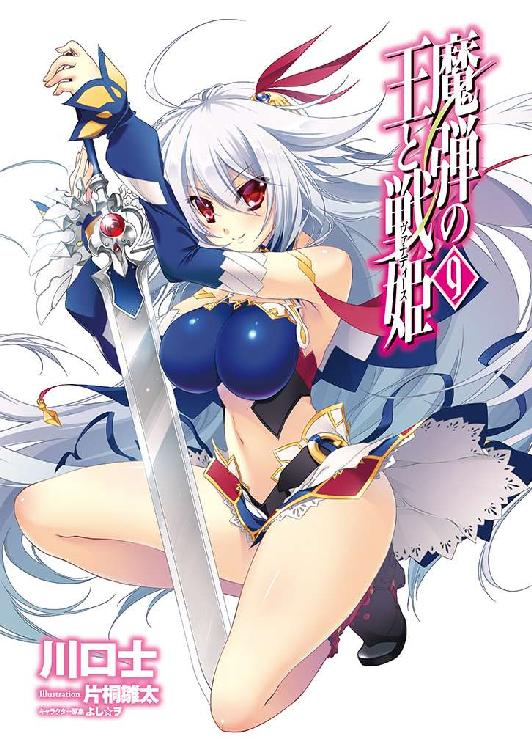
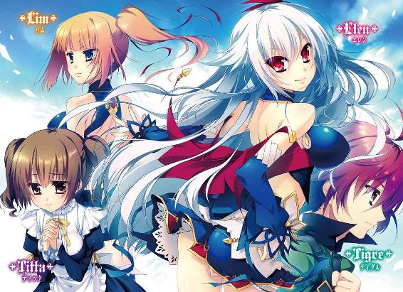
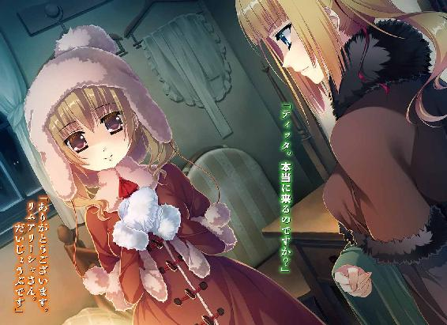
ＭＦ文庫Ｊ
魔弾の王と戦姫９
川口 士
口絵・本文イラスト●片桐雛太
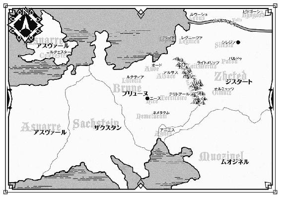
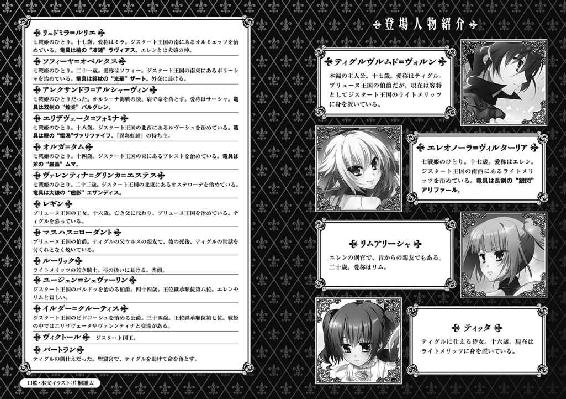
１ 過去と因縁
ジスタート王国は、内部に七つの公国を抱えこんでいる。
その内のひとつオルミュッツは、ジスタートの南部にあった。
『雪と森の国』と呼ばれ、他国にくらべて冬の長いジスタートでも、南は温暖な地域が多い。だが、丘陵や山の多いオルミュッツはそのかぎりではない。雪に覆われた山から吹き下ろされる風の冷たさは、野の獣でさえ毛を逆立ててうずくまってしまうほどだ。
そのオルミュッツの主をリュドミラ＝ルリエという。ジスタートが誇る戦姫のひとりで現在十七歳。『凍漣の雪姫』『槍の舞姫』の異名を持ち、親しい者からはミラという愛称で呼ばれている。
彼女がライトメリッツの使者を迎えたのは、厳しい寒さの続く冬の日のことだった。
「この時期に、ここまで来るのは大変だったでしょう」
自分の倍以上の年齢だろう使者に、ミラはねぎらいの言葉をかけて椅子を勧めた。
使者を通した応接室にはレンガ造りの大きな暖炉があり、その中で赤々と燃える火が室内の空気を暖めている。床には、良質の羊毛で織られた絨毯が敷かれていた。壁に飾られているのは、秋の収穫の様子を色鮮やかに描いたタペストリーだ。
ミラは青い髪を肩のあたりで切りそろえ、小柄な身体を青く染めた絹服に包んでいる。愛らしい面立ちでありながら、その振る舞いには、ひとの上に立つ者としてのたしかな威厳があった。彼女の竜具である凍漣ラヴィアスは、手の届くところに置かれている。
使者は一礼すると、手に抱えていた袋を慎重な手つきで床に置いてから椅子に座った。
室内はそれほど明るくない。テーブルの上に置かれた燭台の火と、暖炉の炎ぐらいしか明かりがないからだ。窓は、熱を逃さないよう厚いカーテンで閉ざされている。とはいえ外ではもう日が傾きかけているから、窓が見えていてもあまり意味はなかっただろう。
卓上にある湯を満たした鉄瓶を手にとり、ミラは二人分の紅茶を淹れる。ひとつは使者の分だ。
本来こうしたことは従者や侍女の役目だ。しかし、そうして然るべきと判断した相手には、彼女が手ずから紅茶を淹れることにしている。
湯気の立ちのぼる白磁のカップが、そっと使者の前に置かれた。カップの隣にある小皿には苺のジャムが盛られている。
「ありがたく頂戴します」
室内の暖かさと緊張とで顔中に浮かぶ汗を拭いながら、使者は恐縮してカップを持ち上げる。一口飲んだあと、ジャムを少しだけ入れてかき混ぜた。
「お忙しい中、お時間をいただけたこと感謝いたします。ところで、ここに来るまでの間に、南の国境沿いにいたムオジネル軍が撤退したという話を聞きましたが......」
「事実よ。私の部下たちも確認したわ」
自分の紅茶から立ちのぼる湯気で顎をくすぐりながら、ミラは憮然とした声で答えた。
「彼らは一ヶ月もの間、国境に居座っただけ。小競り合いすら起こらなかったわ。私だけでなく、他の貴族ともね。あなたの主にもそう伝えてちょうだい」
あなたの主。すなわちライトメリッツの戦姫エレオノーラ＝ヴィルターリアのことだ。使者は白磁のカップをテーブルに置いて、感謝の言葉を述べる。
ミラは紅茶をゆっくり味わいながら、使者の言葉を待った。ムオジネル軍の話を聞くためだけに、寒風吹きすさぶ中をここまでやってきたわけではないだろう。彼の足下にある袋も気になる。中身は従者が確認しているはずだから、危険なものではないだろうが。
使者は真剣な顔でミラを見つめて、口を開いた。
「本日、戦姫さまにお目通り願いましたのは、我がライトメリッツに逗留されていたティグルヴルムド＝ヴォルン伯爵のことについて、お話しさせていただきたかったのです」
「ティグル......ヴルムド卿？」
ミラの青い瞳が驚きで彩られる。ティグル、と彼の愛称を言いかけてしまい、とっさにごまかした。戦姫としても、ひとりの娘としても彼女はティグルに好意を抱いている。
あの若者が窮地にあれば、ミラは可能なかぎり力を貸すだろう。戦姫としての立場があるために公の場で口にしたことはないが。
「彼がどうかしたのかしら」
表向きは平静を装ってミラは訊いた。だが、それも使者の話を聞くうちに、徐々に剥がれ落ちていった。使者は彼女の表情の変化に気づいたが、話を止めようとしなかった。
夏の終わりごろ、ティグルはジスタート国王ヴィクトールの要請を受けて、海を隔てて西にあるアスヴァール王国へと赴いた。
当時、アスヴァールでは二人の王子とひとりの王女が玉座を賭けて争っており、ジスタートはその内のひとりジャーメイン王子に協力することを決めたのである。ティグルは使者としてジャーメイン王子のもとへ向かった。
その後、さまざまな混乱の中でジャーメインは命を落とし、ティグルはタラード＝グラムという若い将軍に協力して、ギネヴィア王女を内乱の勝利者としたのだった。ギネヴィアはジスタートとの友好を望み、結果としてティグルは役目を果たすことができた。
問題が起きたのはそのあとだ。
ジスタートへの帰還中、ティグルの乗った船が何者かに襲われた。
「同じ船に乗っていた戦姫ソフィーヤ＝オベルタスさまのお話によれば、襲ってきたのは船と同じぐらい巨大な海竜であったそうです」
海竜は船を破壊し、乗っていた者の多くが夜の海に投げだされた。
その中に、ティグルの姿もあったという。
「ソフィーヤさまはヴォルン伯爵を必死に捜索されたのですが、ついにその身を見つけることはできなかったと」
「──そう」
ミラはそれだけをつぶやいて、白磁のカップをテーブルに置く。彼女の手はかすかに震え、思ったよりも大きな音を響かせた。
青い髪の戦姫から目をそらして、使者は足下に置いていた袋を丁寧に持ちあげる。中から、絹布に包まれた何かを取りだしてテーブルに並べた。
絹布を取り去ると、小さな陶器の瓶が現れる。数は四つ。円筒形をしており、ふたの形と色がそれぞれ違っている。瓶を見つめて、事務的な口調で使者は言った。
「ヴォルン伯爵がアスヴァールで買ったものだそうです。戦姫さまへの贈り物にと」
「私に......？」
ミラは瓶のひとつを手に取り、ふたを開ける。心を落ち着かせる独特の香りが鼻孔をくすぐった。彼女には、それが何なのかすぐにわかった。紅茶だ。
「ありがたくいただくわ」
ミラは笑顔を作って言ったが、使者はテーブルを見つめたまま顔を上げなかった。青い髪の戦姫は彼を咎めず、話題を変える。
「ところで、ティグルヴルムド卿のことについて国王陛下は何とおっしゃっているか、あなたは知っていて？」
「いえ。私は存じませぬ」
──どうするつもりなのかしら。
ミラは内心で首をかしげる。そのような事故となれば、いつまでも隠し通せるものではない。先の内乱で弱体化しているとはいえ、ブリューヌは黙っていないだろう。
──責任を負わなければならない者が、必ず出てくる。まさかエレオノーラに罪を押しつけるとは思えないけれど。
そのあとジスタートの情勢についていくつか気になることを聞き、また使者の質問に答えると、ミラは侍従を呼んだ。使者を客室に案内するよう伝える。使者は立ち上がって丁重に礼の言葉を述べると、応接室を辞した。
ひとりになった空間で、ミラはテーブルに並ぶ瓶を見つめる。ひとつを手にとり、抱えこむように握りしめた。
「あなたが死んだなんて思わないわ。──でも」
震える唇から、憤りと悲しみの入り混じったつぶやきが漏れる。この応接室を出れば、オルミュッツを治めるリュドミラ＝ルリエとして振る舞わなければならない。自分しかいないこのわずかな時間に、彼女は感情のすべてを吐きだした。
「土産なら自分で持ってきなさいよ。馬鹿......」
それから、ミラは遠くライトメリッツにいる戦姫のことを考えた。
エレオノーラ＝ヴィルターリア。彼女も自分と同じように、あるいは自分以上に辛い思いを抱えているのだろうか。
応接室には、暖炉の中で薪のはぜる音だけが響いていた。
◎
白く濁った空から、雪片が音もなく舞い落ちる。
地面に触れればすぐに溶けて消えてしまうだろうが、兵士たちは暗澹とした気分になってため息をついた。雪は風をいっそう冷たくさせ、吐く息を凍らせる。まして、彼らはここで野営をしなければならない。
手を擦りあわせながら戦友たちと愚痴を言い合い、雪がひどくならないよう神々に祈るのが、彼らにできることだった。
ジスタート王国の中央よりやや南にあるラドム平原。たいして広いともいえないこの地に、およそ二千の兵が集まっている。
ライトメリッツの戦姫エレオノーラ＝ヴィルターリアに率いられた約一千と、ルヴーシュの戦姫エリザヴェータ＝フォミナに率いられた同じく約一千だ。黒竜旗の他にそれぞれの公国の軍旗もはためかせながら、兵たちは幕舎の設営に忙しかった。
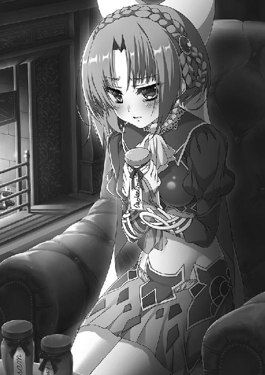
数日前、大貴族であるビドゴーシュ公爵イルダーが、ある理由からパルドゥ伯爵ユージェンを討たんとして兵を動かした。
イルダーを止めよとの王命を受け、二人の戦姫はそれぞれ兵を従えて自領を発った。そして情報交換のために、二人はこのラドム平原で合流を果たしたのだ。
だが、二人の戦姫はいま、明確な戦意を瞳にこめて激しく睨みあっている。両者ともすでに己の竜具を抜き放っており、文字通り一触即発の雰囲気だった。ちらつく雪も、まるで気にならないという風情である。
エレオノーラは、親しい者にはエレンという愛称で呼ばれている。年齢は十七と若く、腰まで流れる白銀の髪が印象的な美しい娘だが、彼女は『銀閃の風姫』『剣の舞姫』といった異名を持つほどの優れた戦士であり、指揮官だった。
青を基調とした軍装に身を包み、長剣をかまえるエレンの紅の瞳は、目が合った者を吹き飛ばしてしまいそうな怒気で輝いている。
エレンと相対しているエリザヴェータもまた、息を呑むほどの美貌の持ち主だ。
しかし、彼女を見る者に強烈な印象を与えるのは、鮮やかな赤い髪や、豊かな肢体を包む紫のドレスなどではなく、左右で色の異なる瞳──『異彩虹瞳』だろう。
鋭気を宿した金色の右目と、烈気を秘めた碧い左目はともに、熱を持つとささやかな雷光を帯びるという雷光晶を思わせた。
エリザヴェータの手には黒い鞭が握られている。エレンの長剣がそうであるように、この黒鞭こそが彼女の竜具だった。雷渦と呼ばれている。
この二人の間には少なからず因縁があり、険悪といって差し支えない間柄だが、むやみに争うことはない。にもかかわらず、こうして敵意も露わに対峙しているのには理由があった。エリザヴェータのそばに馬上でたたずんでいる若者の存在だ。
中肉中背で、凛々しさの中に素朴さを残した面立ちをしている。毛皮の胴着を着こみ、弓を背負って腰に矢筒を下げていた。
若者はウルスという。おそらく本名ではない。というのも記憶を失っているからだ。
およそ一ヶ月前、ウルスはジスタート西部の海岸に倒れていた。そこを通りかかった村人たちに助けられたのだが、目覚めてみると自分のことを何一つ思い出せなかったのだ。
ウルスという名は、何か思い出せることはないかと村人たちが質問を重ねた末に、若者の口から出てきた単語だった。
それから紆余曲折があり、ウルスはエリザヴェータに気に入られて彼女に仕えている。従者として傍らに控えさせるほどだから、そうとうなものだ。
ウルスも、エリザヴェータのことを嫌いではない。
──困ったところはあるけど、根は悪い方ではないようだ。
そのような印象を抱いていたし、行くあてもない身を拾ってもらった恩もある。記憶が戻るまでは、彼女に仕えていようと考えていた。
そのウルスを、エレンは違う名で呼んだ。
ティグルヴルムド＝ヴォルン。それが、おまえの本当の名だと。
彼女に従っている禿頭の騎士も、秀麗な顔を紅潮させて、主に劣らず熱を帯びた声で訴えた。ティグルヴルムド卿と。
突然のことにウルスが呆然としていると、たまりかねたようにエリザヴェータが割って入った。ウルスは自分の部下であり、ティグルヴルムド＝ヴォルンなど知らないと彼女は叫んだのだ。
そして、現在の状況に至る。
エレンもエリザヴェータも引く姿勢を見せず、相手をまっすぐ見据えていた。エレンの持つ長剣は風をまとい、エリザヴェータの構える黒鞭はうっすらと雷光を帯びる。
もはや、激突は避けられないものと思われた。二人の戦姫は呼吸を整え、間合いをはかり、目の前の敵に先制の一撃を叩きこもうと隙をうかがう。
だが、二人より先に動いた人物がいた。ウルスだ。ごく自然な動作で、若者は両者の間に割りこんでみせる。
「ティグル......」
白銀の髪の戦姫が、緊張に張り詰めた顔をわずかに緩ませた。一方、紅の髪の戦姫は声をあげかけ、しかしその口からは何も言葉が出てこず、黒鞭を両手で強く握りしめる。
ウルスはエレンに一礼すると、静かな、冷たささえ感じる声音で告げた。
「申し訳ないのですが、俺はあなたがたのことを思いだせません」
舞い散る雪が、時間を凍りつかせたかのようだった。
エレンは目を瞠り、言葉を失って指一本すら動かせずにいる。禿頭の騎士も、愕然として声を発することができなかった。その二人に、若者は深く頭を下げた。
「ただ、お願いします。俺のご主人をいじめないであげてください」
顔を上げて、ウルスは馬首を巡らせる。エリザヴェータのそばに控えた。
沈黙が訪れる。ウルスを除く三人は、衝撃のあまり顔を青ざめさせていた。若者の主であるエリザヴェータまでも。
十秒ばかり続いた静寂を静かな声音で破ったのは、白銀の髪の戦姫だった。
「──申し訳ない。エリザヴェータ」
長剣を鞘に収めて、エレンは馬から下りる。赤い髪の戦姫に向かって、さきほどのウルスに負けないほど深く、頭を下げた。
「私の早とちりだったようだ。非礼な態度をとってしまったことを詫びる」
エレンの手は固く握りしめられ、声は震えている。いまにもあふれ出さんばかりの膨大な感情が、その中に封じこめられていた。
エリザヴェータは、白銀の髪に覆われた彼女の頭部を黙って見下ろしている。何か意図があってのことではなく、すぐには言葉が出てこなかったのだ。ウルスの行動も、エレンの言葉も彼女には予想外だった。
「......わかってもらえて嬉しいわ。エレオノーラ」
黒鞭を握る手の力を緩めて、ため息とともに、彼女はゆっくりとその言葉を吐きだす。雪が降るほどの寒さだというのに、額には汗がにじんでいた。
彼女もまた、これ以上戦う意思がないことを示すべく黒鞭を丸めて腰に戻す。
「私も無用の争いをするつもりはないの。あなたがそう言ってくれるなら、この件はこれでおしまいにしましょう」
「ありがとう。エリザヴェータ」
エレンは顔を上げる。その顔には怒りも嘆きも浮かんでおらず落ち着きを取り戻していたが、声には活力が欠けていた。
「ところで、軍議は半刻後にあらためて行うことにしないか」
「そうね。私も異存はありませんわ」
エリザヴェータはうなずく。まだ二人の間に漂う空気はぎこちない。おたがい冷静になるために、わずかでも時間をおく必要があった。
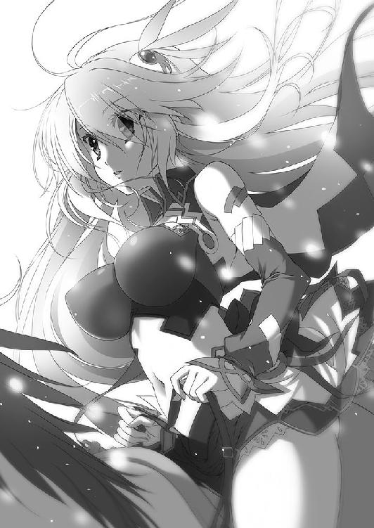
「では、ここに幕舎を用意させておく。半刻後には日も沈んでいるだろうからな」
「燭台やテーブルはこちらが持ってきましょうか？」
「分担して、何かが足りないとなれば面倒だ。必要なものはこちらで用意する。──それでは半刻後に」
エレンは馬に跨り、二人に一礼する。禿頭の騎士はもの言いたげな視線をウルスに向けていたが、白銀の髪の戦姫が馬首を巡らすと彼女に従った。
ライトメリッツの主従の姿が小さくなったところで、エリザヴェータは安堵の息をつく。それから、どこかむくれた子供のような顔をしてウルスを振り返った。
「私はいじめられてなどいませんわ」
少し高飛車な調子でのそれが、従者への第一声だった。ウルスは何度か瞬きをしたあと「はあ」と間の抜けた返事をする。この反応の方がよほど不敬であるはずだが、エリザヴェータはとくに咎めようともせず馬首の向きを変える。ウルスは急いで彼女に続いた。
自軍の幕営へ馬を進ませながら、エリザヴェータはウルスの名を呼んだ。
「私を気遣ってくれたことには礼を言うわ。──ありがとう」
背を向けているために、ウルスには彼女の顔が見えない。しかし、冬の風に乗って届いた戦姫の声は、嬉しさと恥ずかしさの溶け合ったものだった。
二人が幕営に帰り着いたころ、雪は止んだ。
ライトメリッツ軍の幕営に戻り、総指揮官用の幕舎に入ったところで、禿頭の騎士はたまりかねたようにエレンに主張した。
「戦姫さま。どうして、あのようなことをおっしゃったのですか。あの若者は間違いなくティグルヴルムド卿です」
「落ち着け、ルーリック」
エレンは静かな声でたしなめる。ルーリックと呼ばれた騎士は納得できないという顔をしながらも、主のために椅子を用意した。使わないときは折りたためるようになっている簡易式のもので、クッションを敷いて座るようになっている。
「ご苦労」
ねぎらいの言葉をかけて、エレンは椅子に腰を下ろした。
右手のてのひらを見ると、うっすらと血がにじんでいる。爪が食いこんだ痕だ。それほど強く拳を握りしめなければ、感情を抑えることができなかった。
「いじめないでください......か。さすがにあれは堪えた。あいつの目には、私がエリザヴェータをいじめているように見えたのか」
「あの言葉は、その場を治めるための方便でしょう」
火を灯した燭台をエレンのそばに置いて、なぐさめるようにルーリックは言った。もともと弁舌の巧みな男ではない。これが精一杯だった。エレンはうなずいたものの、納得したというふうではなく、部下の気遣いに配慮しての反応に見えた。
重苦しい空気がわだかまる。
閉ざされた幕舎の中で風が吹いたのは、そのときだ。
そよ風はエレンの頬をそっと撫で、燭台の炎をゆらめかせる。風を起こしたのは、彼女の腰にある長剣だ。銀閃と呼ばれるこの竜具には、風を操る力が備わっている。
「アリファール......」
エレンは目を丸くして長剣の名を呼び、小さく笑った。紅の瞳が輝きに満ちて、生気を取り戻す。自分を励ましてくれた長剣の鞘を、彼女は礼代わりに軽く叩いた。
──そうだな。へこたれている場合ではない。
気を取り直したエレンは、腕組みをしてルーリックを見上げる。
「ルーリック。私もおまえと同じ意見だ。あいつはティグルだと思う」
「ならば、なぜ......」
「簡単だ。証拠がない」
エレンはあっさりと答えた。
「ウルスと名のったあいつが本当にティグルだとして、それを証明するものを私たちはなにひとつ持っていない。おまけに記憶喪失ときたものだ」
「ですが、我々の言葉にティグルヴルムド卿は反応を見せていました。もっといろいろなことを話せば、きっと......！」
「話をさせてくれるよう頼んでも、エリザヴェータは断るだろう。何があったのかはわからないが、あいつはずいぶんとティグルに執着している。強引に迫れば、今度こそ斬り合い、殴り合いだ」
「それでは、王宮に報告してはいかがでしょうか」
妙案を思いついたというように、ルーリックは顔を輝かせる。燭台の明かりが反射してつるりとした頭部も輝いた。
「ティグルヴルムド卿は、ブリューヌ王国から預かっている客将。今度の事故で、王宮も大騒ぎのはずです。そこへ我々が報告すれば、事態を好転させることができるのでは」
「それは私も考えないでもなかったが──」
エレンは深刻な顔で、この上なく不吉な予想を口にする。
「記憶を取り戻したとして、万が一......万が一、私たちの勘違いで、本当に別人だったらどうする？」
まさかと笑い飛ばそうとして、ルーリックはできなかった。何かを言おうとしても、不安に胃を締めつけられて言葉が出てこない。
視線をさまよわせる禿頭の騎士に憐れむような眼差しを向けて、エレンは続けた。
「誰が言ったのかは知らんが、世の中には、まったく同じ顔の人間が二人か三人はいるそうだな。顔や背格好がそっくりなのは、ただの偶然かもしれない。私たちの言葉に反応したのだって、どうでもいい一単語が引っかかっただけなのかもしれない。記憶喪失と聞いて、私たちは無意識のうちに変な期待を持ってしまっているのかもしれない」
ありえないとは言い切れない話だった。そもそもティグルは冬の海に、それも真夜中に落ちて、懸命の捜索にもかかわらず見つからなかったのだ。生きていると考える方が、無理がある。
「あいつが別人だったら、今度こそエリザヴェータは私を許さないだろう。ライトメリッツとルヴーシュの関係は極限まで悪化する。戦を考慮に入れなければならないほどにな。下手をすれば、レグニーツァにも飛び火する」
ジスタート南東部にあるライトメリッツと、北東部にあるルヴーシュの間には、レグニーツァがある。戦姫アレクサンドラ＝アルシャーヴィンが治めていた地だ。
『煌炎の朧姫』の異名を持つ彼女は病で命を落とし、後を継ぐ新たな戦姫はいまだに現れていない。この状況で争いに巻きこまれれば、はかりしれない被害を受けるだろう。
「王宮も、いまごろはブリューヌへの対応を必死に考えているはずだ。なにしろ預かった客将を、国王の要請がもとで死なせてしまったのだからな」
一瞬だけ、エレンの声が怒りを帯びた。わずかな沈黙を挟むことで感情の激発をおさえると、彼女は皮肉めいた笑みを浮かべる。
「そんなところにあいつを連れていって、別人であってみろ。勘違いでしたではすまん。我々が偽者を用意して欺こうとした。ブリューヌはそう考えるだろうな」
ルーリックは低く呻いた。そうなれば、ブリューヌとの間に戦争が起きかねない。
エレンは笑みをやわらかいものに変えると、落ち着いた口調で言った。
「軍議まであまり時間がない。ひとまずティグルのことは忘れろ。いまはビドゴーシュ公爵の件に集中する。おまえより先に、エリザヴェータに食ってかかった私が言っても説得力には欠けるがな」
「そんなことは......」
ありません、とルーリックは言おうとしたが、考えをあらためて表情を引き締める。
「かしこまりました。しばらく外の風にあたって、頭を冷やしてまいります」
「葡萄酒も一杯だけなら許す。この寒さだ。エリザヴェータも文句は言わないだろう」
エレンがそう答えると、ルーリックは敬礼をして幕舎を出ていった。
幕舎の中にいるのはエレンだけになる。
腕組みを解かず、真剣な表情で『銀閃の風姫』は何もない空間をじっと見据えていた。
◎
一方、ルヴーシュ軍の幕営である。総指揮官用の幕舎でエリザヴェータとウルスを出迎えたのは、戦姫の側近を務める騎士ナウムだった。
年齢は三十半ばだというのに、黒髪には白髪が多く交じっており、髭を丁寧に剃った顔には労苦を思わせる深い皺が刻まれている。
ナウムは素性の知れないウルスにも好意的に接する、数少ない男だった。
エリザヴェータは幕舎に入るまで傲然たる態度を崩さなかったが、ウルスとナウム以外の視線がなくなると、いつになく上機嫌な笑みを浮かべる。
「ウルス。軍議まで休んでいなさい」
「......私がお供して、よろしいのですか？」
遠慮がちにウルスは聞いた。自分が原因で、戦姫同士の激突が起こりかけたのは明白だったからだ。エリザヴェータは当たり前だという表情でうなずく。
「他の者を連れていったら、かえって怪しまれてしまうわ。あなたは私の従者として、堂々としていればいいの」
「ありがとうございます」
彼女のための椅子を用意しながら、ウルスはやや戸惑い気味に感謝の言葉を述べた。燭台に火を灯したナウムが、赤い髪の戦姫に尋ねる。
「果実水でもお持ちしましょうか」
「やめておくわ。少し休んだら、またすぐに出るから」
「かしこまりました。私は外におりますので、何かありましたらお呼びください」
ナウムはウルスに目くばせをして、幕舎から退出した。
「私もしばし、おそばを離れさせていただきます」
ウルスもナウムに続いて幕舎を出ようとしたが、主に背を向けたところで、不意に呼び止められた。振り返ると、異彩虹瞳の戦姫はばつの悪い顔でウルスを見つめている。兵たちに次々と命令を下す指揮官の威厳は、いまの彼女からは感じられなかった。
「私たちがエレオノーラと何を話したのかは、他言無用よ」
ウルスは困ったような笑顔をつくる。ナウムは、まさしくそのことを自分に聞きたいのだろうから。しかし、主の懇願にも似た眼差しを向けられると、命令だからというよりも可哀想な気がして、いやですとは言えなかった。
「大筋は説明しても、どのような言葉をかわしたのかなど細かい部分は一切口外しないということで、いかがでしょうか」
「それでいいわ」
不満そうな顔つきをエリザヴェータはしてみせたが、声はそれほどでもない。いまになって威厳を取り繕おうとしているらしかった。ウルスは苦笑を堪えて一礼し、今度こそ幕舎を出る。
いきなりの寒風が、若者の身体を吹きぬけた。身震いしながら見上げた空は薄暗く、月と星が徐々に輝きを増しつつある。
幕営の各所には篝火がたかれ、兵たちは夕食の準備をはじめていた。土を固めてつくった炉に、鍋をかけている。鍋からは、白い湯気が立ちのぼって夜気に溶けていた。
鍋のまわりでは、炉の火に手をかざしている兵もいれば、配給された火酒を手や足に擦りこんで身体を温めている兵もいる。それを見て「もったいないことを」と嘆く兵も。
──今夜はたしか魚スープだったな。
鍋にたっぷり水を張り、ぶつ切りにした魚や野菜をじっくり煮込んだもので、ジスタートでは親しまれている料理だ。今日は塩漬けのタラとタマネギ、ジャガイモにニンジンを使っている。味つけはタラに使われている塩だけだが、かなり濃いので充分だろう。
彼らをぼんやりと眺めていたウルスは、名前を呼ばれてそちらを振り返る。ナウムが立っていた。果実水の瓶と大きなライムギのパンを二つ、抱えるように持っている。
「軍議はいつ終わるか、わからないからな。温かいものじゃないが、食べておけ」
「ありがとうございます」
ウルスはパンを受けとる。空腹を覚えていたので、正直ありがたかった。
「しかし寒いな。歩きながら話すか」
「ご主人のそばを離れてもだいじょうぶなんですか？」
「見張りの兵はいるし、ほんの少しだ。軍議まであまり時間もないしな」
二人はパンをかじりながら並んで歩きだす。
「想像はついているが、何があったのか教えてくれ。どうして軍議が半刻後になった？」
ウルスは起こったことを簡潔に説明した。エレンとルーリックが自分をティグルと呼んだこと。エリザヴェータがそれを否定し、言い争いになったこと。ウルスが仲裁に入り、自分はエリザヴェータの従者であると答えたこと。
「──それで、ライトメリッツの戦姫さまがご主人に謝罪をなさって、仕切り直そうと」
ウルスは気の毒そうな表情で、自分より十以上は年上だろう騎士を見上げた。話している間中、ナウムはずうっと渋面をつくって、顔の皺をますます深くしていたのだ。ただでさえ少なくない白髪が、さらに増えるかもしれない。
話を聞き終えたナウムは、顔の皺を指で撫でながら盛大にため息をついた。
「そうか。いや、おまえはよくやってくれた。とにかく最悪の事態は避けられたんだ」
エリザヴェータがウルスを伴って軍議へ向かうと言ったとき、ナウムは言葉を尽くして反対したものだった。二人の戦姫が正面からぶつかりあう可能性を、彼はもっとも危惧していたのだ。
「ナウムさん。教えてほしいことがあります」
パンを呑みこみ、果実水の瓶を受け取って口の中を潤すと、ウルスは真剣な表情でナウムを見る。ナウムはパンを頬張っている最中だったので、無言で首を縦に振った。
「俺は、そんなにティグルヴルムドというひとに似ているんでしょうか」
「......それはわからないな」
ようやくパンを呑みこんで、ナウムは口を拭いながら答える。
「私も、戦姫さまもティグルヴルムド＝ヴォルンそのひとを見たことはないんだ。だが、彼の話は聞いている。ライトメリッツの戦姫さまがそうおっしゃったのならば、少なくとも瓜二つではあるのだろうな」
ナウムはティグルヴルムド＝ヴォルンについて、説明した。昨年ブリューヌ王国で起こった内乱を見事終息に導いた男であり、ブリューヌに侵攻してきたムオジネル軍二万をわずか二千の兵力で撃退した男であると。
「とくに、弓の技量が尋常ではないそうだ。狙った獲物はどれほど遠くにいようと決して逃さず、一度矢を放てば確実に仕留めるらしい。竜を射倒したという噂もある」
「自分のことではなさそうですね」
ウルスは苦笑して肩をすくめた。竜の鱗が、鋼鉄を鍛えた剣でも歯が立たない硬さであることは、この若者でも知っている。ナウムも笑ったが、すぐに真面目な顔になった。
「忘れているだけかもしれない」
二人はどちらからともなく足を止める。穏やかな口調で、ナウムは言った。
「おまえが望むのならば、この件が終わったあとでライトメリッツに交渉してみるか。おまえを預かって、身元を調べてくれるようにと。ライトメリッツはブリューヌ王国と国境を接している。あの国の情報が、ルヴーシュよりも豊富に手に入るはずだ」
ウルスはすぐには答えず、考えこむようにうつむいた。
「他にも教えてほしいことがあるんですが、先にそのことを聞いていいですか」
果実水の瓶を受け取りながら、ナウムはうなずく。ウルスは黒い瞳に純粋な疑問を湛えて尋ねた。
「ご主人は、どうして私をここまで気に入ってくださっているんでしょうか」
以前ナウムに聞いたかぎりでは、エリザヴェータが自分を気に入っているのは弓の技量を評価していることと、はじめて自分で選んだ部下だからということだった。
しかし、エレンとの言い争いの際、エリザヴェータは叫んだ。
「私のウルス」と。
昂ぶった感情が言わせたにせよ、それだけで、あのような言葉が出てくるだろうか。それがウルスには不思議だった。ましてルヴーシュの公宮で働くようになってから、まだ一ヶ月過ぎたかどうかなのだ。
質問をぶつけられたナウムは目を丸くして、唖然とした顔で若者を見つめている。そんなに妙なことを言っただろうかとウルスは内心で首をひねった。
ナウムは難しい顔で首を左右に振り、顔の皺を撫でながら唸っていたかと思うと、ため息をついた。
「おまえさん、鈍いって言われたことないか？」
「鈍いですか......？」
「鈍いな。まったくもって鈍い。まあ記憶がないからということにしておこうか」
きょとんとして立ち尽くすウルスに、鈍いを強調してナウムは呆れたように笑う。
「おまえさんの弓の技量を評価したこと。はじめて、ご自分で選んだ部下であること。この二つは前に言ったな？」
ウルスはうなずいた。不意に、頭の中にひとりの少女の姿が浮かび上がる。
それは、さきほど会ったばかりの白銀の髪の戦姫だった。初対面の相手にも親しみを感じさせるような明るい笑みを浮かべて、彼女は言った。
──おまえは私の捕虜だ。そういえば、おまえがはじめての捕虜だな。
──おまえの弓の技量に惚れたんだ。
「......ウルス？」
名前を呼ばれて、若者は我に返る。ナウムが不思議そうな顔でウルスを見つめていた。
「どうした？ ぼうっとして」
「いえ......その、はじめてご主人とお会いしたときのことを思い出して」
なぜだかエレンのことを口にしてはいけない気がして、ウルスはとっさに思いついたでまかせを口にする。ナウムは苦笑を浮かべた。
「ああ。あれは大変だったな」
エリザヴェータにはじめて会ったとき、ウルスは村人らと海岸にいた。海賊たちに襲われていたのだ。海賊たちの数は多く、気晴らしの散策に出ていたエリザヴェータが通りかからなければ、ウルスたちはまず助からなかっただろう。
とはいえ、素直に幸運だったとも言い難い。竜具を振るって海賊を蹴散らしたエリザヴェータは、逃げた海賊を追うべくウルスたちに舟を供出させ、さらに舟を漕ぐようにと命じたからだ。そのときエリザヴェータに付き従っていたナウムにとっては、胃の痛くなる思い出だった。
「ウルス。戦姫さまにはじめて会ったとき、あの方の目をどう思うかと問われただろう。何と答えたか覚えているか？」
笑いを収めて、苦労性の騎士は自分の目を指で示す。ウルスは記憶をさぐるように何度か瞬きをしたあと、うなずいた。
「猫みたいだ。そう答えたはずです」
そう答えたために、同じ舟に乗っていた村人によって海に突き落とされたのだ。前後の体験と併せて、忘れられるものではなかった。
ナウムはほろ苦い笑みを浮かべると、ウルスから視線を外す。離れたところで鍋を囲んでいる兵たちを眺めた。彼らの楽しそうな話し声がここまで聞こえてくる。
「ここにいる兵たち......いや、公宮に勤めるすべての者に聞いてまわっても、おまえと同じ答えを出せる者はいないだろうな」
遠い目をして、ナウムは果実水を一口飲んだ。
「戦姫さまのあの目は、異彩虹瞳といってな。ルヴーシュでは吉兆を呼ぶといわれ、尊ばれている。──だが、戦姫さまの生まれ育ったところでは、逆だった」
騎士の台詞の後半は、苦みと憤りが入り混じっている。
「不吉である。禍々しいものだ。災いを呼ぶ。いまでも、あの地域ではそう思われているらしい......。あの方はさる貴族のご落胤だったが、あの両目を持って生まれたがために、親のわからぬ捨て子として小さな寒村で育てられたそうだ」
エリザヴェータは、親に捨てられたということか。ウルスは息を呑み、怒りに顔を歪めた。白髪交じりの騎士は話を続ける。
「目の色が違う。ただそれだけで蔑まれ、罵られ、痛めつけられる。老人、大人、子供にいたるまで、誰ひとりとして味方になってくれる者はいない。十歳になるまで、あの方はそんな日々を過ごされた。当時のことをあの方はお話しにならないが、言葉にできないほど辛い生活だったのだろうことは間違いない」
「ご主人がお話しにならなかったことを、どうして知っているのですか？」
「調べた」
あっさりとナウムは答えた。非難めいた眼差しを向ける若者に、力なく笑ってみせる。
「そんな顔をしないでくれ。さっきも言ったが、あの方は貴族のご落胤だった。ルヴーシュに勤め、あの方に仕える者として、調べないわけにはいかなかったんだ」
「......そうですね。すみません」
すぐにウルスは思い直して、疲れた顔の騎士に謝罪した。ルヴーシュで働くようになってまだ一ヶ月ほどではあるが、そうした必要性は理解できる。ナウムは気にする様子も見せず、果実水の瓶に口をつけた。
「もちろん調べましたなんて戦姫さまには言えないからな。詳しくは知らないということにしてある。おまえも、あの方の前ではそう振る舞ってくれ」
「わかりました。ところで、その村の者たちはご主人の素性を知っていたのですか？」
ウルスが疑問を口にすると、ナウムは表情を隠すように顔を手で覆う。
「勘がいいな......。村長をはじめ主だった者たちは、あの方が貴族の娘であることを知っていた。だから、死なせることだけはないように気をつけていたらしい。痛めつけるのはいいのかと思うだろうが、そのあたりの加減、判断は当人たちにしかわからん」
ウルスは背筋が冷えるのを感じた。暗い空と寒風のせいばかりではないだろう。
「話を戻すが──十歳になって、あの方は父親に引き取られた」
──まともな理由ではなさそうだな。
ナウムの横顔を見てウルスはそう思ったものの、口には出さず黙って耳を傾ける。
「跡を継ぐ予定だった子が病で亡くなり、父親の血を引くのがあの方しか残っていなかったそうだ。それに、ルヴーシュのように異彩虹瞳をありがたがる土地もある。そのことに遅まきながら気づいたのだろうな」
──自分の都合で捨てて、また自分の都合で引き取るのか。
あまりにも身勝手な話にウルスは憤りを覚えた。夜風など気にならないぐらいに、若者の頭の中が熱を帯びる。それを見て取ったのか、ナウムはしばらく黙った。彼が話を再開したのは、たっぷり十秒は過ぎてからだ。
「お父君のもとでの生活は、あまりよいものではなかったようだ。無理もない。お父君自身は、異彩虹瞳を受け入れたわけではないからな。そして三年前。十五歳になったあの方は戦姫となられた」
「三年前......？」
訝しげな顔をするウルスを振り返り、ナウムは深刻な表情でうなずいた。
「はじめてルヴーシュにお見えになったとき、あの方は誰が見てもわかるほど戸惑っておられた。とりわけ異彩虹瞳であることを喜ばれたのが何よりの驚きだったようだ」
色の違うこの瞳は不吉なもの。自分の境遇を決定づけた忌まわしいもの。そう思って生きてきたのに、それが一変したのだ。エリザヴェータにとっては、それこそ天地がひっくり返るほどの衝撃だったに違いない。
「公宮での生活に慣れてくると、あの方は、我々によく問いかけられるようになった」
おまえ。私の瞳を見てどう思う？ 思ったことを素直に言いなさい。
「──私は『宝石のように美しゅうございます』と答えた」
果実水の瓶を振って空になったことを確認しながら、ナウムは口元を歪めた。
「語彙が乏しいなりに誠実に答えたつもりだが、臣下という立場を意識しなかったといえば嘘になる。私だけじゃない、問われた者たちは誰もがそうだった。それがわかるのだろうな、答えを聞くたびに、あの方はつまらなそうな顔をなさっていた。ところがだ──」
ナウムはそれまでのものとは違う、どこか楽しげな笑みを浮かべてウルスを見た。ただし、その双眸には真剣な色が宿っている。
「おまえさんが現れた。あの答えには正直仰天したが、戦姫さまのあんな笑顔はいままで見たことがない。あれこそ、あの方が心の底から望んでいたものだろうと思ったよ」
異彩虹瞳を見ても、凶兆とも吉兆とも思わない。
一目で身分の高い者だとわかるエリザヴェータの顔色をうかがうこともせず、落ち着き払った態度で忌憚のない感想を述べる。
記憶がなく、それゆえに素性がわからず、余分な知識や偏見を持たず、立場にもとづくしがらみもないウルスだからこそ、できたことだった。
ナウムが手を伸ばしてウルスの肩をつかむ。驚く若者をまっすぐ見据えた。
「ライトメリッツに行くかと、私はおまえに聞いたな。その言葉を覆すつもりはない。おまえが望むのなら、手を尽くそう。戦姫さまも説得しよう。だが、本心を言えばこのままルヴーシュに留まって、戦姫さまにお仕えしてほしい。勝手なことを言っているのは充分に承知しているが......」
肺の中に溜まっていた空気を残らず吐きだすように、ナウムは一気に言葉を紡ぐ。肩をつかまれていたこともあるが、それ以上に懸命な目の輝きに気圧されて、ウルスは彼から目をそらすことができなかった。
「──あの方には、おまえが必要だ」
若者の肩をつかむナウムの手に、力がこもる。ウルスは顔をしかめて呻いた。ナウムはその声で我に返り、慌てて手を離す。「すまん」と小声で詫びた。
ウルスは気にしていないというふうに首を振ると、地面に視線を落とす。そっとため息をこぼした。
──とんでもない話を聞かされたなあ......。
ナウムを責める気はない。もともとウルスが聞きたがったことなのだ。おかげで、どうしてエリザヴェータが自分のような人間にこだわるのかはわかった。
しかし、これほど重大な問題を抱えこむことになるとは、さすがに思わなかった。
──どうしたものかな。
エリザヴェータのことは嫌いではない。拾ってもらった恩もある。およそ一ヶ月前のあの日、彼女が自分に仕えるようにと言わなければ、ウルスはいまでもあの漁村にいただろう。村の仕事を手伝って、旅に出るための費用を細々と稼いでいたに違いない。
──だけど。
白銀の髪の娘と、彼女に従っていた禿頭の騎士の姿が脳裏に浮かぶ。彼女らの叫びは必死で、そして切実なものだった。真摯さがあった。
──彼女のこと、エレオノーラってご主人は呼んでたな。
口の中で何度かつぶやいてみる。不思議と、その名前は快い響きを伴って若者の心に聞こえた。かつては親しい仲だったと言われたら、疑いなく信じてしまいそうなほどに。
ウルスが悩み、葛藤している間、ナウムは身じろぎもせず黙って立っている。暗がりの中で、若者が答えを出すのを静かに待っていた。
やがて、ウルスは顔を上げた。申し訳なさそうな表情で謝罪の言葉を述べる。
「すみません」
ナウムはすぐには反応せず、五秒ほどの時間が過ぎてからようやく肩を落とし、ため息をついた。
「いや、いいさ。困らせるようなことを言ってすまなかったな」
「いえ、貴重なお話を聞かせていただいたと思っています。それで、ひとつお願いがあるのですが」
ウルスの言葉に、ナウムは怪訝そうな顔になる。視線で若者を促した。
「ティグルヴルムド＝ヴォルンというひとについて、調べてもらえませんか？ どのような人柄で、どういった立場だったのか。海に落ちて死んだとご主人は言っていましたが、それは事実なのか。そのひとは......本当に、私なのか」
一言一言を噛みしめるようにウルスは言葉を発し、最後にこう締めくくった。
「それがわかるまで、あるいは記憶を取り戻すまではご主人にお仕えしようと思います。ご主人のことで、軽はずみな約束はしたくないんです」
ナウムは目を瞠り、ぽかんとした顔で若者を見下ろした。一呼吸分ほどの時間で気を取り直すと、ひとの悪そうな笑みを浮かべて尋ねる。
「いいのか？ 私の考えはさっき言った通りだ。いろいろなことがわかっても、おまえには何も教えないかもしれない。いや、そもそも調べることすらしないかもしれない」
「かまいません」
ウルスはにこりと笑って答えた。エリザヴェータの過去について、ナウムは自分を信頼して話してくれたのだ。だから、自分も彼を信頼することに決めた。
ナウムはしばらく若者を見つめると、呆れたような笑みを浮かべた。
「今後ともよろしく頼む。おまえさんのために、できるかぎりのことをしよう」
「こちらこそ、よろしくお願いします」
星の瞬く空の下で、二人の男は固い握手をかわす。もう片方の手で、照れくさそうに頬をかきながらウルスは言った。
「ところで、もうひとつ教えてほしいことがあるんですが」
「何だ？」
手を離しながらナウムは聞いた。ウルスは顔をしかめて、チェスで次の一手に迷う打ち手のような表情で尋ねる。
「うちのご主人と、ライトメリッツのエレオノーラ様との間には何かあったんですか？」
「どうしてそう思う？」
「ご主人とエレオノーラ様を見ていて、なんとなく......」
ウルスはくすんだ赤い髪をかきまわして言葉を濁したが、即座に聞き返してきたナウムの顔を見て、何かあるらしいと察した。
思いつきなどではない。軍議に向かう際、エリザヴェータの横顔はどこか余裕がなさそうに見えた。それに、エレンの態度もおかしかった。自分の存在があったとはいえ、あれほど感情的になるものだろうか。
「......そうだな。軍議の前に、相手のことを多少なりとも知っておく必要があるな」
ナウムは首を傾け、果実水の瓶を逆さまにして一滴だけ飲んでから若者に視線を戻す。その目は沼を覗きこむような暗さを湛えていた。
「おまえの推測通り、お二人の間には因縁がある。二年ほど前の秋に、王家の直轄領内にある村で疫病が発生した。その村はルヴーシュの国境のすぐそばにあってな。戦姫さまは村を死者ごと焼き払い、疫病にかかっていない者たちについては、ひとまず隔離した」
ウルスは真面目な顔でうなずく。エリザヴェータの対処法は一見残酷だが、正しいと思えた。自分が彼女の立場でも、疫病の拡大を防ぐために同じことをするだろう。
「その村は、ライトメリッツの戦姫さまにとって思い出の地だったらしい。隔離された者たちの世話を申し出てこられた」
「それは、ありがたいことではないんでしょうか」
「だが、我々の戦姫さまは断られた。王家の直轄領内の村のことについて、複数の戦姫が介入すべきではないと。実際、我々の戦姫さまがいろいろと対処なさったことも、王家にとっては不満だったらしい。国王陛下を信頼していないのか、とな」
皮肉めいた口調でナウムは笑い、ウルスは唖然としていた。
疫病への対処は、時間との勝負だ。遅れるほどに被害は広まってしまう。その時点でより早く動ける者がことにあたるべきであって、国王とか信頼とかは関係ない。
「戦姫さまは、隔離された者たちを放っておいたわけじゃない。彼らが冬を越せるよう資材も食糧も手配し、医師まで派遣した。村の再建についても援助を約束した。重ねて言うが、王家の直轄領内の村なのにだ。だが、連中のほとんどは冬を越せなかった」
ウルスはおもわず唇を強く噛みしめていた。そのときのエリザヴェータ、そしてエレンの心情を思いやるだけで、苦悶の声が歯と歯の間から漏れそうだ。
「ライトメリッツの戦姫さまは、我々の戦姫さまを責めた。仕方がない。手を尽くされたとはいえ、申し出を断ってこの結果だったんだからな。これが因縁のひとつだ」
ナウムの最後の台詞に、ウルスは渋面をつくる。
「......まだ、何かあるんですか？」
「ああ。ほとんど同じ時期にな」
ナウムは疲れたような笑みを浮かべて歩きだした。そろそろ幕舎に戻らなければならない頃合いだ。ウルスも彼の隣を歩く。
「戦姫さまのお父君が貴族だったことは話したな。ロジオン＝アブトという方だが、この方が問題を起こした。民が納めた税を着服しておいて、今年は不作だっただの、橋の補修に金がかかっただのと、王都には虚偽の報告を行っていたんだ。その上、領内の野盗どもを集めて近隣諸侯の村や町を襲わせた」
ナウムはそこで一旦言葉を切る。二人は不快感に満ちた顔を見合わせた。エリザヴェータの父親とはまるで思えない。ナウムは憮然とした顔で話を再開した。
「このロジオン卿の領地というのがライトメリッツに近くてな。国王陛下は当然のごとくライトメリッツの戦姫さまに討伐を命じられたんだが、我々の戦姫さまが自分に任せてほしいと申し出られた。ロジオン卿を説得して、罪を償わせるとな。ライトメリッツの戦姫さまは、それを受け入れてくださったんだが──」
「それで、どうなったんですか？」
「ロジオン卿は話しあいの場にすら現れず、逃げた。そしてライトメリッツの戦姫さまに討たれた」
あまりにもひどい話に、ウルスは言葉が出てこなかった。
「その後、我々の戦姫さまはライトメリッツの戦姫さまに決闘を挑まれた。負けた。完敗だった」
ナウムの声が淡々としているのは、感情を抑えているためだろう。ウルスはといえば、頭を抱えこみたい心境だった。これはもう、因縁などという言葉で片付けてよいものではない。
気分を落ち着かせたくて、ウルスはどうでもいいことを聞いた。
「では、アブト家はご主人が継いだのですか？」
たしか戦姫にはヴァレンティナという方がいたはずだと記憶をさぐる。彼女は貴族の生まれだったので、姓を二つ持っている。エリザヴェータもそうなるはずではないのか。
「王命に逆らったかどで、アブト家はお取り潰しとなった。戦姫さまもアブト家を守ろうとはなさらなかった。そのお気持ちはわかる。それから去年の秋だが──」
恐ろしいことに、ナウムの話は終わらなかった。ウルスはまだあるのかという顔で彼を見たが、白髪交じりの騎士は当たり前のように話を続ける。
「ルヴーシュの南にレグニーツァがあるのは知っているな？ そこを治めていた戦姫アレクサンドラさまと、ライトメリッツの戦姫さまはおたがいを親友と呼び合うほどの仲だったそうだ......。そのレグニーツァに、我々の戦姫さまは兵を進められた」
もう勘弁してくれとウルスは内心で嘆いたが、ここまできて止めるわけにはいかない。萎えかけた足に力をこめて、冷たい大地を踏みしめた。
「そのとき、ライトメリッツの戦姫さまはブリューヌにおられたが、驚くほどの速さで戻ってこられてな。病で伏せっておられたアレクサンドラさまの代わりに、我々の前に立ちはだかった」
「ご主人は、どうしてレグニーツァに攻めこんだのですか？」
「政治的な事情だ。詳しく知りたければ、機会を見て戦姫さまに聞くといい」
ナウムはそう言って答えを濁した。答えられないわけではない。ただ、説明のための説明が増えて、どう考えても時間が足りなくなる。
「ライトメリッツの戦姫さまとの因縁は、こんなところだ。どうにか間に合ったな」
「あの、軍議に出るの、代わってもらえませんか？」
この上なく真剣な面持ちで、ウルスは懇願した。たとえエリザヴェータに気に入られていようと、そんな二人が顔を合わせる軍議に参加するなど貧乏くじ以外の何物でもない。よくあの場で取っ組み合いにならなかったものだと思う。
騎士と若者は足を止めた。沈黙が二人を包む。空になった果実水の瓶を振りながら、ナウムはおおげさに肩をすくめた。
「すまないな、ウルス。できることなら私も代わってやりたいんだが、戦姫さまを説得する言葉がまるで思い浮かばない」
「あの、さっき、できるかぎりのことをしてくれるって言いましたよね」
「できるかぎりのことを、な。これはちょっと私には無理だ」
「その割には声に余裕がありませんか」
ウルスの指摘する通り、ナウムの声はついさきほどまで息の詰まるような深刻さを帯びていたというのに、いまは重荷から解放されたかのように穏やかだった。
「経験は、おまえさんみたいな若者にこそ必要だ。健闘を祈る」
「波乱が予想される現場には、経験豊富な熟練者こそ必要だと私は思うのですが」
「いま逃げても、いつかは大きな仕事を任されるようになるんだぞ。何より今回の件は、どう考えてもおまえさん以上の適任者はいない。飯を食って英気も養っただろう？ だいじょうぶだ、おまえさんならできる」
「ナウムさんにもらったパンを食べたら腹が痛くなったと、ご主人に訴えますよ」
二人はそのまま睨みあったが長くは続かず、どちらからともなく苦笑を浮かべる。呆れはしたものの、ナウムのしたたかさをウルスは嫌いになれなかった。
ナウムはウルスの肩に手を置くと、背中を丸めて深く頭を下げる。
「頼む。ここは引き受けてくれ。軍議は戦姫さまの独壇場といっていい。側近に意見を求めるようなことはなさらないし、おまえさんに何か言わせるときは事前に指示がある。戦姫さまがおっしゃっていたように、黙って立っていればいいんだ」
「ですが、ご主人と向こうの戦姫さまとの間に争いが起きたときはどうすれば？」
「なんとか戦姫さまをなだめすかしてくれ。いざとなれば、駄々をこねる子供相手だと思って叱ってもかまわん。責任は私がとる」
「......そうならないよう、神々に祈っておいてください」
叱られて子供のようにしょんぼりとするエリザヴェータの姿を想像してしまい、ウルスはげんなりした顔でそう言うのが精一杯だった。
◎
両軍の幕営のちょうど中間に、ひとつの幕舎が設置された。エレンが用意させたものだ。
いま、その幕舎の中では四人の男女が古びたテーブルを挟んで向かいあっている。燭台の炎が、四人の顔と卓上に広げられた何枚もの地図を照らしていた。
ルヴーシュ側からはエリザヴェータとウルス、ライトメリッツ側からはエレンとルーリックが出席している。
「──あらためまして。ルヴーシュの戦姫エリザヴェータ＝フォミナですわ」
「ライトメリッツの戦姫エレオノーラ＝ヴィルターリアだ」
二人の戦姫はともに愛想のない顔で口を引き結び、背筋をまっすぐ伸ばし、腕組みをして相手に剣呑な眼差しを向けていた。豊かな胸が、挑発するように前へと突き出ている。
──蜂の巣だな。
エリザヴェータのそばに控えているウルスは緊張に身体を強張らせながら、内心でそんな感想をつぶやいた。近くにいるのも危険ならば、つつくのはもっと危険だった。
エレンのそばに立っているルーリックも似たような気分なのか、その表情は不安に塗り潰されていて、硬い。だいじょうぶだろうかとウルスは心配になった。
主に続いてウルスとルーリックもそれぞれ名のり、会釈する。ウルスがルーリックの名を知ったのはこのときだ。その響きに、頭の片隅で何か引っかかるような感覚を若者は覚えたのだが、すぐに軍議がはじまってしまったのでそちらに集中する。
軍議は、ウルスの心配を吹き飛ばすかのように順調に進んだ。
エリザヴェータとエレンはおたがいに持参した地図をテーブルの上に広げ、木製の小さな駒を使って、今日までの自分たちの進軍と、偵察の状況を説明する。二人ともさすがに歴戦の指揮官であり、詳しく話さずとも相手の意図をすぐに察することができた。
「ビドゴーシュからパルドゥまでは、馬を使って街道を進めば十日前後ですわね」
「だが、ビドゴーシュ公爵はあきらかに街道を外れて進んでいる。パルドゥに着くには、さらにもう何日かかかるだろう」
テーブルに重ねられた何枚もの地図から顔を上げて、エレンが赤い髪の戦姫を見る。
「エリザヴェータ。ビドゴーシュ公爵が率いている兵の数はどれぐらいだと思う？ 一日か二日で集められるだけの兵を集めたとして、だ」
「千五百から三千。すべて騎兵。私はもちろん三千のつもりで考えていますけれど」
「三千か......。さすが公爵というところだな」
「我々は両軍を合わせても約二千。辛いところですな」
ルーリックが難しい顔をして唸った。しかし、彼の主はこともなげに首を横に振る。
「油断はできないが、一千ていどの差なら私とエリザヴェータでどうにでもなる」
「パルドゥ伯爵の兵はどのぐらいかしら？」
「かき集めて一千というところだったはずだ。だが、ユージェン殿──パルドゥ伯爵の兵には、できれば戦わせたくない」
「どうして？ これはビドゴーシュ公爵とパルドゥ伯爵の問題でしょう」
エリザヴェータが不服そうに顔をしかめると、エレンは冷ややかな口調で答えた。
「おまえの言う通り、たしかに伯爵の兵が血を流すのが筋だろう。だが、率直に言って伯爵の兵は強くない。伯爵ご自身も戦が得意ではない。負ければこちらの士気が下がり、ビドゴーシュ公爵の軍の士気が上がる。おおいに困る」
これは事実だ。だが、エリザヴェータは主張を変えなかった。
「そうだとしても、パルドゥ伯爵には兵を出させるべきですわ。自分の領地を守るのに自分の兵を出さない男、という不名誉を伯爵が望むのならば話は別ですけれど」
エリザヴェータの言うことにも一理ある。この件がどのような結末を迎えるのかはまだわからないが、近隣の貴族からユージェンが侮られることになるのは間違いない。
エレンもそのことをわかってはいたが、ビドゴーシュ公爵がパルドゥに入る前に片付けてしまうつもりだったので、伯爵に兵の要請をしなかったのだ。
戦いがパルドゥの外側で行われれば、ユージェンは兵を出す理由がなくなる。ビドゴーシュ公爵の暴走を、王命を受けたエレンとエリザヴェータが防ぎ止めた。そういう話でまとまるからだ。
エレンは厳しい眼差しをテーブルの上の地図に向ける。自分もエリザヴェータも、いまだビドゴーシュ軍の姿を捉えることはできていない。最悪の場合を──パルドゥ領内での戦いになる可能性を、想定しなければならないだろう。
ひとつため息を吐きだすと、エレンは仕方ないと言いたげな顔で答えた。
「わかった。ただし、条件がある。伯爵に出してもらう兵は、騎兵三十騎とする。その三十騎は我が軍に加える。伯爵には自領で待機してもらう。以上だ」
「理由を聞かせてもらえるかしら？」
「私もおまえも自軍を騎兵でそろえている。そこに歩兵だけの部隊が加わっても邪魔だ。かといって、騎兵の大部隊などすぐにそろえるのは無理だ。三十がいいところだろう。それに、我が軍の兵は伯爵の兵を知っているが、おまえの軍は知らない」
「その三十騎を伯爵に指揮させないのは、どうしてですの？」
エリザヴェータの疑問に、エレンは呆れた笑みを浮かべた。
「さっきも言ったが、伯爵は戦が得意ではない。それに、私の軍とおまえの軍に加えて、伯爵の軍まで戦場に存在するとなると、円滑に動くにはまとめ役が必要になる。先に言っておくが、私はごめんだ。エリザヴェータ。おまえが総指揮を執ってみるか？」
「......わかりましたわ。伯爵にはパルドゥで待機してもらいましょう」
エリザヴェータとしても、弱兵の部隊まで指揮させられてはたまったものではない。状況によっては自軍の兵に危害が及ぶ。エレンに任せる方が賢明だった。
「しかし、公爵の軍が三千もの数なら、私かおまえの偵察隊が発見してもよさそうなものだが。まだ北の方でうろうろしているわけでもないだろうし」
再び地図を見ながらエレンが言うと、エリザヴェータは首をかしげた。
「部隊をいくつにもわけて、それぞれ異なる街道を進ませているのかもしれないわ。公爵は戦上手な方ですもの」
「公爵について詳しいのか？」
紅の瞳に意外だという感情を乗せて、エレンはエリザヴェータを見つめる。異彩虹瞳の戦姫は呆れたように眉をひそめた。
「公爵は、王国北部に広い影響力を持っている方よ。北部に領地を持つ貴族で、公爵と交流のない者はいないのではないかしら」
「なるほど......。王都より南には？」
エリザヴェータは首を横に振った。
「王位継承権を持っておられる方だから、いないことはないと思うけれど......」
王位継承権という単語にエレンは顔をしかめる。たしかユージェンも、王位継承権を持っていたはずだ。
「王都に行ったという話を聞いたときに、まずその点を考えるべきだったか」
おもわず漏らしたつぶやきに、エリザヴェータは怪訝そうな顔をした。
「何の話かしら？ あまり隠しごとはしてほしくないのだけど」
エレンはあからさまに面倒くさげな顔でエリザヴェータを見たあと、仕方がないという態度で口を開いた。
「ビドゴーシュ公爵が狙っているパルドゥ伯爵も、王位継承権を持っている。ようするに、そういう話かと思っただけだ」
王位継承権を持つ者同士の潰しあい。エレンはそう解釈したのだが、その言葉が気に障ったのかエリザヴェータは不快そうに目を細める。
「発端は、パルドゥ伯爵がビドゴーシュ公爵に贈った火酒だったわね」
贈られた火酒に毒が入っており、イルダーの従者が命を落とした。それが、イルダーが兵を動かした理由だった。
「火酒に毒が入っていたというのは、あくまでビドゴーシュ公爵の言い分だがな」
エレンは即座に言い返す。白銀の髪の戦姫にとって、パルドゥ伯爵ユージェンは礼儀作法の師だ。その為人もよく知っている。黙っていることなどできるはずがなかった。
「お二人とも、そのあたりの話はひとまず置いておきましょう」
雰囲気が険悪になりはじめたのを敏感に察し、慌ててウルスは二人の戦姫の間に割って入った。ルーリックも大声を張りあげてウルスに賛同の意を示す。
「実にごもっともですな。いまはビドゴーシュ軍の居場所を突き止めることこそが第一。ところで従者殿は、どうお考えでしょうか」
ルーリックの発言は話題を戻すためのものであって、とくに答えを求めているわけではない。そのことをウルスはわかっていたが、何も思いつきません、ではエリザヴェータに恥をかかせてしまう。時間を稼ぐべく、若者は言った。
「恐れ入りますが、ビドゴーシュ公爵という方について、もう少しお話を聞かせていただけますか」
「そうだな。私も公爵については詳しくない。教えてもらえると助かる」
エレンが同意し、エリザヴェータとの睨み合いを中断してウルスにちらりと視線を向ける。彼女と目が合って、ウルスはなぜだかどきりとした。心臓が大きくはねあがる。
この幕舎に入ってから、エレンはウルスと一度も目を合わせていなかった。ウルスが名のったときも、一瞥すらしなかったぐらいだ。ルーリックなどは、何度か気遣わしげな視線を送ってきたものだったが。
しかし、ウルスの動揺になど気づいていないかのように、エレンはエリザヴェータに視線を移した。赤い髪の戦姫も気を取り直して説明する。
「公爵は、実直を絵に描いたようなお人柄よ。ご自分でも、執務机の前にいるより兵を率いて野を駆ける方が性に合っているとおっしゃるけれど、何でも力ずくで解決しようとする方ではないわ」
ほう、とエレンは感心したような声をあげた。共感するところがあったらしい。エリザヴェータは説明を続けた。
「兵の指揮も巧みだけれど、公爵自身も優れた戦士でいらっしゃるわ。剣でも馬でも、北部で公爵以上の技量を持つひとはいないのではないかしら」
「そのような男ならば兵の信望も厚いのだろうな。最近の実績は？」
「二ヶ月ほど前に陛下のご命令を受けて、北方を荒らしていた蛮族を討伐なさったわ。そのことで恩義を感じている貴族は少なくないでしょうね」
野盗や蛮族の存在は、領地を持っている貴族に共通する永遠の悩みだ。
領内に巣くう野盗を討伐しても、他の野盗が領地の外から入りこんでくる。重い罪を犯して村や町から追放された者、食い詰めた傭兵などが野盗に身を落とすこともある。兵を派遣して追い散らしても、ほとぼりが冷めると戻ってきて村や町を襲う。
抱えている兵が少なかったり、あまり強くなかったりする貴族にとって、強い兵を多数抱え、自身も優秀な指揮官であるイルダーのような存在は非常に頼もしいのだった。
「すると公爵は、親しい貴族の領内を通ることで私たちをやり過ごし、パルドゥを目指している可能性もあるわけか」
「それは否定できないけれど、危険すぎないかしら」
エリザヴェータは首をかしげる。エレンもエリザヴェータも、街道沿いに領地を有している貴族のもとへ兵を派遣し、挨拶がてら情報を集めている。誰かがイルダーの存在を少しでも漏らせば、そこで見つかってしまうだろう。
エレンも自分の案にこだわるつもりはないらしく、エリザヴェータに疑問を呈されるとあっさりうなずいた。
「そうだな。では、どこにいるのか......」
「私の考えを述べさせていただいてよろしいでしょうか」
そう言ってエリザヴェータとエレンを見たのはウルスだ。二人の戦姫が話している間、この若者は地図を見ながら考えを巡らせていたのだが、あることを思いついたのだ。
二人がうなずいたのを確認すると、ウルスは地図の中の一点を指でとん、と突いた。
その指はとん、とんと地図を南へ下っていく。
「ビドゴーシュ公爵は、このように南下したのではないでしょうか」
ウルスが指で示したのは、北から南にかけて点在する山や丘陵だ。それらをつなげて、ビドゴーシュからパルドゥへと至る一本の線を完成させた。
もちろん直線にはならずに蛇行しているが、その通りに進めばエレンやエリザヴェータの軍とは遭遇せず、彼女らの放つ偵察隊に発見される可能性も小さい。二人とも山や丘陵へは、ほとんど偵察隊を向かわせていないからだ。
「おもしろい発想だ」
エレンは紅の瞳を輝かせて楽しげに笑った。
「だが、この季節の山や丘を越えるのは難しいぞ？ 私もエリザヴェータも偵察隊を向かわせていないのは、そのためだ」
平地ではすぐに溶けるような雪も、山や丘の上では消えずに残る。少しずつ積もって地面を覆っていき、人馬の足を鈍らせる。雪によって冷えた空気は、熱を奪う。大事な目印を隠しながら、そこに足場があるように錯覚させる。
精強な兵士の一団が冬の山に踏みこんで遭難し、全滅したという話は、ジスタートのような雪国では枚挙にいとまがない。ましてや戦上手といわれるイルダーがそのような危険を冒すとは、エレンにもエリザヴェータにも思えなかった。
「なるべく低い山を選び、雪の少ないところを進んだとしても、兵の疲れはたまる。進軍は遅くなるだろう」
「ウルス。ビドゴーシュ公爵は、迅速に動いて一気呵成に決着をつけてしまおうと考えているはずよ。そうでなければ街道を堂々と進むはずだもの」
エリザヴェータは諭すような口調でウルスに語りかける。余計なことを言って、などと叱るつもりはない。彼女の色の異なる目には、この記憶喪失の従者をどう慰めたらいいだろうかという想いがにじんでいた。しかし、ウルスは首を横に振る。
「ソリを使えば、その問題は解決できませんか」
白銀の髪の戦姫は目を瞠り、赤い髪の戦姫はおもわず視線を地図に落とした。三人のやりとりを見守っていたルーリックの口からは、感嘆の呻き声が漏れる。
「ビドゴーシュ公爵ならばソリの一千や二千ぐらい、すぐに用意できるだろうな」
「そうね。武具と食糧、燃料をソリに乗せて、あえて雪のあるところを選べば......」
地図を見つめて二人の戦姫は話しあう。
ソリを使っても、山や丘陵を進む行軍が辛く、危険であることに変わりはない。だが、進軍の速さはずいぶんと違ってくるだろう。ウルスは言った。
「平地でも、遮るものがなければ遠くの篝火や炊事の煙が見えます。山や丘の上からだったら、もっとよく見えるでしょう。とくにこの季節は」
いまは冬だ。兵を凍えさせないためには、どうしても火を熾す必要がある。篝火は明かりというだけでなく、兵が暖をとるためのものでもあるのだ。食事も、温かいスープやシチューを用意できなければ目に見えて士気が下がる。
「逆に、平地から丘や山の様子は見えにくいものです。相手もこちらに見つからないよう木々に隠れたり、山陰で火を熾したりするでしょうから、余計に」
ウルスの言葉に、エレンとエリザヴェータは顔を見合わせる。荒唐無稽に思えた案が、現実味を帯びてきたのだ。
「盲点だったな。しかし、ソリを使うなどよく考えついたものだ」
でかしたと言いたげな笑みを浮かべて、エレンは率直にウルスを褒める。若者は、照れくさそうにくすんだ赤い髪をかきまわした。
「ついこの前まで馬丁だったもので。鐙や鞍といった馬具の他にソリの手入れも──」
「馬丁!?」
ウルスの言葉を遮って驚愕の叫びが二つ、きれいに重なった。エレンとルーリックのものだ。白銀の髪の戦姫は唖然とした顔でエリザヴェータを見つめる。異彩虹瞳の戦姫はその視線にたじろいだものの、口をとがらせて言った。
「な、何か文句でもあるのかしら？」
「文句というわけではないが......」
エレンは何とも言い難い表情で、ルヴーシュの主従の顔を交互に見つめる。
「大抜擢にもほどがあるだろう。兵は不安がっていないのか？」
「......問題ないわ」
エリザヴェータは胸を張って答えたものの、その声はどうにも力強さに欠けていた。
「まあいい。よその人事に口出しをする趣味はないからな」
エレンはそれ以上追及しようとはせず、これからどう動くべきかに話を移す。
「私は......私は、いまの意見に賛成だ。ビドゴーシュ軍はソリを使って山や丘を進んでいる。その前提で考えを進めたい」
エレンが言いよどんだところで、エリザヴェータは目を細めた。だが、白銀の髪の戦姫は何事もないかのように話を進めたので、黙ってうなずく。
「私はこれから偵察隊を山や丘へ出しつつ、パルドゥへ向かう。兵を借りるためにな。おまえはどうする？」
「私も南下しますわ。あなたとは違う街道を通って。ビドゴーシュ公爵の軍を見つけるには、まとまって動くよりもその方がいいでしょう。それと──」
一瞬ためらったものの、エリザヴェータは続けた。
「もしも私が先にビドゴーシュ公爵の軍を見つけたら、公爵を説得したいのだけれど」
エリザヴェータはイルダーと交流がある。それに、王宮の要請は公爵を止めることだ。彼女の申し出はごく当たり前のように思えた。
「......わかった。そうなったときは、おまえに任せよう」
その後、二人は連絡手段など細部の検討に入り、滞りなく軍議は終了した。
２ 夜明け前
パルドゥの北に、まばらに木の生えた小高い丘がある。
イルダー＝クルーティスに率いられたビドゴーシュ軍三千は、その丘にいた。五十騎ほどが丘の上から四方を警戒し、残りは丘のふもとで休息している。
ウルスの考えた通り、彼らは街道を行かず、ソリを利用して山や丘を進んできたのだ。
彼らのはるか頭上では、白くぼんやりとした冬の太陽が、ゆっくりと西の空へ下降しつつあった。雲のほとんどない空は、寒々しい青さで太陽を見守っている。
「日が落ちるまで、あと一刻半といったところか......」
兵たちの先頭に立っているイルダーは、空を見上げて難しい顔でつぶやいた。長身に甲冑をまとい、兜を小脇に抱え、腰には剣を吊している。日に焼けた、彫りの深い顔には尋常ならざる怒りと決意がみなぎっていたが、疲労もうかがえた。
十日前にビドゴーシュを発って以来、兵にはこまめに休息をとらせていたが、イルダー自身はほとんど休んでいない。彼は本来、戦場にあっても熟睡できるほど豪胆な気質の持ち主であったが、あまり眠れていなかった。
命を落とした従者への哀惜の念と自責の念、パルドゥ伯爵への怒り、国王に対する不信感。それらが溶け合い、一体となってイルダーの感情を昂ぶらせている。
弱々しく地上を照らす太陽を見ながら、イルダーは考えを巡らせた。
──このまま南に進めばパルドゥに入る。
ここまでは、誰にも阻まれることなく進軍できた。しかし、ここから先はそうもいかないだろう。ユージェンの兵が、主を守るために立ちはだかるはずだ。
また、国王に命じられた近隣の貴族が、自分を止めるために軍を率いて現れるに違いない。実際、偵察に出した兵が、近くの街道を行く軍の姿を目撃している。
──兵の報告では、その軍は黒竜旗とルヴーシュの軍旗を掲げていたそうだが。
鮮やかな紫地に金色の曲線を描いたルヴーシュの軍旗を、王国北部の兵で知らない者はいない。見間違えたとは思えなかった。
──となれば、私を追っているのは戦姫殿か。
このとき、イルダーはエレン率いるライトメリッツ軍の存在に気づいていない。
山や丘の上から篝火や炊事の煙などを見て、敵のだいたいの数と位置を把握してはいたが、すべてルヴーシュ軍だと考えていた。ライトメリッツ軍とルヴーシュ軍がほぼ同数であることが、彼の判断を誤らせたのだ。
偵察隊がもっと敵軍に接近していれば、黒地に銀の剣を描いたライトメリッツの軍旗を目にしたかもしれない。
だが、イルダーは敵の情報を集めるよりも、先を急ぐことと敵に発見されないことを優先していた。加えて、いまの彼は疲労しており、冷静さをいくらか欠いてもいた。
エリザヴェータの他にもうひとり戦姫が軍を率いているなど、考えもしなかったのだ。
イルダーはそばに控えている従者に命じて、三人の部下を呼んだ。三人とも、ひとりの戦士として充分な技量を持ちながら、一千の兵を指揮できるだけの能力も備えている。イルダーは麾下の兵を三つの部隊にわけて、彼らにそれぞれ任せていた。
部下たちがそろうと、イルダーはこれからの予定を告げた。
「今日はここで野営をする。夜が明けたら、もっとも近くの街道へ向かい、そこからパルドゥ伯爵のいるリトミシュルの町を目指す」
いままでは敵との遭遇を避けるために、あえて街道を外れて山や丘陵を進んできた。だが、整備された街道の方がやはり進みは速い。兵もあまり疲れさせずにすむ。
それに、ユージェンの屋敷があるリトミシュルの近くには、目立った山や丘陵がない。どこかで街道に向かわなければならないのだ。
「閣下、ここは夜を徹して進むべきではないでしょうか。ここまで兵に脱落者はおらず、疲れも見えません。毒を用いるような卑劣漢に、我々の意志を見せつけてやりましょう」
部下のひとりが力強い声で積極的な意見を述べる。山や丘をあえて進みながら脱落者を出さず、行軍も鈍らせていないあたりは、イルダーの能力の高さを示すものだろう。
イルダーは他の二人に視線を向ける。それを受けて、ひとりが口を開いた。
「私は賛成です。同じジスタートとはいえ、このあたりは我々の暮らしている北部ほど寒くはない。日が暮れても進むことができると考えます」
もうひとりは無言のままだが、はっきりと首を縦に振る。他の二人と考えは変わらないということだ。
部下の進言に、しかし総指揮官たるイルダーは首を横に振った。
「ここはもう伯爵の領内だと思え。我々は地理に昏い。無理は禁物だ」
「ですが、パルドゥ伯爵は戦の経験が乏しい人物と聞いています。何か仕掛けてきたとしても、我々が後れをとることなどありえません」
「敵はパルドゥ伯爵だけではない」
イルダーの鋭い声に、部下たちははっとして息を呑む。『雷渦の閃姫』エリザヴェータ＝フォミナの率いるルヴーシュ軍が、近くにいるのだ。
武勇の誉れ高いイルダーを総指揮官に仰ぐだけあって、ビドゴーシュ兵たちは戦い慣れしている。相手がルヴーシュ兵だろうと、一歩も退かずに戦う気構えができている。
だが、そんな彼らにとっても戦姫の存在は大きい。兵たちの先頭に立って縦横無尽に竜具を振るい、敵をことごとく薙ぎ倒す戦姫の姿は、畏怖と憧憬の対象だった。
イルダーもまた、エリザヴェータの強さをよく知っている。以前、彼女に剣の手ほどきをしたことがあったからだ。
あの異彩虹瞳の戦姫ひとりで一千の兵に匹敵することは疑いない。彼女に率いられた兵たちも、普段以上の力を発揮するだろう。自軍の三分の一の数といえど、決して油断のできない相手だった。
「逸る気持ちはわかる。パルドゥはすぐそこなのだからな。だが、だからこそ慎重に動かねばならん」
イルダーの言葉は、部下を諭すというよりも自分に言い聞かせているふうだった。
「ただちに野営の準備にかかれ。それから四方に偵察隊を出せ。完全に日が落ちる前に、敵が近くにいないか確認しておく」
三人の部下はいっせいに敬礼をすると、総指揮官の命令を遂行するために駆け足で去っていった。
偵察隊から報告があったのは、それから半刻後。ビドゴーシュ軍が幕営の設置を終えたころだ。イルダーは、総指揮官用の幕舎の中で報告を受けた。
「申し上げます！ ここより北へ五ベルスタほどの地点に、およそ一千の軍勢を発見しました。彼らは黒竜旗と、ルヴーシュの軍旗を掲げております！」
「戦姫殿はそこまで来ていたか......！」
イルダーの背筋を戦慄が駆け抜ける。彼は頭の中に、周辺の地図をすばやく描きだした。
五ベルスタ（約五キロメートル）。騎兵ならば半刻とかからない距離だ。
イルダーは立ち上がると、悠然とした足取りで幕舎を出る。兵たちを不安にさせないためにも、余裕のある言動を心がけねばならない。
見上げた空は、夕焼けに染まりかけていた。藍色と朱色が空を二分し、西へいくほど紅が目に眩しく、東へいくほど闇が濃くなっている。
遠く西に連なる山々は稜線を黄金色に輝かせているが、山自体は影絵のように黒い。東に視線を転じれば、枯れ草に覆われた平原は落日を浴びて、赤みがかって見えた。
「なかなか見事な空ではないか。ともに愛でる相手が男しかいないのが残念だが」
下手な冗談を口にしたイルダーに、そばにいた部下がすかさず軽口を叩く。
「お言葉ですが、閣下。夕焼けを愛でようと考える女性は、ごく少数と思われます。大半の女性が夕焼けを見て考えることは、夕食と明日の天気ぐらいでしょう」
「それだからおまえは、三十にもなろうというのに独り身なのだ」
イルダーは肩をすくめて笑ってみせた。近くで二人のやりとりを聞いていた兵たちも遠慮なく笑う。
今回の出兵に不満を抱いている者は、この中にはいない。イルダーを敬愛し、その命令ならば喜んで従うという者ばかりだ。だからこそ、この季節の山や丘も彼らは突き進んできた。
兵たちの様子を眺めながら、イルダーは頭の中ではまったく別のことを考えている。
──あと半刻と少しで、日は完全に沈む。ルヴーシュ軍が距離を詰めてきても、もはや戦える状況ではない。だが......。
ルヴーシュ軍が北にいるというのが、厄介だった。ビドゴーシュ軍が予定通りパルドゥに向かおうとすれば、彼らに背を向ける形となる。
──もしもパルドゥ伯爵が軍を編成してこちらへ向かわせていたら、我々は前後から挟撃されてしまう。それは避けなければならん。
イルダーはすぐに結論を出した。兵たちの笑い声を背に、幕舎の中へ戻りながら従者に命じる。
「ルヴーシュ軍に使者を出す。兵たちは、いつでも戦えるようにしておけ」
◎
ルヴーシュ軍がビドゴーシュ軍の後ろ姿を捉えたのは、エレンとの軍議から四日後のことだった。ちなみに、ビドゴーシュ軍がこちらを発見するよりも数刻早く見つけている。
「こんなところまで来ていたとはね。さすがはイルダー様というところかしら」
偵察隊の報告を聞いたエリザヴェータは、感嘆混じりにつぶやいた。あと一日遅かったら、おそらくパルドゥ領内に入られていただろう。危ういところだった。
「あなたのお手柄よ、ウルス」
馬上で、エリザヴェータは傍らに控えているウルスを振り返る。若者は一礼するだけに留めた。兵たちの目があるために、目立つ反応を避けたのだ。エリザヴェータもそのことはわかっている。それ以上ウルスにかまわず、前に向き直った。
──それにしても。
馬丁の仕事から思いついた。ウルスはそう言っていたが、本当だろうか。
──ティグルヴルムド＝ヴォルンは、テナルディエ公爵を討ってブリューヌ王国の内乱を勝ち抜いた男。記憶を失っても、その能力は失われていないのかもしれない。
エリザヴェータは首を激しく振って、その考えを打ち消した。
彼はティグルではない。ウルスだ。
まず自分がそう思わなければ、他の誰にそれを信じさせることができるだろう。
「戦姫さま。公爵閣下のところへ使者を送りますか？」
「まだよ。先にやっておくことがあるわ」
ナウムに訊かれて、エリザヴェータはそう答えた。自軍の隊列を整え、周辺に偵察隊を放って地形を調べるよう命じる。
「戦になるでしょうか」
「わからないわ」
厳しい表情で、エリザヴェータはナウムの疑問に答えた。
「何が起こるかわからない。何が起こっても不思議ではない。それが戦場でしょう」
どのような過去を抱えていようと、また年齢相応の素顔を持っていても、やはりエリザヴェータは戦姫だった。ナウムは兵たちに指示を出すため、馬首を巡らす。
白髪交じりの騎士を見送って、エリザヴェータは口の中でつぶやいた。
「普段のイルダー様なら、こんなことを考えずともよいのだけど......」
自分にこのことを要請した王宮の使者や、エレンから聞いた話によれば、イルダーが毒入りの火酒を贈られたのは、王都の屋敷にいたときだ。そして従者を失った彼は、急いで自領たるビドゴーシュへ帰還し、兵を集めて武器や食糧、燃料をそろえた。
──王都シレジアからビドゴーシュまでは、何日かかるかしら。馬に乗って十日前後だとして、替え馬を用意して急げば三、四日まで縮められそうね。
公爵位を持つ者の領地と王都をつなぐ街道が、整備されていないはずがない。イルダーは馬術に長け、体力もある。複数の馬をすぐに調達できる財力も。その気になれば、一昼夜ばかり馬で駆け続けることも可能だろう。
エリザヴェータにとって疑問なのは、王都にいながら、なぜイルダーはわざわざ自領に帰ったのかということだ。パルドゥ伯爵の屋敷に乗りこんで糾弾するか、王宮にいる国王へ訴えるのが筋ではないか。
だが、イルダーはそのどちらも選ばなかった。
自領に戻り、兵を集めてパルドゥ伯爵の領地をいままさに攻めようとしている。手間も時間もかかるだけではない。どのような結果になっても、王国を混乱させたとしてイルダーは非難をまぬがれないだろう。
──まともな判断ができなくなっているのか、それとも他に理由があるのか。
イルダーがどのような心境でいるのか、エリザヴェータにはわからない。彼女を敵だと判断して、いきなり襲いかかってくることも考えられる。
それがわからなかったので、エリザヴェータは五ベルスタの距離を保ちつつビドゴーシュ軍の様子をうかがっていたのだ。いつ戦闘に突入してもいいように備えながら。
ビドゴーシュ軍の使者がルヴーシュ軍のもとに現れたのは、日が沈むまであと半刻足らずというころだった。
ルヴーシュ軍は幕営の設置をしている真っ最中である。もしも戦になったら邪魔になるということで、彼らはぎりぎりまで幕営の設置を見合わせていたのだが、暗くなりはじめた空を見て、やむなく作業に入ったのだ。
使者は武器を預けたあと、馬に跨ったままのエリザヴェータの前に通された。
「ビドゴーシュの方。よくおいでくださいました」
徐々に暗さを増していく空の下、馬上から使者を見下ろしてエリザヴェータは艶やかに微笑む。ちなみにウルスは、彼女のそばで火のついた松明を掲げ持っていた。ナウムがそうしていないのは、いざというときに剣を振るう役目だからだ。
ビドゴーシュ軍の使者はうやうやしく一礼し、型どおりの挨拶を述べてからイルダーの要求を伝えた。
「我々の主たる公爵閣下は、戦姫さまとの対話を望んでおります。なにとぞ聞き届けていただきたく......」
エリザヴェータは鷹揚にうなずいたあと、二つの条件をつけた。おたがいに供の者は二人しかつけないこと、両軍のちょうど中間にあたる場所で対話を行うことだ。
使者は一度ビドゴーシュ軍に戻り、半刻後に再びエリザヴェータの前に現れた。
「公爵閣下は、対話の場所については承知いたしました。ですが供の者については、騎兵を最低五十はつけさせてほしいと申しております」
幕舎の中で、エリザヴェータのそばに控えていたウルスは目を丸くした。驚くほどの警戒ぶりだ。しかし、若者の隣に立っているナウムはその要求を予期していたかのように平然としており、彼が仕えている戦姫も優雅な笑みを湛えて答えた。
「ええ。それでかまいませんわ」
ビドゴーシュ軍の使者を帰らせると、エリザヴェータは二人の従者を振り返る。
「ウルス。ナウム。供をなさい」
「公爵閣下を説得なさるのですか？」
確認するようにウルスが尋ねると、冷気を帯びた風に赤い髪をなびかせて、異彩虹瞳の戦姫は寂しげな笑みを浮かべた。
「できればいいのだけれど。この速さでここまで来ていることを考えると、イルダー様の決意は固いわ。期待しない方がいいでしょうね」
対話は、両軍のちょうど中間で行われた。エリザヴェータとエレンの軍議のときのように、幕舎が設置されることはない。明かりは兵たちの掲げ持つ松明の炎と、夜空にちりばめられた月と星々の輝きだけだ。
エリザヴェータはウルスとナウムだけしか伴わずに、そこへ向かった。これにはもちろん異を唱えた兵が多数いたのだが、赤い髪の戦姫は直々に彼らを説得した。
「イルダー様は、間違いなく五十の騎兵を連れてきますわ。そこへこちらも同じ数だけ連れていったら、緊張に耐えられず暴走する者が出てくるでしょう。だから、私たちは相手を刺激しないように三人で行くの。それがわかったら静かに見送りなさい」
それでもなお何人かは「せめて自分だけでも」と異口同音に食い下がったが、色の異なる瞳で睨まれると、さすがにおとなしくなった。説得というよりは威圧に近かったが。
そうしてエリザヴェータたちが約束した場所に着いてみると、イルダーは五十の騎兵を従えてすでに待っていた。彼らの掲げる松明の炎が、五十騎分の影を暗がりの中に浮かび上がらせている。
おもわず身を固くするウルスに、ナウムが何気なく馬を寄せてきて、ささやいた。
「ここに来る前に戦姫さまのおっしゃっていたこと、覚えているな？」
ウルスは目だけをナウムの方へ動かして、うなずく。
いざとなれば逃げてかまわない。エリザヴェータはウルスたちにそう言ったのだ。五十の兵が百であっても、自分ひとりであしらえるからと。
嘘ではないだろうとウルスは思う。はじめて会ったときの、海賊たちをほとんど一瞬で薙ぎ倒したエリザヴェータの姿は鮮明に記憶に残っている。
ナウムはウルスの耳元へ口を寄せて言葉を続けた。
「いいか。もし何か起きたら、おまえは脇目も振らずに幕営へ逃げ帰れ。戦姫さまのことも、私のことも考えなくていい」
「でも、私は......」
「おまえさんが先に逃げてくれないと、私が逃げられないんだ。立場上な。それに、戦姫さまがあの鞭を振るうには、まわりに味方がいない方がいい」
冗談めかした口調でナウムは言った。どこまでが本気なのかとウルスが考えている間に、エリザヴェータとイルダーはわずかな距離を置いて対峙する。
「戦姫殿。このような時間にもかかわらず対話に応じてくれたこと、礼を言う。さっそく聞きたいのだが、どうしてここに？」
公爵の視線は斬りつけるかのような鋭さを帯びている。だが、エリザヴェータは怯むことなくイルダーの視線を受け止め、言葉を返した。
「イルダー様ならおわかりでしょう。あなたを止めるためですわ」
「......事情はご存じなのか？」
一呼吸分の間を置いて、イルダーは問いかける。エリザヴェータはうなずいた。
「お気持ち、お察しいたします」
エリザヴェータは従者の名をイルダーに尋ねると、死者の魂が安らぐようにと神々へ祈った。沈痛な面持ちでイルダーは深く頭を下げる。
「我が従者のために祈ってくださったこと、感謝する」
そう言って顔を上げたイルダーの両眼には、激しい戦意がみなぎっていた。
「戦姫殿。我々を止めるために来たと、あなたはそうおっしゃった。それを承知の上でお願いしたい。我々の存在を、見なかったことにしてもらえないだろうか」
壮年の公爵は声を震わせて叫んだ。
「ようやくここまで来たのだ！ 関係のない村や町は襲わぬ。立ちはだかる者は打ち倒すが、無抵抗の者には何もせぬ。我が名にかけて約束しよう。だから──」
「お断りしますわ」
検討の余地などないというふうに、エリザヴェータは即答した。
空気が緊張をはらんで重くなる。イルダーの背後で、甲冑の音がいくつも重なって響いた。五十のビドゴーシュ騎兵は、いまにも突撃してきそうな気配を漂わせている。
ウルスは唾を呑みこんだ。隣にいるナウムと視線をかわす。ナウムは顔をしかめたが、すぐに諦めてうなずきあった。
エリザヴェータは逃げてよいと言ったが、ウルスもナウムも主を置いて逃げる気などはない。松明を握りしめて、ウルスは五十の騎兵をまっすぐ見据える。
不意に、イルダーが手を挙げた。配下の兵たちを振り返ると、鋭い声で一喝する。
「おまえたちがここにいるのは、武器さえ手にしていない若者を数の力で脅すためか！ 戦姫殿は我々を信頼したからこそ、たった三人で参られたのだぞ！ 先達が、戦友が築きあげてきたビドゴーシュの武を、何と心得るか！」
決して大きくはないが、威厳に満ちてよく通る声だった。騎兵たちは雷に打たれたかのように身体を硬直させる。彼らのまとっていた危険な戦意はたちまち霧散した。
イルダーはウルスに向き直ると、頭を下げる。
「部下が失礼した。長旅で気が立っているのだ。謝ってすむものでもないが、どうか許してもらえないか」
ウルスはすぐには答えず、驚いたという顔でまじまじとイルダーを見つめていた。
エリザヴェータならばともかく、自分はその従者に過ぎない。それなのに、この公爵は頭を下げて謝罪した。
──こんなひとがどうして......。
ウルスは呼吸を整えると、慎重に言葉を選びながらゆっくりと口を開く。
「あの、公爵閣下にうかがってよろしいでしょうか。私は、ご主人......戦姫さまにお仕えしているウルスと申します」
イルダーは無言でうなずき、ウルスを促した。若者はもう一度唾を呑みこむ。イルダーと兵たちだけではない、エリザヴェータとナウムの視線も頬のあたりに感じた。
「お許しを得て、申し上げます。公爵閣下のお怒りは、王都の王宮でこそ放たれるべきものではないでしょうか。戦姫さまをここへ遣わすほどに、国王陛下もお悩みでいらっしゃいます。まずは王宮まで来るよう伯爵に呼びかけ、動かない場合にあらためて兵を──」
「それはできん」
ウルスの必死の訴えを、イルダーは短い言葉で退けた。
「......よろしければ、理由を教えていただけますか」
「それもできん」
とりつくしまもないとは、このことだろう。さきほどまでの態度からは考えられないほどにイルダーの表情は冷厳で、その声音は冷淡だった。
──なぜだ。
ウルスは焦りと苛立ちを覚えた。イルダーは戦いを好むという人柄には見えない。しかし、彼は戦い以外の道を選ぶ気がないようだった。
なおもウルスは食い下がろうとしたが、その前に手が伸びて若者を制止する。
「充分よ、ウルス。よくやったわ」
エリザヴェータだった。ウルスを下がらせると、異彩虹瞳の戦姫は傲岸不遜な笑みを浮かべてイルダーたちを睥睨する。
「どうしても退いていただけないのであれば、私たちとしてはイルダー様と戦うより他にありませんわ」
戦姫の高圧的な態度の中に、頼むから退いてほしいという想いをイルダーはたしかに感じとった。その上で、彼は氷塊のごとき静けさと冷たさでもって応じた。
「言った通りだ、戦姫殿。我々は戦うために剣と槍を持ち、甲冑を着こみ、馬を駆ってここにいる。立ちはだかる者は打ち倒す。それがあなたであろうと」
「......私の軍だけでなく、さらに五千の兵がここへ向かっていると聞いても？」
エリザヴェータの言葉に、イルダーは目を瞠る。五千はさすがに無視できない数字だ。だが、彼はすぐに冷静な表情を取り戻した。
「五千が一万だろうと、私のやることは変わらない」
沈黙が訪れる。二人の口からは、これ以上話しあうための言葉がもう出てこなかった。この静寂は、それを確認するためのものだった。ウルスだけが歯がゆさを抱えて、二人を見守っている。
先に口を開いたのはイルダーだった。笑みを浮かべて、彼は言った。
「ご武運を。戦姫殿」
「ありがとうございます。私は遠慮せず、あなたから勝利をいただきますわ」
エリザヴェータも笑みを浮かべて答える。そして、彼女は馬首を巡らした。
「行くわよ、二人とも」
ウルスとナウムも主に続く。背中に痛いほどの視線を感じながら。
こうして、対話は実りなく終わった。
◎
エリザヴェータたちを見送ったイルダーは、五十の騎兵を従えて己の幕営に戻った。
幕営までの道すがら、壮年の公爵はずうっと苦い顔をしていた。彼にそんな顔をさせたのは、ウルスの言葉だった。
──理由を教えろ、か。言えるはずがないではないか。
イルダーが、ジスタート国王ヴィクトールを疑っているなどと。
ウルスが提案したようなことについては、イルダーもとうに考えていた。だが、相手はヴィクトール王が次代の王と定めたユージェンだ。
たとえ訴えても、国王はユージェンをかばうに違いない。ユージェンの屋敷に乗りこんでも、結果はたいして変わらないだろう。
そのような疑惑に駆られて、イルダーは自領たるビドゴーシュに急いで戻ったのだ。ユージェンの領地であるパルドゥを攻めることにしたのも、ヴィクトール王に介入される前に、ことを決してしまおうと考えたからだった。
幕営に戻ったイルダーは、総指揮官用の幕舎に三人の部下を呼び集める。彼らにテーブルや地図を用意させると、ルヴーシュ軍と戦うことになったと告げた。
「あの『雷渦の閃姫』とですか......！」
三人の部下たちは決して臆病ではないのに、夜風を浴びたかのように身震いする。彼らの緊張をほぐすように、イルダーは笑った。
「戦姫殿と戦うのは私だ。おまえたちは安心していいぞ」
「閣下が先頭に立たれるとおっしゃるのですか」
部下のひとりが目を丸くする。とんでもないことだと言いたげに首を振った。
「閣下。我々の目的は、あくまでパルドゥ伯爵のはず。戦姫さまとの戦いは、我々にお任せいただければ──」
「おまえたちでは戦姫殿には勝てん」
部下の熱弁を遮り、イルダーはあっさり言った。ただし、その表情は真剣そのものだ。
「私でも、勝てるかどうかわからん。剣の勝負ならば自信があるが......」
エリザヴェータの武器は鞭だ。それも、戦姫のみが振るうことを許される竜具である。彼女の細腕で振るわれても、たやすく盾を砕き、兜を割り、甲冑を中身ごと吹き飛ばす威力を発揮する。
イルダーの剣は、ザクスタン王国でも高名な鍛冶師にあつらえさせた鋼鉄の剣だ。甲冑を両断しても刃こぼれひとつしない剛剣である。それでも、相手がエリザヴェータだと考えると万全の自信を持つことはできそうになかった。
「ともかく、戦姫殿の相手は私がする。その代わりに、おまえたちには兵の指揮に専念してもらいたい」
部下のひとりに地図を用意させると、イルダーは策を説明する。
「我々は夜中になったら、幕営をそのままにして南へ──パルドゥへ向かって進軍する」
部下たちの顔を見回して、イルダーは続けた。
「これは陽動だ。ルヴーシュ軍は、我々をパルドゥへ行かせないために来た。我々が南へ向かえば、動かざるを得ん」
幕営をそのままにしておくのは、ビドゴーシュ軍は野営をしているように見せかけながら夜の闇にまぎれて進軍した、と敵に思わせるためだ。
地図の上で、イルダーの指が弧を描く。
「ルヴーシュ軍が動いたら、彼らに気づかれないよう大きく迂回して、背後に回りこむ」
「夜襲を仕掛けるのですか」
部下のひとりが顔中に緊張をみなぎらせて、主を見つめた。ビドゴーシュ軍は訓練の一環として、夜を徹して行軍したことが何度かある。暗がりの中での行動には慣れていた。
だが、イルダーは首を横に振る。
「残念だが、攻撃は夜明けを待って行う」
イルダーとしても、可能なら夜襲を仕掛けたかった。しかし、ビドゴーシュ軍はこのあたりの地理に昏い。
移動だけならともかく、攻撃となると混乱を生みやすい。とくに足下が不確かな状況での夜襲は、失敗する可能性が大きかった。敵に見つかって撃退されるどころか、道に迷って遭難した話や、同士討ちによって自滅した話はいくらでもある。
「第一部隊、第二部隊、第三部隊にわかれて動くとして、ルヴーシュ軍はその内の二つの部隊で攻撃せよ。残ったひとつの部隊は、予備兵力として待機だ」
「予備兵力ですか？」
部下たちがそれぞれ顔をしかめた。イルダーは難しい顔でうなずく。
「戦闘の最中に、パルドゥ伯爵の軍が現れるかもしれん。それに、敵はルヴーシュ軍とパルドゥ伯爵の軍だけとはかぎらん。戦姫殿は、五千の軍がここへ向かっていると言っていたが......」
「それは、閣下を止めるためのはったりでは？」
エリザヴェータの役目は、イルダーをパルドゥ領内へ入れさせないことだ。こちらには大軍がいるぞと脅しをかけるのは、こうした交渉での常套手段である。
「私もそう思う。だが、援軍や別働隊の可能性までは否定できん。五千という数字が誇張だとしてもな。我々の目的は、あくまでパルドゥ伯爵だ。戦姫殿とルヴーシュ軍は強敵だが、兵力を温存できるのならばしておきたい」
部下たちを激励するように、イルダーは明るい口調で続けた。
「それでもルヴーシュ軍の約一千に対して、こちらは二千だ。私が戦姫殿を引きつけている間に、おまえたちで叩きのめせ。軍が半壊すれば、戦姫殿も撤退するだろう」
三人の部下たちは、主に敬礼をした。どのように戦うかを総指揮官たるイルダーが決めた以上、彼らは従うだけだ。それに、戦姫の軍に負けてたまるかという矜持は彼らにもあった。
戦の準備を進めるため、彼らは急ぎ足で幕舎を出ていく。真夜中に行軍させる以上、いまのうちに交替で兵たちを休ませなければならない。それ以外にも、やっておかなければならないことはいくらでもあった。
ひとり残ったイルダーは、静かに卓上の地図を眺めていた。
月が空高く昇るころ、ビドゴーシュ軍は準備をすみやかに終えた。
馬には板を噛ませ、蹄も布で包んでいる。甲冑や槍は土で汚して、月明かりで光らないようにしてあった。兵たちは汚れた甲冑の上に、もっと汚れた外套を羽織っている。
さらに、彼らは十人ごとに一本の長い縄を持っていた。明かりがないため、隊列を乱したり、はぐれたりしないように縄を握りしめながら歩くのだ。
少数の偵察隊を幕営に残して、三千弱の兵が離れる。幾人かは、赤々と燃え続ける篝火を名残惜しそうに見つめていた。
月と星明かりの下、ビドゴーシュ兵たちは己の馬を引きながら静かに草原を歩く。どれほど歩いても、月と星はその形を変えない。はるか遠くに見える山の影も変わらない。
右手に持った手綱と、左手に握りしめる縄の感触。かすかな息遣いと足音が、彼らにとってのすべてだった。
五百数えるごとに、ビドゴーシュ軍は一度足を止める。休むのではない。列を整えて、静かに深呼吸をするだけだ。そして、また進軍する。
そんなに頻繁に列が乱れるわけではない。夜の闇の中で兵たちの感覚を麻痺させないために、イルダーが考えたものだった。
進軍と停止を繰り返し、休息を挟みながら半刻ばかり歩き続けたころ。先頭を行くイルダーのそばに、偵察隊が報告に現れた。彼らは徒歩だが、ビドゴーシュ軍の進軍はゆっくりとしたものであるために、すぐに追いつくことができた。
「ルヴーシュ軍が動きだしました」
イルダーの両眼が戦意を帯びて輝く。だが、まだ喜びはしなかった。
「彼らは幕営を引き払ったか？」
「いえ。そのままです」
──我々の動きに気づいて、幕営を引き払うこともせずに慌てて追いかけたと見ることもできるが。
こちらにそう思わせるために、そのままにしてあるのかもしれない。
「とにかくルヴーシュ軍は動いたのだ。予定通りにいくとしようか」
イルダーは進軍を止めると、休息を兼ねて隊列を変えさせた。いままで南へ進んでいたのが、北西へ向かわねばならない。暗がりでの行動に慣れない軍であれば少なからず混乱が生じるところだが、そのようなことは起きなかった。
「速度を上げるぞ。身体は温まっただろうし、目も闇に慣れたはずだからな」
ゆるやかに弧を描いて、ビドゴーシュ軍は草原を行く。一刻近い時間をかけて、彼らは目的の場所にたどりついた。ルヴーシュ軍の幕営だ。
イルダーは、まずルヴーシュ軍の幕営に偵察隊を差し向けた。同時に、もうひとつ偵察隊を用意して南へ放つ。
先に戻ってきたのは、ルヴーシュ軍の幕営に向かった方だった。兵たちは、幕営の中は無人であると報告する。
「彼らは何も片付けずに動いたようで、幕営を囲む柵は取り払われておらず、幕舎もすべて張られたままです。燃え続けている篝火も、いくつもありました」
それから、南に向かった偵察隊も戻ってきた。
「行軍中のルヴーシュ軍を発見しました。ここから南におよそ二ベルスタの距離です」
イルダーは空を見上げる。東の空を覆う闇が、薄れていた。
三人の部下を呼ぶと、兵たちに四半刻の休憩を与えるよう彼は命じた。
「不用なものは外させて、隊列を整えろ。夜明けは近いぞ」
◎
イルダーは自分の背後を突くつもりだろうと、エリザヴェータは見抜いていた。
真夜中に、幕営をそのままにして南へ向かったのも、引っかかったと相手に思わせるためだ。各部隊の指揮官にもそのように告げていた。
「ビドゴーシュ軍は、私たちの正面で待ちかまえてはいないわ。きっと後ろに回りこんでくる。敵の姿を捉えたら反転し、迎撃する。そのつもりでいなさい」
だから、東の空が白みはじめたころ、ビドゴーシュ軍が自軍の後方に現れたという報告を受けても、エリザヴェータは驚いたり慌てたりはしなかった。少なくとも表面上は。
──さすがというべきかしら。
戦慄のつぶやきを内心で漏らす。見知った街中でさえ、夜になれば方向感覚や距離感が狂うものだ。大人数で動けばなおのこと。
はじめて訪れたはずの地で真夜中に行軍し、まだ夜が明ける前に目的地にたどり着く。それを実現させたイルダーに、エリザヴェータは感嘆を禁じ得なかった。
しかし、感心してばかりもいられない。彼女は予定通り全軍に反転を命じた。エリザヴェータはそれまで軍の先頭に立って馬を進めていたのだが、反転したことによって後方で指揮を執る形になる。
ルヴーシュ軍に混乱が起きたのは、そのときだった。
闇が兵たちの動きを狂わせた。あちらこちらで兵士と馬がぶつかりあい、武器と甲冑が擦れあう。前にいる誰かを押しのけ、後ろにいた誰かに突き飛ばされる。痛みを訴える声や地面に倒れる音がいたるところで発生して、草原に騒音の合唱を響かせた。
「何てこと......」
エリザヴェータは愕然として、目の前の惨状を見つめた。ウルスとナウムも血の気の引いた顔で声を呑みこむ。ビドゴーシュ軍ほどではないにせよ、ルヴーシュ軍も夜の闇の中での行動には慣れていたはずなのだ。
だが、いま彼らの隊列はおおいに乱れて戦闘準備どころではない。
馬上で、エリザヴェータは必死に指示を出す。ナウムもまわりにいた兵を伝令として走らせ、事態の収拾に努めた。
二人を手伝うことができない自分を悔しく思いながら、ウルスはエリザヴェータのそばに黙って控えている。自分にも役目はあるのだと、内心で言い聞かせた。余計なことをして彼女の足を引っ張ってはいけない。
暗がりの中で、ルヴーシュ軍はどうにか体勢を立て直して反転を終える。わずかな時間で陣形を再建させたエリザヴェータの力量は見事なものだったが、ビドゴーシュ軍はすぐそばまで迫っていた。
闇のわだかまる草原に、馬蹄の音を轟かせて黒い騎影の塊が浮かび上がる。猛々しい鬨の声が夜明け前の冷気を吹き散らした。
エリザヴェータはウルスを振り返る。
「ウルス、合図を送りなさい！」
若者はうなずくと、ナウムに手伝ってもらって、用意していた三本の矢に火をつける。鏃には油を染みこませた布が巻きつけてあり、弾けるような音とともに燃えあがった。
これが、エリザヴェータがウルスに与えた役目だ。
ウルスは背負っていた弓を握りしめて火矢をつがえると、空に向けて次々に放った。火矢は驚くべき高さに達し、放物線を描いて落下しながら消えていく。
三本目の火矢を虚空に射放ったとき、ビドゴーシュ軍が攻撃を開始した。
薄暗い大気を切り裂いて、何百もの石が雹のごとくルヴーシュ軍に降り注ぐ。ビドゴーシュ軍による投石だ。
石の大きさは握り拳よりも一回り小さいぐらいだが、それが盾や兜に当たってはね返る音は兵たちを緊張させる。何十人かは顔や手に石を受けてうずくまり、あるいは体勢を崩して落馬した。投石はもちろん馬も襲い、驚いて乗り手を振り落としたり、痛みに暴れたりする馬が続出する。
そこへ、武器を槍に持ち替えたビドゴーシュ兵が突進した。
激情と狂騒が、緊張と恐怖に取って代わる。槍と槍が交差し、馬と馬がぶつかりあい、怒号と罵声が飛び交う。ビドゴーシュ兵の強烈な突撃に、ルヴーシュ兵は耐えた。盾をかざし、槍を突き出し、咆哮をあげて己を鼓舞しながらその場に踏みとどまる。
衝撃に、流血が続いた。至近から槍で突き刺し、盾で殴りつけ、剣を抜き放って斬りつける。馬ごとぶつかって相手を落馬させる。地面を覆う草は、朝露に濡れる前に鮮血に染まった。冷たい大地は、折り重なって倒れる人馬から容赦なく熱を奪った。
彼らを駆り立てているのは憎しみや敵意ではない。敵兵の白っぽい目であり、剣戟の響きであり、耳が痛くなるほどの叫びだった。手に持っている剣や槍の重みであり、馬のいななきであり、血と泥の匂いだった。それらが渾然として生みだす狂乱だった。
両軍の先頭は敵と味方が入り乱れて、混戦の様相を呈している。先制の一撃を加えたビドゴーシュ軍は相手を蹴散らせず、彼らの突撃を受け止めたルヴーシュ軍も相手を押し返せずにいた。
一進一退の続く状況に、変化が訪れる。東からビドゴーシュ軍の別働隊が現れたかと思うと、雄叫びをあげながらルヴーシュ軍の右側面を襲った。
これはビドゴーシュ軍の第二部隊であり、第一部隊がルヴーシュ軍と戦端を開くのを待ってから行動を開始したのだった。夜明けが近いとはいえ空はまだ暗く、近くにいる者の顔もわからないほどだが、声と音で敵の位置と様子はだいたい把握できた。
二方向から攻めたてられる格好となったルヴーシュ軍は、さすがに劣勢に陥る。そうした戦況の変化を、エリザヴェータは伝令の報告よりも先に感じとっていた。
──やはり、その手できましたわね。
ビドゴーシュ軍の方が数は多い。兵をわけて攻撃するぐらいのことは当然してくるだろうと異彩虹瞳の戦姫は予想していた。
──いくわよ、ヴァリツァイフ。
丸く束ねて腰に下げていた黒鞭を握りしめて、馬上のエリザヴェータは告げた。
「ナウム、指揮は任せますわ」
「ご主人。私も──」
馬を駆って付き従おうとするウルスを『雷渦の閃姫』は首を横に振って制する。
「おまえはナウムのそばにいなさい」
言い終えたときには、エリザヴェータは味方の中に馬を進めている。ウルスは仕方なく彼女を見送り、遠くの戦場に目を向けた。戦いがはじまる前よりはいくらか明るくなった気もするが、それでも闇の中で黒い影が蠢いているという印象は変わらない。
「ナウムさん。お願いがあります」
考えを巡らせ、意を決してウルスは白髪交じりの騎士に呼びかけた。
敵と味方のひしめき合う空間に出たときには、エリザヴェータはすでに雷渦を握りしめていた。主の戦意を受けて、黒鞭は雷光を思わせる白い光を帯びる。
「──戦姫！」
そう叫んだビドゴーシュ兵の、それが最期の言葉だった。薙ぎ払われた雷の鞭はビドゴーシュ兵の頭部を兜ごと吹き飛ばし、脳漿混じりの赤黒い血を虚空に振りまく。エリザヴェータは地面に落ちる死体には目もくれず、敵兵の群れに向かって雷渦を叩きつけた。
光が乱舞して兵たちの目を灼く。エリザヴェータが鞭を一閃させるたびに薄闇の中を稲妻が駆け抜け、ビドゴーシュ兵たちはもの言わぬ死体となって倒れていった。
ビドゴーシュ兵は二人がかり、三人がかりでエリザヴェータに襲いかかったが、戦姫の鞭は彼らの剣や槍よりもはるかに速い。しかも、顎をかすめただけでも口から下が吹き飛ぶほどの破壊力を有している。
兜ごと頭部を叩き割り、盾ごと腕を吹き飛ばし、甲冑を打ち砕いて馬上から叩き落とす。鞭の軌道は雷光さながらに変幻自在で、避けられる者はいなかった。斬りつけるどころか立ちはだかることすら容易ではない。
ビドゴーシュ兵たちは戦慄と畏怖のどよめきに包まれ、ルヴーシュ兵たちは歓声をあげる。崩れかけていた士気を、エリザヴェータは見事に回復させた。まさしく戦姫らしい活躍で。
エリザヴェータは勢いに乗って敵陣に飛びこもうとしたが、それより先にビドゴーシュ兵たちの間から猛然と飛び出してきた騎影がある。エリザヴェータは目を瞠った。
「ビドゴーシュ公!?」
剣をかまえたその騎士は、まぎれもなくビドゴーシュ軍の総指揮官イルダーだ。闇を打ち払って白く輝く雷渦の閃光は、エリザヴェータを狙っていたイルダーにとって格好の目印だった。
異彩虹瞳の戦姫と雷渦を恐れる様子もなくイルダーは馬を接近させ、気合いの叫びとともに鋭い斬撃を繰り出す。
「鋼鞭！」
使い手の叫びに応えて、エリザヴェータの手にある鞭が棒状の武器へと変化した。
竜具と剛剣が激突し、火花と閃光が飛散する。目の前の相手が一瞬の油断も許されない強敵であることを、エリザヴェータもイルダーも瞬時に悟った。
顔を狙って突き出された剣を、エリザヴェータは身をひねってかわす。一方、エリザヴェータが振るった鋼鞭は、イルダーの剣に受け流された。
どちらも相手に有効な一撃を与えられないまま、打撃と斬撃の応酬は十合以上に及ぶ。一撃の重さにおいてはエリザヴェータが勝ったものの、剣技においてはやはりイルダーが上だった。エリザヴェータは戦い方を防御主体に切り替える。
そのことに気づいたイルダーの顔に、不審の色がよぎった。
イルダーの意図は、エリザヴェータの足止めにある。戦姫という要素を抜いて軍勢同士の戦いに持ちこめば、数の多いビドゴーシュ軍が有利だからだ。一騎打ちが長引く方が、イルダーにとっては都合がいい。
エリザヴェータもそのことはわかっている。だが、決着を急ぐような素振りを見せては相手の思うつぼであることも理解していた。
そのとき、西の方でどっと喊声が沸き起こった。
「敵だ！」
悲鳴にも似た叫びは、ビドゴーシュ兵のものだ。西から現れた騎兵の一団が、ビドゴーシュ軍の右側面を鋭く突き崩したのだ。イルダーは疑問を氷解させた顔で低く唸った。
「戦姫殿はこれを待っていたのか」
エリザヴェータは答えない。答える必要はなかった。
ビドゴーシュ軍の右側面を突いた騎兵の一団の正体は、もちろんエレン率いるライトメリッツ軍だった。正確にはライトメリッツ、パルドゥ連合軍になるだろうか。約一千のライトメリッツ騎兵と、三十のパルドゥ騎兵で構成された集団である。
先頭に立つのは、美しさと凛々しさを備えた白銀の髪の戦姫だ。
四日前に軍議を終えたあと、エレンはユージェンのもとへ使者を送り、事情を説明して三十の騎兵を借り受けた。その後、ルヴーシュ軍とは定期的に伝令を飛ばしておたがいの位置を確認し、情報を交換していた。
ビドゴーシュ軍はパルドゥにだいぶ近づいているのではないかとエレンは考え、パルドゥから遠ざからないようにしていたのだが、その読みは的中した。
ルヴーシュ軍の伝令から、説得に失敗したことを伝えられたのは真夜中だ。戦いの途中から加わってほしいというエリザヴェータの要望をエレンは承諾し、合図の手段を伝えるとすぐに幕営を引き払って、闇の中を慎重に進んできた。
戦いがはじまったとき、ウルスが空に向けて火矢を三本射放ったのは、戦場の西に潜んでいたエレンたちへの合図だったのだ。ちなみに、この合図を考えたのはエレンである。
そしていま、ライトメリッツ軍はビドゴーシュ軍の横腹に食らいついている。
エレンの手にある銀閃が薄闇の中に白い軌跡を描く都度、ビドゴーシュ兵は彼ら自身の血にまみれながら落馬して、二度と起き上がってこなかった。
右に左に剣を振るい、血煙の混じった風を巻き起こしながらエレンは傲然と馬を進ませる。ビドゴーシュ兵たちは勇んで挑みかかったが、エレンと二合以上剣をまじえられる者はおらず、次々に斬り伏せられて馬上から転げ落ちた。
彼女に続いて戦場に飛びこんできたライトメリッツ兵やパルドゥ兵も、剣や槍を振るってビドゴーシュ兵を打ち倒す。
ライトメリッツ軍は嵐のごとき勢いで突き進み、ついにはビドゴーシュ軍第一部隊の側面を大きくえぐり抜いた。
「──ルーリック」
銀閃を振るう手を休めず、エレンは禿頭の騎士に呼びかける。ルーリックも主に劣らず奮戦していた。手にしている槍の穂先は血で染まり、甲冑も返り血で濡れている。
「しばらく任せる。敵の予備兵力にだけ気をつけろ」
「かしこまりました！」
ルーリックの言葉を背中で受けて、エレンは群がる敵兵を斬り捨てながら戦場を疾駆する。ほどなく、彼女はエリザヴェータの姿を発見した。エレンの手にある竜具が、漠然とながらエリザヴェータの竜具の位置を教えてくれたのだ。
「お手柄だ、アリファール」
見れば、赤い髪の戦姫はひとりの騎士と激戦を繰り広げている。エレンは銀閃を一振りして刀身についた血を払うと、馬を走らせた。
接近してくるエレンの存在に気づいて、エリザヴェータとイルダーがこちらを見る。白銀の髪の戦姫は戦場に似つかわしくない明るい笑顔でイルダーに訊いた。
「あなたがビドゴーシュ公爵か？」
「そうだ。あなたは？ ──戦姫か？」
呑み込みが早い。エレンは感心しつつ、紅の瞳を戦意で輝かせてうなずいた。
「ライトメリッツの主。エレオノーラ＝ヴィルターリアだ。お相手願おう」
「あなたが、あの『銀閃の風姫』か。お噂は聞いている」
言葉の最後は刃鳴りによってかき消された。二本の剣の衝突は虚空に火花を散らし、刀身がそれを反射して煌めく。激しい金属音がそこにいる者たちの耳朶を打った。
眼前に強敵の存在を見出し、エレンもイルダーも目を瞠る。おたがいの表情がわかるぐらいには、闇は薄くなっていた。
戦姫と公爵は馬体を躍らせ、白刃と白刃を撃ちかわす。エレンの剣勢は疾風のように鋭く、イルダーの斬撃は強烈だった。
エリザヴェータはエレンに加勢しようとしたが、離れたところで味方の陣容が崩れたことに気づく。ビドゴーシュ軍の予備兵力──第三部隊が動きだしたのだ。
敵の動きの変化には、エレンも気づいた。紅の瞳と、異彩虹瞳が一瞬だけまじわる。
「行け！」
「ここは任せますわ！」
二人の叫びはまったく同時だった。エリザヴェータはエレンとイルダーに背を向け、竜具を振り上げて馬を走らせる。その間も、エレンとイルダーの攻防は続いていた。エレンの白銀の髪が数本舞い散り、イルダーの甲冑に新たな亀裂が刻まれる。
長引くかに思われた戦いはしかし、あっさりと決着がついた。
イルダーの剣が、半ばから折れ砕けたのだ。刀身は回転しながら宙に舞い、戦場の中に消えて見えなくなる。
「いい剣だ」
息を弾ませながら、皮肉ではなく純粋にエレンは賞賛の言葉を送った。エリザヴェータの雷渦と撃ちあい、次いでエレンの銀閃とぶつかりあったのだ。並の剣ならばとうに粉々になっていただろう。
エレンは銀閃の切っ先をイルダーに突きつけようとしたのだが、ここで思わぬ邪魔が入った。横合いから、ビドゴーシュ兵が槍を振りあげてエレンに襲いかかってきたのだ。
「閣下、お逃げください！」
ひとりだけではない。他のビドゴーシュ兵たちまでが戦姫と公爵の間に割りこんで、肉と鉄の厚い壁を築きあげる。馬ごとぶつかる勢いでエレンに向かってくる者もいた。
エレンはやむなく銀閃を振るってビドゴーシュ兵たちを斬り伏せたが、彼らは血まみれになりながらも白銀の髪の戦姫に手を伸ばし、地面に落ちても彼女の馬の脚にしがみついて、その動きを阻もうとする。
「たいした忠誠心だ」
苛立ち混じりにエレンはつぶやくと、挑みかかり、立ちふさがる敵兵を容赦なく打ち倒す。だが、行動の自由を確保したときには、イルダーの姿は遠くにあった。
戦場を見渡せば、ビドゴーシュ軍はいたるところで崩れつつある。懸命に踏みとどまっているが、時間の問題だった。
「ルーリックに任せておいてよさそうだな」
エレンは馬の腹を蹴り、イルダーを追うことにした。
兵たちに守られてビドゴーシュ軍の第二部隊へ戻ったイルダーだが、ここでも彼は逃げるよう部下に進言された。
「閣下。十騎ほど供の者をおつけします。私たちが食い止めている間にお逃げください」
「馬鹿を言うな！」
さすがに顔色を変えてイルダーは叫んだ。
「おまえたちをここまで連れてきたのは私だ。撤退するならば、私がその指揮を......」
「死んでしまっては、閣下の正義を証明することもできなくなります。ビドゴーシュに戻れば、新たに兵を用意できましょう。いまは命をおつなぎください」
部下も頑として譲らない。彼も必死だった。戦姫が二人いるという恐るべき事実が、ビドゴーシュ軍を精神的に追い詰めている。
ここで主を逃がさなければ確実に討ち取りにくるのではないかという疑惑が、彼らの胸中に渦巻いていた。何と言っても、イルダーはすでにエリザヴェータがさしのべた手を振り払っている。
「閣下。申し上げにくいことながら、我が軍は劣勢にあります」
第一部隊はライトメリッツ軍によって満身創痍であり、第二部隊もルヴーシュ軍の攻勢に耐えかねて後退を重ねている。予備兵力の第三部隊だが、これは第一部隊を支え、その崩壊を食い止めるのに必死だった。
それでもなお渋る様子を見せたイルダーを諦めさせたのは、離れたところから聞こえた兵士の絶叫だった。
「後方に敵！」
イルダーと部下は、ほとんど同時に息を呑んだ。敵はルヴーシュ軍とライトメリッツ軍だけではなかったのだ。壮年の公爵も、ついに折れた。
愛用の剛剣を失っているので、予備の剣を受け取りながらイルダーは言った。
「いいか。私が戦場から離脱したと見たら、すぐに降伏せよ」
「わかっております。私もこのようなところで死ぬつもりはございませんから」
群青色の空の下、十騎の兵とともにイルダーは戦場を離脱した。
まもなく夜が明けるといっても地上はまだ暗く、戦場は依然として怒号と悲鳴の渦中にある。それらにまぎれて無事に逃げおおせるかと思えたのだが、イルダーはすぐに、自分たちを追ってくる者の存在に気づいた。
薄闇の中に、松明だろう炎がいくつもゆらめいている。
馬を急がせようとしたとき、風を切って迫る矢の音を彼らは聞いた。
それは、ひどく新鮮な響きに聞こえた。この戦いでは両軍ともに弓矢を用いなかったからだ。ビドゴーシュ軍は荷物を減らすべくそもそも弓矢を用意しなかったし、ルヴーシュ軍は弓矢を使うどころではなかった。ライトメリッツ軍も、友軍に当たる可能性を恐れて弓矢の使用は控えた。
イルダーのそばにいたビドゴーシュ兵の馬に、矢が突き立つ。馬は苦痛にいななき、乗り手を地面に放り出しながら横転した。巻きこまれて、さらに三人の騎兵が落馬する。
首だけを動かして後ろを振り返ったイルダーは、背筋に寒気を覚えた。いまの矢は偶然当たったのか、それとも狙ったものなのか。
自分たちを追っている松明の集団とは、三百ベルスタ（約三百メートル）近く離れている。まして、おたがいに馬を走らせているのだから狙いが定まるはずはない。運よく命中しただけのはずだ。
だが、イルダーは恐怖と緊張を抑えることができなかった。松明の集団の中にいる弓使いが、自分の背中に狙いを定めているような気がしたのだ。
同じ思いを抱いたのか、六騎に減った騎兵たちが馬首を巡らす。
「閣下。我々はやつらを食いとめます。その間にどうか......！」
このとき、イルダーは違和感を覚えて彼らを止めようとした。だが、彼が声を発するより早く、騎兵たちは追っ手に向かってしまう。
二本目の矢が飛来して、イルダーの馬の尻に突き立ったのはその直後だった。
突然の痛みに馬はさお立ちになり、イルダーの視界が空転する。馬の背から投げ出される一瞬の間に、壮年の公爵は違和感の正体に気づいた。
矢は、なぜ一本しか飛んでこなかったのか。この距離まで矢を届かせることのできる者が、ひとりしかいないからではないのか。この場合の最善手とは、自分を含めた七人がいっせいに散り散りになって、敵を迷わせることではなかったか。
背中から地面に叩きつけられて、イルダーは呻いた。すぐに身体を起こしたものの、十歩も進まぬうちに馬蹄の音が近づいてくる。囲まれた。
「ビドゴーシュ公爵ですね」
イルダーの正面に立った若者が、ブリューヌ訛りのある声で呼びかける。見覚えがあった。エリザヴェータとの対話のときにいた若者だ。
「ご主人......戦姫さまのところへ来ていただけませんか」
手に弓を握りしめたその若者は、ウルスといった。
ウルスがナウムに頼んだのは、騎兵を三十騎ばかり借り受けることだった。一騎が二つの松明を掲げ、敵の後ろに現れることで攪乱しようと考えたのである。
「この状況で三十騎は貴重なんだがな。それに、おまえさんに何かあったら私は戦姫さまに絞め殺されるかもしれん」
ナウムは白髪交じりの頭を掻きまわして嘆息しながら、三十騎を用意してくれた。
そして、ウルスは戦場を東側へ大きく迂回してビドゴーシュ軍第二部隊の背後に出たのである。敵が動揺したのを確認してウルスは引き上げようとしたのだが、ビドゴーシュ軍から十騎前後の騎影が飛び出たのを見て考えを変えた。
まだビドゴーシュ軍は潰走状態には至っていない。この状況で戦場を離脱する敵はかぎられる。
「......それで、追って捕らえてみたら大物だったと」
ナウムの報告を聞きながら、エリザヴェータの目は戦場に向けられている。
彼女の指示を受けたルヴーシュ兵たちが、イルダーを捕虜としたことを大声で叫びながら戦場を駆けていた。
剣戟の響きに混じって、その言葉は徐々にビドゴーシュ兵の耳に届く。ひとり、またひとりと剣を捨て、槍を捨て、馬から下りて降伏する者が現れた。
その光景を眺めながら、エリザヴェータは傍らに控えるナウムに言った。
「正直、叱るべきか褒めるべきか迷っていますの」
「叱られる役は私が。ウルスは褒めてやっていただけませんか」
「そんなことできるわけないでしょう」
エリザヴェータは仏頂面をつくって、ナウムから顔を背ける。間を置いて、尋ねた。
「運がよかっただけ、だと思う？」
「私がウルスと同じことをやっても、敵を驚かすのが精一杯だったでしょう」
ナウムは淡々と答える。謙遜ではなく、事実だ。
イルダーの部下とて、敵に捕まらないよう細心の配慮をして主を逃がしている。エリザヴェータもエレンも、イルダーが戦場を離脱したことには気づかなかった。イルダーを発見したウルスたちにしても、馬だけでは追いつくことさえできなかったのだ。
「言い方は悪いですが、あの弓の技量は化け物です」
ウルスの手に弓矢があったからこその、勝利だった。
戦いが終わりを告げたのは、太陽が姿を見せたころだ。
ビドゴーシュ軍は四百近い死者と、それに倍する負傷者を出していた。一方、ルヴーシュ軍とライトメリッツ軍の死者はそれぞれ百に満たない。ただし、負傷者は多かった。闇の中の乱戦とあって、転倒して敵や味方に踏みつけられた者が多かったためだ。
三つの軍はそれぞれ幕営を築き、死者の埋葬や負傷者の手当てに忙しい。
そして、ルヴーシュ軍の総指揮官用の幕舎ではエレンとイルダーが顔を合わせていた。
「あらためてご挨拶させていただく、ビドゴーシュ公爵。ライトメリッツの戦姫エレオノーラ＝ヴィルターリアだ」
白銀の髪の戦姫は、イルダーに丁重に礼をしてみせた。その隣で、エリザヴェータは渋面をつくっている。エレンがどうしてもというので、自分の立ち会いのもとイルダーに会わせたのだが、彼女が何を言うつもりなのか不安を拭いきれなかった。
イルダーは縄こそ解かれているものの、短剣一本に至るまで武器を取り上げられ、甲冑も着けていない。その顔には敵意のない微笑が浮かんでいた。敗北した以上は潔く、堂々と振る舞おうというつもりのようだった。
「戦場では失礼した。陛下よりビドゴーシュを賜りしイルダー＝クルーティスだ。エレオノーラ殿。あなたの剣の技量は噂以上のものだった」
「恐れ入る。ところで公爵。聞きたかったのだが、なぜ兵を動かした？ あなたほどの方ならば、国王陛下に訴え出ればよかったろうに」
それは、ちょうど昨夜ウルスがぶつけてきた疑問と同じものだった。イルダーは皮肉めいた笑みを浮かべる。
「申し訳ないが、私の口からは答えられぬ。だが、いずれあきらかになろう」
「......公爵。あなたを怒らせるのを承知で言わせてもらうが、私の知るかぎり、パルドゥ伯爵は卑劣な真似をなさる方ではない。わかってほしいとは言わないが、私がそのように思っていることだけは、知っておいてほしい」
イルダーがまたいずれパルドゥを攻めるつもりならば、自分が相手になるという意思表示だった。エレンとしては、彼の対応次第ではユージェンをかばうつもりだったのだが、逆効果になると判断して方針を切り替えたのだ。
戦姫の武名は、充分に相手への牽制となるだろう。
「戦姫殿は、パルドゥ伯爵と親しいのか？」
「恩人だ」
「わかった。覚えておこう」
エレンの即答にも動じず、イルダーは深くうなずいた。次は用心しようとでもいうかのように。
◎
丘のふもとに死者たちを埋葬したあと、イルダーとビドゴーシュ軍はエリザヴェータに任せ、エレンは彼らとわかれた。
「パルドゥ伯爵に会っていかないのか」
一応エレンは提案したが、エリザヴェータは首を横に振る。
「私はあなたと違って、伯爵を疑っていますわ。それに、私はあくまでビドゴーシュ公爵を止めるために来ましたの」
「わかった。だが、おまえのことは伯爵に伝えておく」
エレンがそう言うと、エリザヴェータは不機嫌そうに鼻を鳴らし、ルヴーシュ軍とビドゴーシュ軍を率いて去っていった。エレンは、その後ろ姿を静かに見送った。
その後、エレンは幕営を引き払うよう指示を出しつつ、兵から三十人ほど志願者を募った。撤収の準備を終えたところで白銀の髪の戦姫はルーリックを呼ぶ。
「ルーリック。私はパルドゥ伯爵のもとへ報告に行く。借りた兵をお返ししなければならないしな。おまえは他の兵とともに、ライトメリッツへ先に帰っていてくれ」
パルドゥ領内へ入るのに、従えている兵が多すぎては見る者に不安を抱かせるだろう。今日、血なまぐさい戦闘があったばかりなのだ。
また、ここからユージェンのいるリトミシュルに立ち寄り、さらにライトメリッツの公宮へ帰る間も兵に食事を用意してやらなくてはならない。最低限の数だけ手元に置き、残りはさっさと帰してしまった方がいいのだった。
「......かしこまりました」
ルーリックはそう答えたあとも、何か言いたげな顔をして主の顔を見つめる。だが、いまはその話をするべきではないと考えたのだろう。何も言わなかった。
３ 出発
パルドゥの中心にある都市リトミシュルに、ユージェンの屋敷はある。
イルダーとの戦いから二日後の昼に、エレンはこの町に着いた。三十騎の兵と、ユージェンから借りた三十騎を伴っている。パルドゥ兵に負傷者はいても、死者はいない。
リトミシュルは、素朴な田舎という印象を与える町だ。
立ち並ぶ家は木造のものが多く、漆喰を使って寒さに耐える造りになっている。奥にあるユージェンの屋敷から町の外へ通じる大通りだけは石畳で舗装されているが、それ以外の道は土を突き固めただけのものである。
大通りが石畳で舗装されているのは、領主の見栄のためではない。来客が馬や馬車で現れたときに備えてのものだった。
町の北から東にかけて幅の広い川が流れており、天気のよい日は川沿いに露店が並んで魚や木の実、山菜などを売るのだが、今日はそれらの露店は姿を見せなかった。
なぜなら客であるはずの住人たちが、大通りの両脇に詰めかけているからだ。
合計六十もの騎兵など、彼らはめったに目にすることがない。しかも、その先頭を行くのはジスタートに七人しかいない戦姫のひとりだ。一目見ようと、町の住人のほとんどが集まった。
エレンが連れてくる騎兵を三十に絞った理由は、ここにもあった。ライトメリッツの兵がパルドゥ兵より多くては、彼らの格好がつかない。同じ数にし、左右に並べることで公平さを演出する必要があったのだ。
「ここに来るのはひさしぶりだが......」
先頭に立って馬を進め、住人たちの歓呼の声に手を振って応えながら、エレンはリトミシュルの風景に視線を巡らせる。
──どこかセレスタの町に似ているな。
セレスタはアルサスの中心にあり、ティグルが生まれ育った町だ。彼の屋敷もそこにあった。もちろんリトミシュルと町並みはまったく違うのだが、町の中に漂う雰囲気にはどこか共通するものがある。
エレンの後ろでは、ライトメリッツとパルドゥの兵たちが照れくさそうにそっぽを向いたり、勢いよく手を振ったりしている。誰の顔にも、自分たちがここを守ったという自負と誇りがあった。
ユージェンは、己の屋敷の前に立っていた。細面で、顎の下に灰色の長い髭を生やしている。痩せ気味の身体を、ゆったりとした麻の服に包んでいた。
エレンはユージェンの前で馬を止めて、すばやく下りる。ユージェンは穏やかな微笑を浮かべてエレンを見ていた。その目の下には隈がある。
──少しやつれておいでだな。
無理もないとエレンは思った。イルダーの従者を毒殺したと疑われ、大軍でもって自領を攻められそうになったのだから。ビドゴーシュ軍はエレンとエリザヴェータが撃退したとはいえ、それですべてが片付いたわけではない。
エレンはことさらに明るい笑顔をつくって、礼儀作法の師に一礼した。
「ユージェン殿、おひさしぶりです」
「エレン、いや失礼。ヴィルターリア殿。ご苦労をかけた」
ユージェンもエレンに歩み寄り、その手を握る。四十過ぎの伯爵の手は乾いていて温かかった。
騎兵たちは、ユージェンの屋敷の中庭に整列する。ユージェンは、まずライトメリッツの兵たちに対して丁重に感謝の言葉を述べ、宿と食事の手配をしたことを告げた。それから自軍の兵たちをねぎらい、褒賞を約束して解散させる。
それから彼は、エレンを屋敷に招き入れた。
外観は地味で飾り気のない二階建ての屋敷だが、扉をくぐると、壁には色鮮やかなタペストリーがいくつも飾られている。廊下には高価な壺や大理石の像が置かれていた。
これらは、ユージェンがヴィクトール王の側近を務めていたころに贈られた品々なのだという。中にはヴィクトール王から賜ったものもあるそうだが、ユージェンはどの品がそれだとは説明しない。
以前、エレンは尋ねたことがある。それほど大事なものならば、しまっておいた方がよくないでしょうかと。しかし、ユージェンは弟子を諭す師の顔で、首を横に振った。
「大事にしてほしいと願って贈ってくれたには違いない。だが、しまいこんでほしいと思って贈ってくれたわけではなかろう。飾ってこそ、喜んでもらえるというものだ」
そう言ってから、これもひとつの礼節だとユージェンは締めくくったものだった。
「ヴィルターリア様。おひさしぶりでございます」
屋敷に入ったエレンを出迎えたのは、ユージェンの妻と娘だ。
ユージェンの妻は、夫に似てというわけでもないだろうが、ほっそりとしている。裾の長い服に身を包み、春の木漏れ日を思わせる優しげな微笑を浮かべていた。この女性は、ヴィクトール王の姪である。
「おひさしぶりでございます、ヴィルターリア様！」
その傍らに立っていたユージェンの娘は元気よく挨拶し、深く頭を下げた。こちらは元気がありあまって仕方がないという様子だ。着ているのは長袖の服と、足下まである長いスカートだというのに不思議と活発さを感じさせ、目には強い意志の輝きがある。
エレンは彼女の頭を優しく撫でてやった。
「お父君からうかがったぞ。何でも、私の真似をして剣の修行をしているそうだな」
今年で十三歳になるという娘は顔を上げると嬉しそうにうなずき、胸の前で両手を握りしめた。
「はい！ ヴィルターリア様、いつか稽古をつけていただけますか？」
「そうだな。あなたが三年後も剣の修行に励んでいたならば、お受けしよう」
「ヴィルターリア殿はお疲れなのだ。あまり無茶を言ってはいかん」
ユージェンが娘をたしなめる。それからエレンを振り返った。
「まずは部屋で休んでいただきたい。すぐに食事と湯の用意をさせよう」
出された食事は少量のバターと鮭を入れた粥に、香草といっしょに蒸し焼きにした鶏の肉、チーズを入れた玉子焼き、ジャガイモやニンジンのスープだった。
樫のテーブルの上で、それらが湯気を立ちのぼらせている。豪勢ではないかもしれないが、どれをとっても温かみを感じさせる料理であり、エレンは内心で安堵の息をついた。
もしもユージェンが贅を尽くした料理をテーブルに並べていたら、かえってエレンは彼を心配していただろう。
食事を終えると、ユージェンは葡萄酒と蜂蜜酒を用意させ、従者を下がらせた。食堂にはエレンとユージェンの二人だけとなる。葡萄酒はエレンのためのものだ。
まず、エレンが今度の件について語った。王宮からの使者がライトメリッツを訪れたところから話をはじめ、エリザヴェータ率いるルヴーシュ軍と合流し、イルダーの指揮するビドゴーシュ軍との戦いの末に壮年の公爵を捕らえたところまで説明する。
「死者を埋葬するため、丘のふもとをお借りしました」
「すまなかったな、エレン。詳しいことを話さず」
非公式の場では、ユージェンも白銀の髪の戦姫をエレンと呼ぶ。礼儀作法の師が変わっていないことをエレンは確認し、ひそかに嬉しく思った。
「よほどの事情がおありのようですが、何があったのですか？ イルダー卿はいずれわかると言っていましたが」
エレンの質問に、ユージェンは目を細めて顔をしかめる。長く伸ばした灰色の髭に手をやり、視線をテーブルの上に落とした。
訪れた沈黙に、エレンは辛抱強く耐える。ユージェンが口を開いたのは、たっぷり百を数えるほどの時間が過ぎたころだった。
「本来は......本来は、誰にも言ってはならぬことだ。妻や娘にも話しておらぬ。だから、手紙にしたためることもできなかった。だが──」
テーブルに注いでいた視線をユージェンは葡萄酒の瓶に移し、それからエレンをまっすぐ見つめる。
「ここには私とおぬしの二人しかおらぬ。それに、何といってもおぬしには、このパルドゥを助けられたのだ。領民も、妻と娘もな......。しかし、くれぐれも他言無用に願うぞ」
──ずいぶんな念の押しようだ。
そう思いながらも、エレンはうなずいた。
ここにはエレンとユージェンだけしかおらず、従者たちも主の命令で食堂に近づいてはいない。それにもかかわらず、ユージェンは声を潜めた。
エレンは眉をひそめたものの、痩身の伯爵の口から出てきた言葉を聞いて、驚愕した。おもわず声を上げかけ、慌てて口をつぐみ、銀杯の中の葡萄酒を一気に呷ってどうにか気分を落ち着かせると、ユージェンと同じくらいに小さな声で確認した。
「ユージェン殿が、次代の王に......？」
ユージェンは疲れた顔でうなずく。これにはさすがのエレンも、気のきいた反応を返せなかった。自分の親しい人物が、いずれとはいえ王になるのだ。
十秒ばかり過ぎたあと、ようやく震える声で言った。
「それは何というか......おめでとう、ございます」
「ありがとう」
ユージェンは寂しそうに笑った。葡萄酒の瓶を手に取ると、空になったエレンの銀杯に注ぐ。自分の杯には蜂蜜酒を注いだ。エレンは礼を述べて銀杯を受け取りつつ、不思議そうに首をかしげる。
「ユージェン殿は、ずいぶん落ち着いていらっしゃるのですね」
「陛下よりそのお言葉をいただいてから、もう一月ばかり過ぎているのでな」
エレンは納得し、それからあることに思い当たった。
「ビドゴーシュ公爵がユージェン殿を狙ったのは、それが理由ですか？」
一度は考えたことでありながら即座に思いだせなかったのは、やはりユージェンの告白の衝撃が大きすぎたのだろう。ユージェンは難しい顔になり、質問を返した。
「それは私も知りたいところだ。今回の件で、遅くとも明後日には王都へ発たねばいかんからな。イルダー卿は、他に何か言ってなかったか？」
エレンは首を横に振る。イルダーとの会話については、最初にすべて話した。記憶をさぐっても漏れはない。
「お力になれず、申し訳ありません」
「いや、私こそ今回の件ではおぬしに頼りっぱなしだ。こんなことになるなら、もうすこし剣の修練も積んでおくべきだった」
「ですが、ユージェン殿。ひとには向き不向きというものがあるのですよ？」
そう言って、エレンはいたずらっぽく笑ってみせた。釣りこまれてユージェンも笑う。
「まったくだな。おぬしに宮廷の礼儀作法を教えるのはなかなか骨の折れる仕事だった」
「ええ。ですから、剣は私にお任せください」
「礼を言う。ところで、エレオノーラ」
ユージェンは話題を変えた。弟子を見守る師の眼差しで、穏やかに問いかける。
「何か、悩みごとがあるのではないか？」
エレンは不意を突かれて目を瞠った。どうしてわかったのかという顔をするエレンに、ユージェンは優しげな微笑を浮かべる。
「おぬしはリムアリーシャと違って顔に出やすい。私でよければ、相談に乗ろうか」
リムアリーシャはエレンの信頼できる副官であり、大切な親友だ。いまはライトメリッツの公宮で主の留守を守っている。彼女も、ユージェンに礼儀作法を学んだ弟子だった。
「──いえ、お気遣いだけありがたくいただいておきます」
エレンは丁重に、師の申し出を断った。ユージェンはそれ以上踏みこんでこようとはしない。ただ、弟子を気遣って言った。
「おぬしの悩みはわからないが、くれぐれも無理はするな。おぬしはまだ若いのだ」
「ありがとうございます」
エレンはもう一度、礼を言った。
翌日、エレンは兵をまとめてリトミシュルを出た。街道を西へ進んで、まっすぐライトメリッツへ帰還する予定だ。
ユージェンは町の門まで見送りに来てくれた。
「達者でな、エレオノーラ」
「ユージェン殿こそ、お気をつけて」
「私のことは心配いらん。エレン。しつこいと思うかもしれんが、無理はするな」
師の気遣いに馬上で一礼すると、エレンは兵たちに号令をかける。ライトメリッツ軍は整然とリトミシュルを離れた。
七日後に、彼らはライトメリッツの公宮に帰還した。
◎
ルヴーシュ軍を束ねるエリザヴェータは、街道がわかれて北と西へそれぞれ延びている地点で、ビドゴーシュ軍を率いるイルダーとわかれた。街道を北へ進めば三日ほどで王都シレジアに着く。西へ行けばルヴーシュやレグニーツァだ。
「てっきり王都まで連行するのかと思っていたのだが」
戦から数日が過ぎて、イルダーの表情には落ち着きが戻っている。敗北したとはいえ、彼はエリザヴェータやエレンを恨んではいなかった。
「イルダー様がご自分の正しさを信じておいでなら、ここまでで充分でしょう。陛下のお許しを得ずに兵を動かしたことについては罰せられるでしょうが、そのあとは堂々とご自分の立場を主張なさればよろしいかと」
手厳しい言い方だが、むしろイルダーは気に入ったようで、笑った。
「戦姫殿の言われることはもっともだ。それに、敗北は受け入れなければならん。兵たちのためにもな」
敗者の義務として王宮に向かい、裁きを受ける。武断的な気質のこの公爵にとっては、そう考えることがもっとも納得しやすいらしい。
彼に付き従うビドゴーシュ軍も同じ考えなのか、反抗的な態度はほとんど示さない。ただ、毅然とした態度だけは崩すまいと努めているふうだった。
エリザヴェータが兵たちに諍いを固く禁じたこともあるが、今日までルヴーシュ軍とビドゴーシュ軍の間に、小さな喧嘩はあっても大きな揉め事は起きていない。その喧嘩も、すぐに収まるようなものだった。
「ここまで連れてきていただいたこと、感謝する。──そうだ。ひとつ言い忘れていた」
イルダーは屈託のない笑みを浮かべて続けた。
「戦姫殿は、すばらしい弓の使い手をお持ちだな。あのとき私は逃げきれたと思ったのだが、とんだ自惚れだった。あれほどの技量の持ち主は、私の部下にもおらんだろう」
その弓の使い手のために落馬させられ、現在の状況にあるというのにもかかわらず、イルダーは恨み言のひとつも述べず、戦士として純粋にウルスを賞賛した。エリザヴェータは嬉しく思うよりもむしろ、申し訳ない気持ちになって小さく頭を下げる。
「ありがとうございます。本人にも伝えておきますわ。とても名誉なことだと」
そしてイルダーは、ビドゴーシュ軍を率いて王都へ続く街道を進んでいった。
「よろしかったのですか」
エリザヴェータのすぐ後ろに控えていたナウムが問いかける。
「わざわざ王都まで足を運ぶ理由がないわ」
イルダーとの戦の顛末については、数日前に王都へ使者を走らせている。エリザヴェータがこれ以上報告しなければならないことはない。
もしもイルダーが王都に行かず、自領であるビドゴーシュに戻るか、あるいは逃亡すればエリザヴェータの責任問題になるが、彼女は壮年の公爵を信用することにした。
ひとつには、このまま王都までイルダーにつきあえば、ルヴーシュに帰還するのが六日ほど遅くなるという事情がある。すでに二十日近く留守にしているのだ。できれば寄り道はしたくなかった。
エリザヴェータは馬上で少しだけ身体をひねり、そっと覗き見るように後ろへと視線を向ける。彼女の後ろには、もちろんというべきかナウムだけでなくウルスもいた。
この若者は、戦のあとも己の功を誇るでもなく、従者としての仕事に励んでいた。とくに変化はないように見えるが、ナウムと冗談をかわす頻度が多くなった気もする。また、ナウムの話では、彼と親しげに言葉をかわす兵たちも幾人か出てきたようだ。
「──ウルス」
エリザヴェータに呼ばれて、ウルスは首をひねりつつ馬を寄せてくる。
「何かご用でしょうか」
すぐには答えず、エリザヴェータはじっとウルスを見つめた。
本当にウルスのことを考えているのであれば、彼に何人かを付き添わせて王都に行かせるべきではないか。
あるいは、エリザヴェータ自身が彼を従えて王宮に赴くべきではないか。
彼女の心の奥底で、そんな声が聞こえるのだ。
確たる証拠こそないが、ウルスこそがティグルヴルムド＝ヴォルンであることは疑いようがないと。
──いいえ、別人かもしれないわ。大事なのはその『確たる証拠』よ。エレオノーラだって、それを提示できなかったじゃない。きっと別人だわ。ウルスはウルスよ。
懸命に自分に言い聞かせながら、エリザヴェータは口を開いた。
「もうちょっと馬を寄せなさい」
ウルスは「はあ」と間の抜けた声を出して馬を進ませる。
異彩虹瞳の戦姫は周囲に視線を走らせた。兵たちはこちらを見ていない。ナウムも何か気になるものでもあるのか後ろを向いている。
微笑を浮かべてエリザヴェータは言った。
「イルダー様が、あなたの弓の技量をとても褒めていたわ」
「そ、そうですか」
ウルスは困ったような、照れたような複雑な笑みを浮かべる。彼を落馬させたのは自分なのだから、素直に喜ぶのは難しかった。
「喜んでいいのよ。あの方が武芸のことで誰かを褒めるなんて、めったにないことなのだから。だから──あなたにご褒美をあげる。頭を下げなさい」
そう言いながら、エリザヴェータはウルスの馬の隣に自分の馬を進ませる。不思議そうに頭を下げたウルスに、手を伸ばした。
くすんだ赤い髪に触れ、親が子供にするように優しく撫でる。
十秒ばかり、そうしていただろうか。エリザヴェータは頬を赤く染めて手を離した。
「も、もういいわ」
頭を上げたウルスは、さきほどと変わらず不思議そうな顔で己の主を見つめた。何かを考えるような表情になり、次いで納得した顔つきになる。
「ありがとうございます」
頭を撫でるのがご褒美だと気づくのには、さすがに時間がかかった。礼を言われたエリザヴェータはといえば、顔を耳まで真っ赤にして顔をそむける。そのとき、こちらを愕然とした顔で見つめているナウムと目が合った。
彼女があとでナウムを呼び出し、決して口外しないようにと言い含めたのは言うまでもない。
数日後、ルヴーシュ軍は無事に帰還した。
◎
王都シレジアの王宮で、戦姫ヴァレンティナ＝グリンカ＝エステスがジスタート国王に拝謁を求めたのは、ちょうどイルダーとエリザヴェータがわかれたころだった。
国王ヴィクトールが謁見の間にヴァレンティナを通したのは、その日の夕方だ。
謁見の間には、ヴィクトール王とヴァレンティナの他には侍従長しかいない。だが、謁見の間の外には十人の近衛兵が待機していた。国王か侍従長の声があれば、彼らはすぐに飛び込んでくるだろう。
金糸と銀糸をふんだんに使った豪奢な絹服をまとい、国王は玉座に腰を下ろしている。
ヴァレンティナは国王の前に膝をついていた。現在二十二歳。『虚影の幻姫』の異名を持つ彼女は、戦姫の中ではソフィーヤ＝オベルタスと並んで最年長だ。
腰に届くほど長い黒髪。華奢な身体を包む純白のドレス。髪やドレスに飾られた薔薇や、ゆったりとした所作、儚げな美貌とあいまって、その姿は清楚な雰囲気をまとう深窓の姫君に見えないこともない。
不思議なのは、彼女のそばに置かれている長柄の大鎌だった。深紅と漆黒で構成され、彼女の胴体ほどもある湾曲した巨大な刃を持っている。
このような大鎌が彼女のそばにあると、ふつうに考えれば歯車が噛み合わないような違和感しか抱かせないはずだ。だが、この大鎌はヴァレンティナに幻想的な雰囲気を与えることに成功していた。
それは、虚影と呼ばれるこの大鎌が彼女の竜具だからなのかもしれない。
国王の冷厳な視線は、ヴァレンティナではなくその竜具に向けられていた。
本来、謁見において武器の所持は固く禁じられている。短剣はおろか、極端なことをいえば針の一本でさえも。もしも見つかれば、その場で処刑を言い渡されることさえある。
だが、ジスタートにはひとつだけ例外があった。戦姫の竜具だ。
これだけは、謁見の間に携えてもよいとされていた。地上にジスタート王国が生まれたときからそれは変わらない。変えられたこともなかった。
「拝謁を許していただきましたこと、臣として心より感謝いたします」
膝をついて頭を垂れた姿勢で、ヴァレンティナは静かに言った。
「ビドゴーシュ公爵とパルドゥ伯爵のこと、聞き及んでおります」
「両名とも余の得難い臣下だが、何かあったのか」
齢六十を超える老王は、事情を知っている者ならば唖然とするほどの見事さでとぼけてみせた。そばに控えている侍従長もまた、顔色ひとつ変えない。ヴァレンティナは国王と侍従長に見えないよう、くすりと微笑んだ。
「このたび、ビドゴーシュ公爵が兵を動かしてパルドゥへ向かったのは、パルドゥ伯爵が公爵に贈った酒に毒が入っており、それを飲んだ公爵の従者が命を落としたためとか」
「ビドゴーシュ公爵の兵を止める役目なら、すでに他の者に命じてある」
「私が申し上げたいのは、そのことではありません」
ヴァレンティナは顔を上げた。可憐な面立ちの中に、誠実さと真剣さがあふれている。しかし、老いた国王はとくに感銘を受けた様子もなかった。その顔を形成している皺のひとつさえ微動だにしない。
「私が公爵と伯爵の間に立って、調停をしたいと思います」
「ならぬ」
そっけない口調で、ヴィクトール王は黒髪の戦姫の願いを退けた。
「そなたはビドゴーシュ公爵とは親しいのかもしれぬ。ビドゴーシュと、そなたの治めるオステローデは近いゆえな。だが、パルドゥ伯爵とはさしたる交流もないはず。それでは判断に偏りが出よう」
「判断には、もちろん慎重を期します。ですが陛下。今回の場合、調停者に重要なのは何を知っているか、ではないでしょうか」
「......そなたは何を知っているというのか」
「パルドゥ伯爵が、なぜビドゴーシュ公爵に酒を贈ったのか」
一瞬、謁見の間は水を打ったように静まり返った。ヴィクトール王の顔に刻まれた皺の幾筋かがわずかに動き、目が白っぽい光を放つ。
「パルドゥ伯爵は、ビドゴーシュ公爵にとって義弟だ。親戚に酒を贈ることは、とくに不自然とも思えぬが」
「火酒を贈るよう伯爵に勧めたのは私です」
再びヴァレンティナは頭を垂れる。
「それだけに、あのようなことになったのが残念でたまらないのです」
彼女の黒髪を、老王は冷え切った冬の沼を思わせる目で見下ろしていた。
「面を上げよ」
老王の言葉は、数瞬の間を置いてから発せられたものだった。ヴァレンティナが顔を上げる。
「調停は余が行う。ビドゴーシュ公爵も、パルドゥ伯爵も、我が国にとってなくてはならない二人ゆえな。何より調停は、ただ両者の話を聞けばよいというものではない。身体の弱いそなたでは務めきれまい」
台詞の後半はあきらかな皮肉だった。しかしヴァレンティナは顔色ひとつ変えない。このていどで動じるような戦姫ではなかった。
「それではせめて、立ち会うことをお許しいただけますか？」
「好きにするがよかろう」
「ご厚情、感謝の言葉もございません」
謁見は終わった。
謁見の間を退出したヴァレンティナは、大鎌を肩に担いで王宮の廊下を歩きながら静かに考えを巡らせている。
──現状で、これ以上の混乱は望めそうにありませんね。でも、調停に立ち会う許可をいただけたのですから、ひとまずはよしとしておきましょう。
パルドゥ伯爵とビドゴーシュ公爵。次代の王と、それを支えることになるだろう男。この二人とたしかな接点を持つことができたのだ。
──あとは、私がどこまで陛下に怪しまれているのか......。これはちょっとわからないですね。怪しまれていること自体は間違いないのですけど。
毒を盛ったのはヴァレンティナだ。ただし、彼女が直接毒を入れたわけではない。
ヴァレンティナの竜具には、空間から空間へ移動することができるという力が備わっているが、こうした企みにおいて、彼女がその力を使ったことはいままで一度もなかった。
もっと単純な方法だ。イルダーの屋敷の使用人を、買収したのである。
ヴァレンティナは、王位継承権の順位において上位にある者たちの、王都での生活ぶりを把握している。彼らの屋敷が王都のどこにあるか、働いている使用人は何人いるのか、よく利用している店はどこかといったことまで。
イルダーの屋敷で働いている者たちについても、当然のように知り抜いていた。
その中でイルダーにあまり好かれておらず、金で動かせる者に目をつけ、話を持ちかけた。もちろんヴァレンティナが直接会うことはせず、何人もの人間を間に挟んで。
毒は酒に入れたのではない。杯に細工をほどこさせた。このやり方ではイルダーが死ぬとはかぎらないが、ヴァレンティナはかまわなかった。
彼女の目的はイルダーの殺害ではなく、混乱を起こし、その中で有利な立場を得ることだったからだ。
ちなみに、その使用人はもう王都にいない。金貨の詰まった袋を受け取って姿を消している。
──それにしても、イルダー様の行動は予想外でしたわ。
イルダーは激怒するだろうが、それでも王宮で決着をつけるだろうとヴァレンティナは考えていたのだ。そこで彼女自身が仲裁に入り、双方に貸しを作るつもりだったのだが。
──少なくとも太陽祭までは揉めるはずですから、ひとまずはそれでよしとしておきましょうか。
廊下を抜けて、庭園を眺めることのできる柱廊に出る。ヴァレンティナは足を止めて、庭園に目を向けた。冬とあって種類は少ないが、それでもプリムラや待雪草が白や紫といった色とりどりの花を咲かせて、見る者の目を楽しませる。
ヴァレンティナは庭園に設置された長椅子のひとつに腰を下ろした。微笑を口元ににじませて花を眺めていると、純真無垢に育てられた令嬢が花を愛でているように見える。だが、彼女の頭の中にはあるのは花などではない。
──できれば二つか三つに割れてほしいのですが。昨年のブリューヌや、この前までのアスヴァールのように。
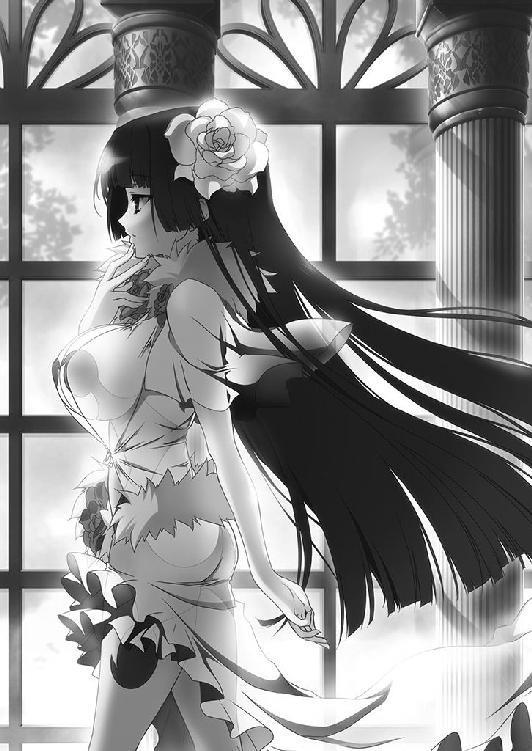
ヴァレンティナの考えは、それほど独創的なものではない。国内に対立をつくり、二派か三派に分裂させて、その中で主導権を握る。そうして権力を掌握し、最終的には玉座につくというものだ。
対立はできた。ひとまずは収まったようだが、ビドゴーシュ公爵にもパルドゥ伯爵にもそれぞれ友人がいて、支持者がいる。本人たちが静穏を望んでも、まわりが勝手に盛りあがって混乱を生じさせた例はいくらでもある。
──それにしてもルスラン王子がいらっしゃったら、こんなことにはならなかったのでしょうね。
ふと、ヴァレンティナは過去に想いをはせる。
ヴィクトール王には、ルスランという息子がいた。政事にも軍事にも明るく、重臣たちの信頼も厚い聡明な王子だったという。ヴィクトール王も、この王子を愛していた。
しかし数年前、王子は突如として心を病んだ。王宮のはずれにある離宮に、火を放ったのだ。その数日後、ルスランは病の療養という名目で、とある神殿に幽閉された。
ヴァレンティナは戦姫になったあと、一度だけルスランの姿を見たことがある。王子が幽閉されている神殿の近くを通りかかったときのことだった。
年齢は三十半ば。薄い金色の髪は伸び放題で、顔の下半分も無精髭に覆われていた。
上等な絹服をだらしなく着崩し、右足には革靴を履いているのに、左足は裸足だった。よく見れば整った顔立ちだが、目の焦点が合っておらず、調子外れの歌声を垂れ流している口は半開きで、よだれが顎をつたっていた。
そんな姿で、神殿のまわりを歩いていたのだ。酔っぱらったような足取りで。
ヴァレンティナは一度気になって、王子がなぜ心を病んだのか調べたことがある。もしも陰謀によるものならば、それを企んだ者は自分の敵になると考えたからだ。
だが、一年近くかけて調べても、謀略の類はまったく見つからなかった。結局、病だという結論を出してヴァレンティナは調査を打ち切ったのだった。
黒髪の戦姫は過去の記憶を振り払い、再び現状について考える。
──この国が割れるとして、問題となるのは私以外の戦姫ですが......。
このジスタートには、生じた混乱を収めるだけの力を持つ者たちがいる。貴族をしのぐ権威と、強大な武力を有する者たちが。
──アレクサンドラが亡くなって、私以外の戦姫はいまは五人。全員とはいわずとも、せめて半分は動けない状況を作りださなければ。
その中で動きを封じやすいのは、ライトメリッツを治めるエレンと、オルミュッツを治めるミラ、そしてポリーシャを治めるソフィーだろう。その三人の治める公国は、他国との国境に接している。
──ブリューヌで混乱が起きれば、エレオノーラはそちらを警戒せざるを得ない。またムオジネルが不穏な動きをしているいま、リュドミラとソフィーヤも自領を空にするような真似はできないはず。
エリザヴェータは、ひとまず放っておく。イルダーとユージェンが対立した場合、彼女はイルダーに味方するだろう。それがわかっていれば、充分だ。
オルガは未知数すぎて、まだ判断を下せない。彼女については、二年近く放浪生活を送っていたことしかわかっていないからだ。
この王都で情報を集めたかぎりでは、ティグルヴルムド＝ヴォルンに協力してアスヴァールの内乱に参加したそうだが、詳細はつかめていなかった。もっと情報が必要だ。
そして、アレクサンドラの次に煌炎バルグレンに選ばれた戦姫はまだ姿を見せない。もしかしたら、バルグレンがまだ選んでいないのかもしれない。
戦姫を失った竜具は、すぐに次の戦姫を選びだすわけではない。ジスタート王国約三百年の歴史の中で、戦姫不在の期間が生じることは珍しくなかった。
戦姫の半数が動けなくなったときが、自分の動きだすときだ。
──どこかで区切りをつけて、オステローデに戻らないといけませんね。
花にそっと触れながら、ヴァレンティナは自領たるオステローデのことを想った。
オステローデは、ジスタートの北東にある。
彼女が戦姫となったのは五年前。十七歳のときだった。
そのころのオステローデは、戦姫の治める七つの公国の中でもっとも弱い国として知られていた。
北には流氷の浮かぶ極寒の海、東には天を突かんばかりにそびえる険しい山々と、針葉樹の大森林。開かれた土地とはとうてい言い難い。
交易のできるような隣国は近くになく、肥沃な大地を有しているわけでもない。港も、レグニーツァやルヴーシュにくらべて使える期間が短い。それもあって、ヤーファをはじめ遠い東の国も、こちらの海から来ることはほとんどない。
加えて、先代の戦姫はオステローデを省みない人間だった。
「オステローデは私のものではなく、戦姫のものだ。私が戦姫でなくなれば、オステローデは私のものではなくなる」
そう言って、政事にほとんど関心を示さなかったらしい。ひとたび戦となれば、鬼神のごとき強さを発揮して武勲をたてたそうだが、積極的にオステローデを豊かにしようとはしなかったという。
そのようなオステローデだが、ヴァレンティナには何物にも代え難い宝物に思えた。
彼女の生まれ育ったエステス家は、家柄の古さぐらいしか取り柄のない小貴族だった。エステスという姓からもわかるように王家の傍系だが、代々の領地などはなく、王都に小さな屋敷がひとつあるだけ。
家族で食うには困らないだけの金は王宮から支給されていたが、そのていどだった。
女性の身で権力を手に入れるには、力のある王侯貴族に気に入られるしかない。エステス家には、力はない。
それでもヴァレンティナは諦めず、教養を高め、武芸の修練にも励んだ。屋敷には書物や巻物が数多くあり、彼女はそれらに触れるのは好きだったが、それらに埋もれて一生を終えるつもりはなかった。
そんなところへ、領地と兵が転がりこんできたのだ。公国中でもっとも弱いといえど。
「──エザンディス」
彼女は自分の前に現れた深紅と漆黒の大鎌を握りしめて、呼びかけた。
「もしも私の願いに力を貸してくれるのならば、そばにいて。私の望みがだいそれたものだというのならば、別のひとを選んで」
虚影は、ヴァレンティナの手から消えなかった。
ヴァレンティナは戦姫となってからの五年間、オステローデを富ませるために力を尽くしてきた。岩塩鉱を発見して開発できたのは幸運だっただろうが、それ以外にも農地を拡大させつつ租税を安くするなど、政事に心を砕いた。
自身を病弱であるということにしたのも、そのひとつだ。
ヴィクトール王は、戦姫にたびたび出征を命じることがある。昨年のディナントの会戦においてはライトメリッツに出陣命令を下し、今度の件でもライトメリッツとルヴーシュに兵を動かすよう要請した。
臣下たる戦姫や貴族の財力と兵力を削ぐのは、王家にとって当然のことだったからだ。
これにヴァレンティナは、地味に抵抗する。
体調を崩したといって出陣を遅らせ、戦場に着いても、怪我をしたといってすぐに後退する。ほんのかすり傷ていどの者でも負傷者扱いにして損害を受けたと言い張った。彼女が迅速で苛烈な対応をするのは、領内にはびこる野盗に対してだけだった。
その甲斐あって、オステローデは五年前とは比較にならないほど豊かになった。他の戦姫たちの公国と比べても、劣ってはいないと思う。
もっとも、喜ぶのはまだ早い。玉座に手を伸ばすどころか、指を引っかけてすらいない自分の現状を、ヴァレンティナはよくわかっている。他人の目からどう見えようとも、自分の望む道を一歩ずつ進んでいくつもりだった。
「──あなただって、はじめからきれいに花を咲かせたわけじゃありませんものね」
微笑を浮かべて、待雪草の白い花弁をヴァレンティナは指先で軽くつつく。垂れ下がるように花を咲かせている待雪草は、ゆらゆらと揺れた。
──あとはブリューヌのあのお客様ですが......。
ヴァレンティナの紫がかった黒い瞳がかすかに曇る。
約半年前から、彼女はブリューヌ王国の貴族をひそかにかくまっていた。
マクシミリアン＝ベンヌッサ＝ガヌロン公爵と、カロン＝アンクティル＝グレアスト侯爵の二人だ。
ガヌロンはブリューヌ王国を代表する貴族のひとりだったが、昨年の内乱においてテナルディエ公爵に敗れ、己の屋敷に火を放った。焼け跡から死体は見つからなかった。敗北の衝撃に狂って自殺を図ったように、彼は見せかけたのだ。
グレアスト侯爵はガヌロンの腹心ともいえる存在だが、彼もテナルディエ公爵に敗れたあとは姿を消しており、戦死したものと思われている。この男も、むろん生きていた。
そうして内乱がレギン王女を擁するティグルヴルムド＝ヴォルンの勝利に終わったころ、二人はヴァレンティナとひそかに会って、オステローデへ逃げたのである。ブリューヌのレギン王女も、ヴィクトール王もこのことは知らないはずだ。
そして数日前、二人はオステローデを離れてブリューヌへ向かった。
ブリューヌに新たな混乱を起こすために。
あるいは、今度こそ彼らはブリューヌにおいて覇権を握るつもりなのかもしれないが、ヴァレンティナにはどうでもよかった。ブリューヌが混乱してくれればよいのだ。その混乱は、ジスタートの北東にあるオステローデにまでは届かない。
彼らは己の野心のために奮戦するだろう。それは、ヴァレンティナの勝利につながるはずだった。
◎
イルダーとの戦いから七日後の昼過ぎ、エレンは三十の騎兵とともに公宮に帰還した。
今度の戦に参加した兵たちを中庭に集めてエレンを出迎えたのは、彼女の副官であるリムアリーシャだ。
現在二十歳。エレンをはじめ親しい者からはリムという愛称で呼ばれている。艶のない金色の髪を頭の左側で結んだ長身の美女で、その顔には愛想のかけらもない。
しかし、彼女は決して感情に乏しいわけではない。主であり親友でもあるエレンのために、常に冷静であろうと努め、このような表情をしているのだった。
その日も彼女は、愛想のない顔でエレンに一礼した。
「勝利の報告はルーリックより聞きました。おめでとうございます、エレオノーラ様。お怪我などございませんでしたか」
「この通りだ、リム。それにユージェン殿も無事だ」
エレンの言葉を聞いて、リムの碧い瞳に安堵の色が浮かぶ。灰色の長い髭が印象的な伯爵は、リムの師でもあった。
エレンは中庭に向かうと、集まっている兵たちにねぎらいの言葉をかけた。
「よくやってくれた、おまえたち。犠牲は出たものの、ビドゴーシュ公爵を捕らえることには成功し、ライトメリッツの友たるパルドゥ伯爵を守ることもできた。勝利したこと、友を守ったことを誇りに思ってほしい」
それから賞与を約束して、エレンは兵たちを解散させる。今度の戦は王宮が要請してきたものだったのだから、王宮から褒賞金が出る。ルヴーシュ軍の手柄とはいえ、イルダーを生かして捕らえることもできたのだし、おおいに請求するつもりだった。
白銀の髪の戦姫は、そのときまで余裕のある態度を微塵も崩さず、兵たちに対しても明るい笑顔を向けていた。
だが、兵たちとわかれてリムと二人だけになると、笑みを消して真剣な表情になった。足早に執務室へと向かう主の姿に、リムは訝しげに目を細める。
「エレオノーラ様、何かあったのですか？」
「あった。とても大事なことだ」
急ぎ足で追ってくるリムに、エレンは即答した。廊下などでは話せないことだとすぐに悟り、リムは戦姫につき従って執務室に足を踏み入れる。執務用の椅子に乱暴に腰を下ろしたエレンは、ため息を吐き出してから親友でもある副官を見上げた。
「できれば着替えと湯浴みをすませて、葡萄酒で乾杯でもしながら話したいところだが、それまで私の心がもちそうにない。いいか？ ──ティグルが生きていた」
エレンの言葉を聞いたリムは、呆然としてその場に立ち尽くす。数秒の時間を置いて我に返ると、いつになく不機嫌な表情をつくって苦情を申し立てた。
「エレオノーラ様。またそうやって私を驚かすつもりなのでしょうが、冗談でも言ってよいことと悪いことが──」
「冗談ではない」
椅子から立ち上がり、執務机に身を乗りだしてエレンは答える。その勢いにリムはおもわず言葉を呑みこんで口をつぐみ、自分より三つ年下の主をまじまじと見つめた。
「どういうことですか......？」
問い質すリムの声はかすかに震えている。
ティグルヴルムド＝ヴォルンは、彼女にとっても大切な存在だった。だが、そのティグルは死んだ。彼女はそう思っていた。師であるユージェンの前で泣き崩れてしまったのは記憶に新しい。誰よりも信頼しているエレンの言葉とはいえ、にわかに信じられないのも無理はなかった。
エリザヴェータ＝フォミナのそばに控えていたウルスという若者のことを、エレンは詳しく説明した。彼が夜の闇の中で矢を放ち、イルダーの馬を見事に射倒したこともつけ加える。
「ルーリックも驚いていたが、本当にそっくりなんだ。声もティグルのものだった。それに、ウルスという名前も気になる」
「......ティグルヴルムド卿の、亡くなられたお父上の名前ですね」
考え深げに目を細めるリムに、エレンは強くうなずく。しかし、リムはすぐに難しい顔をつくって首をかしげた。
「ですが、ティグルヴルムド卿が海に落ちて、ルヴーシュのどこかの海岸に流れ着いたと考えるのは、さすがに無理がないでしょうか」
ティグルが海に落ちたところからは、もっとも近くの海岸でも船で二、三日はかかる。潮流にうまく運ばれたとしても、海岸に漂着する前に凍死か溺死を選ばされるだろう。
「ふつうに考えれば、その通りだ。だが、何かが起こったのかもしれん」
拳を握りしめて、エレンは懸命にリムに訴える。
「そもそも、あいつが海に落ちたときの状況が特殊すぎる。海竜に乗った魔物が襲ってきて船を破壊した、だぞ。ソフィーが言ったのでなければ、くだらん与太話として相手をぶん殴っているところだ」
それはやりすぎなのではと思ったが、自分も同じことをしてしまう気がしたので、リムは無言を貫いた。
「それに、ティグルにはあの不思議な黒い弓がある」
ティグルの生まれ育ったヴォルン伯爵家には、家宝の弓があった。何の変哲もない漆黒の弓にしか見えないが、竜具に反応するなど得体の知れないところがある。昨年のブリューヌの内乱では、その力に何度も助けられたものだった。
「そのウルスという方は、黒い弓を持っていらしたのですか？」
「いや。ぱっと見たかぎりでは、ごくありふれた弓だった」
エレンは首を横に振る。しかし、紅の瞳を彩る不屈の輝きはまったく色褪せなかった。
「だが、私にはあいつがどうしても別人とは思えない。その可能性を捨てることはできないが......」
別人の可能性。ルーリックにも話したそのことが、エレンの感情の動きにかろうじてふたをしていた。それがなければ、白銀の髪の戦姫は何のためらいもなく喜びを爆発させ、涙をあふれさせていただろう。
「それでは、どうなさるのですか」
ウルスの仕えている相手が、エリザヴェータというのが厄介だった。エレンが話を持ちかけても、理由をつけて断ってくるだろう。
エレンはためらう様子を見せたが、迷いを断ち切るように首を左右に振ると、真摯な表情で年上の部下を見上げる。
「ルヴーシュに行って、見てきてくれないか？」
リムは目を瞠り、息を呑んでエレンを見つめた。頭の左側で結んでいる金色の髪が、驚きのあまり小さく揺れる。
「私が......ですか？」
「ティグルかどうかの見分けがつくほどに親しい者となると、この公宮ではさすがにかぎられる。ルーリックは顔を見せてしまっているので、行かせられないしな」
あれだけ熱弁をふるった男のことを、ウルスやエリザヴェータがすぐに忘れてしまうとは思えない。また、あのときの様子を思いだしてみると、ルーリックは感情的になって判断を誤る可能性があった。
「しかし、私ひとりでは......」
「そうは言っても他にあてがあるか？ 私やおまえよりティグルのことをわかっている者となると、ティッタぐらいしか──」
そこまで言ったとき、執務室の扉が外から叩かれる。侍女の声が聞こえた。
「ブリューヌ王国のマスハス＝ローダント様がいらっしゃいました。戦姫さまにお目通りを願うと......」
エレンとリムは顔を見合わせる。どちらの表情も深刻な陰りを帯びた。エレンは一度深呼吸をして声を落ち着かせると、扉の外へ呼びかける。
「暖炉に火を入れてある応接室へお通ししてくれ。私もすぐに向かう」
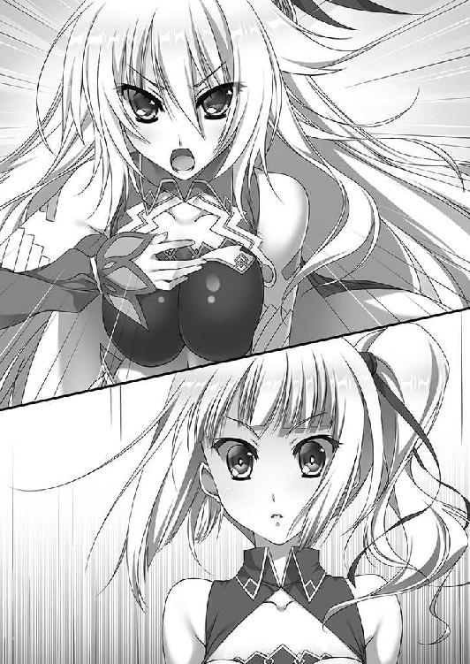
マスハス＝ローダントは今年で五十六歳。小柄でずんぐりとした体躯を黒の毛織りの服に包み、羽根飾りのついた帽子を小脇に抱えていた。灰色の髭は丁寧に整えられ、エレンやリムと相対しても、礼節を守って会釈する。
応接室に通され、彼とエレン、リムの三人だけになってもその態度は変わらなかった。
「戦姫殿におかれましては、ご壮健のようで何よりです。リムアリーシャ殿も」
「あなたも変わりないようだ。この季節に、ブリューヌからここまで足を運ばせてしまったこと、申し訳ない」
エレンは深く頭を下げる。それから、マスハスに椅子を勧めた。
天井には青銅製のシャンデリアが吊り下げられており、何十本もの蝋燭が並べられて室内を明るく照らしている。壁にはレンガ造りの暖炉が設えられ、赤々と火が燃えて室内を暖めていた。
部屋の中央には小さなテーブルが置かれ、それを三つの肘掛け椅子が囲んでいる。マスハスが座るのを待って、エレンとリムも腰を下ろした。
「いろいろと事情があるのでしょうが、話していただけますかな。ティグル......失礼、ヴォルン伯爵のことを」
帽子を抱えるように持って、マスハスは単刀直入に尋ねた。その表情は穏やかに見えるが、両眼に底知れない怒りがにじんでいるのをエレンもリムも見逃さない。
マスハスにとってティグルは親友の息子であり、その親友が亡くなってからは実の息子も同然に面倒を見てきたのである。ティグルもまたマスハスを慕っていた。このような事態になって、黙っていられるはずがない。
「わしだけではない。レギン王女殿下をはじめ、彼のことを気にかけている者はブリューヌに数多くおります。彼らのためにも、詳しくお話を聞かせていただかねばなりません」
エレンは小さくうなずき、アスヴァールへ行ってほしいという国王の要請があったことから話をはじめる。話を聞いていく内にマスハスは渋面を作り、ため息をついた。
「戦姫殿に言うのは筋違いでしょうが、いつからヴォルン伯爵はジスタート王国の臣下になったのですかな」
「彼は、我が国の客将だ。その立場はいまでも変わっていない。だから、国王陛下も要請なさったのだ」
エレンの内心はともかく、ジスタートの戦姫としては、まず建前を述べなければならなかった。相手が親しいマスハスといえど、だ。
「ヴォルン伯爵は現在も捜索中だが、このまま見つからなければ死亡と判断し、賠償金を支払うことになるだろう」
そう言ってから、エレンはもう一度深く頭を下げる。リムも主に倣った。
「申し訳ない。私が、国王陛下の要請を断っていれば......」
「顔を上げてください。戦姫殿。リムアリーシャ殿」
穏やかな声音を変えず、マスハスは静かに呼びかける。ただし、彼の手の中にある羽根飾りのついた帽子は、抑えきれない怒りによって歪んでいた。
「わしは、ジスタート国王陛下に会わなければならんようですな。王都までの案内と、陛下へのお取り次ぎを頼めますか」
「それはもちろん手配させていただくが」
エレンはそこで一旦言葉を切って、真剣な表情でマスハスを見つめた。彼の来訪を聞いたときに浮かんだ考えを、はたして話すべきかどうか迷った。
「──マスハス卿。図々しいのを承知で、お願いしたいことがあるのだが」
マスハスの目が動いて、エレンを見据える。帽子から離した手を口元に持っていき、灰色の髭を撫でた。
「うかがいましょう」
内心で安堵の息をついたエレンは、まずウルスという若者について説明する。
「私には、あの男がティグルとしか思えなかった」
ヴォルン伯爵ではなく『ティグル』と愛称でエレンは言ったが、訂正はしなかった。マスハスは盛大なため息をつくと、伸びをして背もたれに寄りかかる。
「戦姫殿は、そのような嘘をおっしゃる方ではないでしょうが」
その顔は半信半疑というところだった。
まったく関係のない名前であれば、いかに似ているとエレンが熱心に説明しても、マスハスは一笑に付しただろう。だが、ウルスという名はマスハスにとっても特別な意味を持っている。彼の親友であり、ティグルの父だった男の名だからだ。
誠実な態度を崩さず、エレンは続ける。その横顔が暖炉の炎に照らされて朱色に染まっていた。
「私はリムに行ってもらうつもりだった。この公宮でティグルをよく知る者というと、私の他にはリムとルーリックぐらいしかいないからだ。だが、あなたも同行してくださるのならば、これほど心強いこともないと思う」
マスハスはすぐには答えず、小さく唸った。エレンから顔を背けて暖炉を見つめる。何かを考えていたようだが、まとまったらしく白銀の髪の戦姫に視線を戻した。
「ティッタも連れていきたいのだが、よろしいかな」
この言葉はエレンと、そしてリムの意表を突いた。二人は戸惑いを隠せない顔でマスハスを見る。
「理由があれば、教えてもらえないか......？」
「その若者がティグルかそうでないか。わしなどよりもティッタの方が、よほど正確に見極められるでしょう」
ごく当たり前のことについて語るような口調で、マスハスは答えた。エレン同様にティグルと言って。
エレンはリムと顔を見合わせる。
ティッタはティグルの侍女だ。今年で十六になる。小さなころからティグルのそばにいた彼女は、十一歳のとき、正式に侍女となった。昨年のブリューヌにおける内乱にも最後までついてきた。若者が客将としてジスタートに来ることになったときも。
ティグルが海に落ちて行方不明だと聞いたときのティッタの落ち込みようは、見ていて辛いものだった。侍女としての仕事をおろそかにしたことはなかったが、元気だった笑顔はどこか虚ろになり、明るさや積極性が失われた。
彼女はライトメリッツに来てからも、公宮の外にある神殿に毎日通っている。ただ、神殿にいる巫女の話によれば、ここ二ヶ月ほどは祈りの最中に涙を流すことが多いとのことだった。彼女が誰のことを想い、祈っているかは明白だった。
まだ幼さの残る可愛らしい顔立ちながら、芯の強さも持っている。しかし、ティッタはやはり年齢相応の少女なのだ。
エレンがウルスのことをリムにだけ話してティッタを呼ばなかったのも、ぬか喜びをさせてしまうかもしれないという恐れからだった。
すぐには答えられずにいると、マスハスが言った。
「ティッタに事情を説明して、決めさせてもらえませんかな。あの子が行かないならわしも行かない、などとは申しません。ただ、万全を期すならばあの子は必要です」
エレンはためらいつつも、リムにうなずいてみせる。リムはマスハスに一礼して応接室を辞した。老伯爵は灰色の髭を撫でながら静かな口調で言った。
「その若者がティグルでなかった場合は、わしはそのまま王都シレジアに向かわせてもらいましょう。問題は、その若者がティグルだった場合ですな。そのときはどうなさるのです？」
「力ずくでも、と言いたいところだが、そうすればルヴーシュと戦だ。面倒だが、国王陛下を通してエリザヴェータに働きかけるしかない」
ふむとマスハスはうなずいた。そのウルスという若者が、ティグルであろうとなかろうと自分はジスタート王国の王都へ行くことは変わらないようだ。
それからほどなく、リムに連れられてティッタが現れた。栗色の髪はツインテールにして、黒い長袖の服と足首まで届くスカート、その上に白いエプロンという格好だ。
彼女はマスハスの姿を見ると、ぱっと顔を輝かせた。エレンもリムもひさしく見たことのなかった、無理につくったものではない純粋な笑顔だ。
「マスハス様、おひさしぶりです！」
「うむ。ティッタも元気そうで何よりじゃ」
マスハスの顔は自然とほころび、満面の笑みを浮かべる。彼にとってティグルが息子のようなものならば、ティッタは娘のようなものだった。
リムは自分が立って、ティッタに椅子を勧める。栗色の髪の侍女は、顔をきょとんとさせながらもリムに礼を言って椅子に腰を下ろした。
エレンは真剣な眼差しを彼女に向ける。
「ティッタ。これから話すことは、でたらめなどではない。私が見て聞いたことだ」
そう前置きをして、白銀の髪の戦姫はウルスのことを話す。ティッタのはしばみ色の瞳に、驚きの色が広がった。身を乗り出して、彼女は息せき切って尋ねる。
「ほ、本当ですか!? 本当にティグル様が......」
「皆が皆、おまえのように純真であってくれると私も楽なのだがな」
素直なティッタの態度にエレンは苦笑を浮かべ、彼女の頭を撫でた。手を離すと、エレンは笑みを消し、厳しい表情で言葉を続ける。
「よく聞いてくれ。絶対だとは言えん。私の勘違いだという可能性もある。だが、私はあの男がティグルだと思う。動けない私の代わりに確かめてほしい。決して楽な旅ではないだろうが、行ってくれるか」
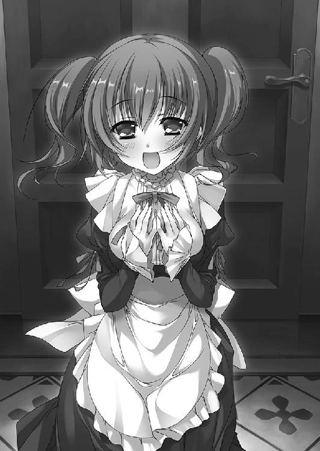
「行きます！ 行かせてください！」
小さな手をぎゅっと握りしめ、椅子から立ち上がってティッタは叫んだ。迷う素振りさえも、彼女は見せなかった。ティッタを除く三人は顔を見合わせてうなずきあう。
エレンはあらためて、ティッタとマスハスに頭を下げた。
「よろしく頼む」
◎
その日の夜、ティッタとリムは二人で旅の準備を整えた。ティッタにとって長旅は昨年の内乱以来であり、リムが彼女のために防寒具をそろえてあげたのだ。
ジスタートの冬は、ブリューヌの冬よりも厳しい。陽射しは弱く、風は冷たい。防寒着を着込まずに外に出れば、少し歩いただけで寒さに身体を震わせることになる。
「それでも、このライトメリッツなどの、ジスタートの南にある地域はまだ暖かいといえるでしょう」
リムはティッタにそう説明した。王都シレジアの北にあるヴァルタ大河を越えて、さらに北へ行くと寒さは一気に厳しくなる。
そこの子供たちは「なるべく汗をかかないように」と親から躾けられる。汗が冷えて体温を奪うためだ。場合によっては死に至る。
ルヴーシュはヴァルタ大河よりも北にある。西の海から吹きこんでくる風のために、北部でもまだましな方らしいが、油断はできない。
そのような環境へ向かうのだから、リムは妥協しなかった。
帽子は頭部だけでなく、耳から頬のあたりまでを覆ってくれるものを用意する。外套は毛皮を裏打ちしたもので、裾が膝の下まであり、襟や袖口にも毛皮をあしらったものを選んだ。手袋や長靴は穴が開いていないか、擦り切れていないかを丹念に調べる。
ちなみに旅の準備はリムの部屋ではなく、ティッタの部屋で行った。
これは、リムが自分の部屋を見られるのを避けるためだった。他人には秘密にしているのだが、彼女の部屋には熊のぬいぐるみがいくつもある。もっとも、エレンをはじめこの秘密を知っている者は何人かいるのだが。
ティッタの部屋はそれほど広くないが、掃除が行き届き、よく片付けられている。椅子の背もたれのカバーや、ベッドに置かれた枕などは彼女の手製らしく、あたたかみのある刺繍がほどこされていた。
ほとんどは公宮にあるものでそろえたのだが、手袋だけは、ティッタが持っていた。兎の毛皮を使ったもので、手袋の内側にも毛皮はしっかり張られている。何ヶ所か繕った跡があったが、リムが調べても問題はなさそうだった。
「これは、ティグル様がくださったものなんです」
白い、というにはやや薄汚れた手袋を抱きしめて、ティッタは微笑を浮かべる。汚れているのは、それだけ彼女がこの手袋を使ってきた証だ。汚れないように丁寧に使うよりも、汚れてもかまわないから遠慮なく使えというのがティグルの考えだった。
「ティグル様は毎年、兎の毛皮であたしに手袋を作ってくれて」
「毎年ですか」
少しうらやましいとリムは思ってしまった。
「毎年なのは、あたしが大きくなって手袋が窮屈になっちゃうのと、だいたい一年で穴が目立ってきたりするからなんです。リムアリーシャさんも、ティグル様にお願いすればきっと作ってもらえますよ」
笑顔で言うティッタに、リムはそうですねとうなずき返した。
気が重い。この栗色の髪の少女は、ティグルが生きていると信じている。リムは彼女ほどには、エレンの話を信じることができずにいた。
やがて、着替えを終えたティッタは鏡の前に立つ。帽子をかぶり、首には襟巻きをし、外套を着て、ズボンをはき、足には厚手の布を巻いた上で長靴を履く。手には手袋。だいたいは褐色なのだが、手袋だけが白い。
「ちょっと暑いですね」
「部屋の中では暑いぐらいがちょうどいいですよ」
自身も着替えながらリムは答えた。彼女の服は熊の毛皮を使ったもので、黒っぽい色をしたものが多い。自分の服の具合を確かめたあと、リムはティッタを見た。愛想のない顔はいつものままだが、靑い瞳には気遣う色が浮かんでいる。
「ティッタ。本当に来るのですか？」
リムは長旅に慣れている。マスハスも。だが、この健気な侍女はそうではない。
エレンがあのように言っていたとはいえ、ウルスとやらが本当にティグルかどうかはわからない。寒さに震えながら街道を歩き続け、たどり着いた末に別人だったという結果が待っているかもしれない。
ティッタは一瞬きょとんとした顔でリムを見上げ、すぐに穏やかな笑顔で頭を下げた。
「ありがとうございます。リムアリーシャさん」
顔を上げたティッタは、首を横に振る。
「だいじょうぶです。あたしひとりなら怖いですけど、マスハス様も、リムアリーシャさんもいるんですから」
はしばみ色の瞳には、依存ではなく信頼の光があった。リムも口元にそっと微笑をにじませる。考え方を変えることにした。
「わかりました。マスハス卿とあなたのために微力を尽くしましょう」
翌日の朝は、目を瞠るほどの快晴だった。
風は冷たいが、空は吸いこまれそうなほどに青く、太陽は弱々しいながらも白く輝いて地上に光を投げかけている。
「出発にはいい日だの」
公宮の裏門のそばで馬の調子を確認しながら、マスハスは機嫌よさそうに言った。この裏門から出発するのだ。
馬は三頭いるが、一頭は替え馬を兼ねた荷物持ちである。ティッタは馬に乗るのがあまり得意ではないので、リムの馬とマスハスの馬に交互に乗ることになっていた。
そのティッタは、着こんだ防寒具について最後の点検をリムにしてもらっている。
「ここから、すべて着ていくんですか？」
「ええ。いまの内から慣れておいてください。脱ぐことなどできなくなりますから」
点検を終えたリムは、あらためてマスハスと予定を確認する。
「私たちは旅芸人としてルヴーシュまで行く。マスハス卿が父親、私が長女、ティッタが次女。母親はジスタート人ですでに死亡。よろしいですね」
それならばマスハスとティッタがブリューヌ人で、リムがジスタート人であることにも一応の説明がつく。ちなみに旅芸人にしたのは、簡単な手品や占いでよければマスハスができるからだ。だが、ブリューヌ人の老伯爵はそこには言及しなかった。
「死んだ妻はずいぶん別嬪だったんじゃろうなとだけ思っておこう。それで、死んだ妻の遺族に会うべくルヴーシュに向かう、というわけじゃな」
「はい。念のために、ライトメリッツが正式に発行した通行手形も用意しておきます」
ライトメリッツの主であるエレンが作ったものだ。偽物ではない。
「ライトメリッツを出たらまっすぐ北上して、まずレグニーツァへ。現在レグニーツァの戦姫は不在ですが、彼らはエレオノーラ様に協力してくれると言っています。過剰な信頼を寄せるつもりはありませんが、少なくとも、道中の無事ぐらいは保証してくれるかと」
かつてレグニーツァの戦姫だったサーシャが亡くなったとき、エレンはリプナの港町でその最期を看取った。エレンは軽々しく動いていい立場ではなく、本人もわかってはいたが、サーシャのために必死で馬を走らせたのだ。
後に、レグニーツァからエレンのもとに手紙が届いた。そこには、サーシャの最期に立ち会ってくれたことへの感謝が長々と綴られていた。そして、何かあったときは必ず力になるという一文も添えられていた。
非公式の手紙である。それに貴族同士、戦姫同士での『力になる』ほど信用できないものはない。それでも、エレンもリムもその手紙をありがたいものだと思った。彼らの手紙にこめた想いを信じることにした。
感情で動くことを戒める警句は古来より多い。だが、それは人間が感情の生き物であることの裏返しなのだ。
「では、レグニーツァまでは無事に通過できるとしよう。そのあとは？」
「ルヴーシュに入ります。公宮の城下にある町で、しばらく様子を見ます。エレオノーラ様の話によれば、ティグルヴルムド卿はエリザヴェータ様の従者を務めているとか。会う機会をつくれるのかどうか、詳しい立場を調べます」
「ティグルとはかぎらんのだぞ」
マスハスに指摘されて、リムはおもわず赤面した。その反応にひとの悪い笑みを浮かべながらマスハスは灰色の髭を揺らす。
「しかし、ティグルに会えなかったらどうする？」
「ティグルヴルムド卿とはかぎらないと、マスハス卿がおっしゃったばかりでは」
リムが言うと、老伯爵は小さく唸ってずんぐりとした身体を揺すった。リムは愛想のない表情をわずかに緩めたが、すぐに真剣な表情になる。
「会えない場合は......いまはまだ思いつきません。城下の町に着くまでに何か考えます」
「ふむ。いざとなったら、わしが何とかしてみせようか」
「何かお考えがあるのですか？」
リムが目を見開いてマスハスを見る。こともなげにマスハスは答えた。
「遊歴の騎士マスハスが戦姫さまに拝謁したいと言えばよいかと思ってな」
「......遊歴の騎士、ですか」
リムはなんとも言い難い顔になる。遊歴の騎士とは、基本的には、主君の許可を得て各地を旅しながら修練を積む騎士のことだ。だが、主君を持たず、あるいは主君を持てずに放浪する騎士のことも含む。
騎士という称号を持った食い詰め傭兵だろうというのがよくある見方で、よほど高名な者でもないかぎり人々の印象は悪い。
しかし、不安を隠せないリムの反応など意に介さず、マスハスは楽しそうに笑った。
「そのウルスがティグル本人であれ、あるいは別人であれ、彼らはブリューヌの情報を求めているはずじゃ。そこへ、わしのような見るからに経験豊富なブリューヌ貴族が現れれば、ぜひとも話を聞きたいと言ってくるのではないかと思うのだが」
リムはすぐには言葉を返せず、生真面目な表情で唸った。一理あるようにも思えるし、馬鹿馬鹿しい思いつきともとれる。
「現地に着いたら、あらためて考えましょう」
結局、保留にした。
三人は裏門を出る。まわりには見張りの兵士すらいない。この時間だけ、エレンが人払いを命じたのだ。もちろん他のところを厳重に警戒させてのことだが。
リムたちを見送りに来たのはエレンとルーリック、それからもう一頭だった。
「ルーニエ！」
ティッタが笑顔になって嬉しそうな声をあげる。ぱたぱたと小さな翼を羽ばたかせて彼女に飛びついてきたのは、太った猫ぐらいの大きさの竜だった。幼竜である。
トカゲに似た体格をしており、背中には蝙蝠のそれに酷似した一対の翼がある。小さな体躯を覆っている鱗の色は、銅のような緑青。幼竜とはいえ頭部には角を生やしており、口の中の牙は太く鋭い。目つきも険しい。
しかし、ティッタは恐れる様子もなくルーニエと呼んだ幼竜に手を伸ばした。幼竜もまた、別れを惜しむかのようにティッタの腕の中へと飛びこむ。飼い主であるエレンにすらこのような態度をとることはないのだが、ティッタにはよく懐いていた。
「ソフィーが見たらうらやましがるだろうな」
少女と幼竜との微笑ましい光景を見て、エレンが苦笑を漏らした。ソフィーは竜が好きで、ライトメリッツに来たときはほとんど必ずといっていいほどルーニエにちょっかいを出す。ルーニエはそんなソフィーを避けるのだった。
エレンは笑みを消して真剣な表情になると、リムに視線を向ける。頼むという意思をこめて小さくうなずいた。リムもまたうなずき返す。この二人のやりとりは、これだけで充分だった。
ルーリックは悲壮感の漂う顔でマスハスに頭を下げる。
「どうか、どうかお願いします。ティグルヴルムド卿を連れ戻してくださいますよう」
「わかった。わかったから、いい年をした男がそう頭を下げるものではない」
マスハスはルーリックの肩を叩いて慰めた。顔を上げた禿頭の騎士に笑いかけながら、老伯爵は内心で暗澹たる気分になる。
そのウルスなる若者がティグルだったとしよう。
そして、彼を無事に連れ戻せたとしよう。
はたしてそれで、めでたしめでたしとなるだろうか。
──現実はおとぎ話ではないからのう......。
ブリューヌの王宮にいるレギン王女は、間違いなく即日返還を求めるだろう。ジスタートも、今回のような不手際をやらかしたあとでは、嫌だとも言いきれまい。そのとき、ここにいるエレンやリム、そしてルーリックはどのような反応を見せるだろうか。
その場合の交渉の席に、マスハスが立たされるのは間違いない。
──ジェラールを連れてくるべきだったか。
友人であるオージェ子爵の息子ジェラールは、ブリューヌ王国の書記官である。
数ヶ月前までのジェラールの仕事は、ライトメリッツの公宮とブリューヌの王都ニースを往復することだった。
ライトメリッツを訪れては、ヴォージュ山脈の工事の進捗状況をエレンに報告し、彼女やティグルからジスタート内のさまざまな話を聞く。
それをすませたらブリューヌに帰還し、王都ニースへ向かって、王宮にいるレギン王女に謁見し、ジスタートで得たさまざまな情報やティグルの現状について話す。そうして新たな指示をもらい、またジスタートへ行く準備をはじめるのだ。
今回の件で、ジェラールではなくマスハスにジスタートへ行くよう命令が下ったのは、経験と実績の差によるものだった。ジェラールは有能だが、書記官になってまだ一年たつかどうかだ。交渉ごとの実績もはるかに足りない。
そこで年齢相応に経験を積み、ティグルとも親しいマスハスが任命されたのだった。現在ジェラールは、別の仕事を任されてブリューヌ南部にいるはずである。
──そうだな。もしもティグルが無事で、そうとわかったときにジェラールの仕事が一段落ついていたら、手伝わせるとしよう。いい経験になるじゃろうて。
勝手にジェラールの運命を決めると、マスハスはいくらか気分が楽になった。
「それではエレオノーラ様。行ってまいります」
馬に跨って、リムが敬礼をする。ティッタを乗せてから馬上のひととなったマスハスも黙礼し、ティッタも落ちないように気をつけながらぺこりと頭を下げた。
エレンとルーリックは無言でうなずき返す。ルーニエは、激励するかのように一度だけ翼を羽ばたかせた。
リムとマスハスが馬を走らせる。ティッタは馬の背にしがみつく。
三人の背中を、一陣の風が吹きぬけた。
それに気づいたのはエレンと、そしてルーニエだった。ルーニエは関心がなさそうにどこかへ飛び立ち、エレンは腰に帯びていた銀閃に視線を向ける。翼を模した鍔を、そっと撫でた。
「おまえも、リムたちを応援してくれるのか。アリファール」
三人の旅は、きっと上手くいくだろうとエレンは思った。
◎
ブリューヌ王国の南に、プラージュという港町がある。ザクスタンやムオジネル、さらには遠いアスヴァールや南の諸王国の交易船までが出入りするにぎやかな町だ。
船着き場には、船腹に黒いたてがみを持つ紅馬を描いたブリューヌ船、重厚な造りのザクスタン船や細身のムオジネル船、舳先が異様に高い南の国の船や、半球型と呼ぶのが的確な平たい船までが並んでいる。
町の通りを歩く人々もさまざまだ。真っ赤に日焼けしたブリューヌ人の商人もいれば、険しい目つきで歩いているザクスタン人の傭兵もいる。
褐色の肌が特徴的なムオジネル人の踊り子が激しい踊りで男たちを魅了すれば、アスヴァール人の吟遊詩人が竪琴の響きと甘い歌声で若い女性たちを虜にしていた。
露店では遠い南の国でしか採れないという果物が並べられ、その隣では派手な色彩を持つ大きな鳥が縄につながれている。見たこともない料理が人々の注目を集め、日が出ている間はどの通りを歩いても喧噪が絶えることはない。
その町の一画に、豪奢な酒場があった。誰でも気軽に入れる類の店ではなく、入店の段階から客を選別する店だ。それだけに内装も整っており、給仕の質も高い。
二階建てで、一階はごく一般的な酒場の風景である。二階には、大小いくつもの部屋があった。石壁は厚く、よほどの大声で話さないかぎり声が外に漏れることはない。
いま、その一室に七人の男が集まっていた。大人数用の部屋なので、七人でもまったく窮屈ではない。
ザクスタンで名の知られた職人が造ったという樫材のテーブルにはさまざまな料理が並べられていたが、ほとんど手をつけられていなかった。葡萄酒を満たした銀杯も人数分置かれているが、やはりそれも減っていない。
「──王都の様子は？」
ひとりが静かな声で尋ねた。
「平穏そのものだ。あの王女、目立った功績はないが過失もない。十六という若さで、政事をはじめて約一年ということを考えれば、うまくやっているといっていい」
他の男が認めざるを得ないといった口調で答え、また別の男がうなずく。
「極悪非道の貴族に殺されかけたところを逃げ延び、侵略してきたムオジネル軍を撃退し、正統の玉座を奪還したということになっているからな。おまけに顔もいい。うけがいいのはわかる」
他の男が否定するように首を振った。
「うけがいいだけでは政事は続かん。あの王女を支えているのはボードワンとローダント伯爵だ。とくに伯爵の存在は盲点だった」
「それほどの人物か？ 亡きテナルディエ公爵は、たいして気にかけておられなかったと思ったが」
「あの老人、存外顔が広い。それだけならどうということもないが、いまは王女と宰相という強力な後ろ盾がある。男爵や子爵といった貴族たちを、ひとりひとり地道に取りこんでいる。テナルディエ公に従っていた者、ガヌロン公に与していた者関係なくだ」
「男爵や子爵ならば、たいしたことなどなかろう。気にしすぎではないか」
ひとりが嘲弄するように言ったが、その隣の男が静かにたしなめる。
「爵位のみで量れるものではない。ローダントも、そしてティグルヴルムド＝ヴォルンも伯爵だ。ローダント伯爵は味方の数をそろえてから、国内の公爵や侯爵へ声をかけようというつもりなのだろうな」
「我々に協力を約束している貴族の中で、ローダントに対抗できる者、対抗しようとしている者はいないのか？」
ひとりが苛立たしげにテーブルを叩き、列席者たちを見回す。
「どちらかだけなら、それなりにいる。だが、その両方を備えている者となるとな......。まだ余力のある者たちは、王女に味方しなかったことをいつ責められるのかと怯え、縮こまっている。威勢のいい者たちは口先ばかりで、まわりを動かす力がない」
ひとりがため息混じりに、皮肉っぽい口調で言う。
「テナルディエ公爵と、それからガヌロン公爵が偉大すぎたということかな」
テナルディエもガヌロンも、圧倒的な威厳や恐怖で多くの貴族を束ね、従えていた。
彼らがいなくなったとき、その代わりとなって貴族たちをまとめられるような者はいなかったのだ。
代わりが務まるだろうと目されていたテナルディエ公の腹心スティードは内乱の中で命を落とし、ガヌロン公の片腕といわれていたグレアスト侯爵も死んだと噂されている。
ブリューヌの貴族や有力者たちでレギンに従う者以外は、よりどころを持たず、右往左往しているといってよかった。
「前向きに考えよう。そうした者たちの方が御しやすいと。ところで、騎士団はどうだ？ 王子と偽っていた王女に、誰もが忠誠を抱いているわけではないと思うが」
「たしかに反発している者もいるが、ナヴァール騎士団が王女に忠誠を尽くすと公言している。あれと正面切って戦おうなどという者はなかなかいない。そのときが来たら我々に協力するという騎士団は、いまのところ二つあるが」
「ナヴァールというと、あの黒騎士ロランの騎士団か。だが、ロランは死んだ」
そう言いながらも、男の声には若干の怯えがある。ロランの名は、彼がこの世を去ってもなお、ある種の人間を怯ませるようだった。
「副団長のオリビエとやらいう男が、現在は団長代理としてナヴァール騎士団をまとめている。この男もなかなかくせものだ。また、他にもペルシュやカルヴァドスといった騎士団が王女側にいる」
「いっそ少数でも行動を起こすべきではないか？ 時間が過ぎるほどに王女の治世は盤石なものとなっていく。ジスタートもいずれ、アニエスに町を造るだろう」
ひとりが椅子から尻を浮かせて力説する。列席している者たちの何人かは、アニエスという単語を聞いて小さく唸った。
いま唸った者たちは、いずれもブリューヌ南部にある港町の有力者だ。ムオジネルやザクスタン、また海を越えて南方にある諸国との交易で財を築いた大商人たちである。
彼らはテナルディエ公爵を支持しており、公爵を討ったレギンを恨んでいた。
テナルディエ公爵が、ことさら彼らに寛容だったというわけではない。ただ、彼は交易のもたらす有形無形の利益を理解しており、ムオジネルやザクスタンの交易船に対して強い態度で臨んでいた。
またテナルディエは、賄賂を受けとることで多少の悪事や不正を見逃してもきた。これについては、商人の弱みを握る目的もあったのだろう。テナルディエ自身は、もし咎められたとしてもそれを打ち破るだけの権力と武力を持っていた。
加えて昨年、ムオジネルは陸と海からそれぞれ侵攻してきたのだが、海から攻めてきたムオジネル軍の船団を撃退したのはテナルディエ公爵だった。
テナルディエは、商人たちにとって恐ろしくも頼もしい庇護者だったのだ。
ひるがえって、現在ブリューヌを統治しているレギン王女はどうだろうか。
王都から派遣されてきた代官はテナルディエ公爵と違い、これまでのようなやり方が通用しない相手だ。しかもテナルディエに協力していたということで、商人たちには厳しい視線が向けられている。
ブリューヌがジスタート王国にアニエスの地を割譲したということも、彼らの怒りに油を注いだ。アニエスにジスタートの港町が造られれば、商売敵が増えることになるではないか。ジスタート相手の商売も、はるかにやり難くなるだろう。
これらのことが、彼らにレギンへの明確な敵意を抱かせた。
その心情の中には、彼女に対する侮りもあった。レギン王女など、王子と偽っていたころでさえ目立った功績はなかったではないか。玉座に返り咲けたのも幸運に助けられたからで実力によるものではない。彼らはそう思っていた。
ゆえに、反乱をたくらんだ。ジスタートに割譲したアニエスを取り戻し、ザクスタンやムオジネルといった隣国を退け、海洋交易における権益を盤石なものとすることが、彼らの目的だった。
「行動を起こすのはよろしいかと思います」
それまで黙って他の者の話を聞いていた男が発言した。
「ただ、できれば段階を踏みたいと思います。いきなり反乱というおおがかりな手を打つのではなく、その前段階となるもの。我々に勝算があると、日和見をしている連中にわからせることができるもの。高く飛翔するための助走となる行動を、まず起こすべきでは」
「なるほど。だが、そのような手があるか？」
懐疑的な視線を向ける男に、その男は涼しげな微笑を浮かべて答える。
「──デュランダル」
その単語は、場に漂う空気を一気に緊迫したものへと変えた。男は列席者たちの反応にかまわず続ける。
「あの宝剣を、秘密裏に手に入れるのです。その後、素知らぬふりをして尋ねればいい。王女殿下、デュランダルをいかがなされたかと」
王国の宝剣を盗まれたことが明るみに出れば、それはレギンの治世に対する最初の亀裂となるだろう。その後、自分たちが宝剣を「見つけだせば」その効果はいっそう大きなものとなる。
「いかがかな？ これならば人手をそれほど必要とはせぬ。それに──」
列席者たちを見回し、その男は同意を求めるような視線と声とで続けた。
「デュランダルのような宝剣は、あの王女のもとにあってよいものではない。そうは思われぬか？ あれは、真に力ある者のそばで光り輝くべきであると」
その台詞は、列席者たちの罪悪感を薄れさせる響きを帯びていた。何人かが顔を見合わせ、自分を納得させるようにうなずく。
彼らは知らない。この男の本当の名前を。
カロン＝アンクティル＝グレアストという彼の名を。
彼らはグレアストの名を知ってはいたが、その顔を見たことのある者はほとんどいなかった。グレアストは、テナルディエ公爵の敵手たるガヌロンの腹心だったからだ。
だが、もし自分の正体が露見したとしても、グレアストは平然として彼らを説得しただろう。そして、当たり前のように主導権を握っただろう。
彼は、列席者たちの底の浅さを見抜いていた。亡きテナルディエ公爵やスティードに匹敵する能力のある者は、ここにはひとりもいなかった。
──一年前はガヌロン公のもとで彼らを攻めたてていた私が、何食わぬ顔をして彼らに味方している。ガヌロン公は、実におもしろい話を教えてくださったものだ。
楽しげな笑みを浮かべて、グレアストは男たちの様子を見守っている。
レギンに対する反乱のたくらみがあることを探りあて、彼らの会議にグレアストが潜りこめるよう手配をしてくれたのは、ガヌロン公爵だった。
ガヌロン自身はここにはいない。彼には他にやるべきことがあり、だからこそグレアストにここを任せたのだ。
──ここまで用意していただいたからには、成功させなければな。
ここにいる者たちの望みではない。ガヌロンと、そして自分の望みをだ。
──まずはデュランダルだ。ここにいる連中では頼りないが、やってみるとしよう。
グレアストの口元に薄い笑みが浮かぶ。ブリューヌという国を舞台にして自分がこれから起こす混乱に、彼は胸躍らせているのだった。
４ ルヴーシュの日々
エリザヴェータ＝フォミナは仏頂面をつくって、執務机を挟んで向かい側に立っている老人を睨みつけている。痩せ気味ながら背筋をまっすぐ伸ばしており、真っ白な髪も丁寧に整えていた。その目には決して譲らぬという強い決意があふれている。
「ラザール。どうしてもいけませんの？」
「何とぞ、思いとどまりください」
ラザールと呼ばれた老文官は、執務机に額がつくかと思うほどに深く頭を下げた。エリザヴェータは口をとがらせる。
彼女が兵たちとともにルヴーシュの公宮に帰還したのは、今朝のことだ。兵たちをねぎらい、賞与を約束して解散させると、エリザヴェータは湯浴みをすませて食事をとった。
それから執務室に幾人かの部下を呼んで、今度の戦における論功行賞について話しあったのだが、ウルスへの恩賞についてラザールと意見が対立したのだ。
「ウルスの功績はたしかに小さからざるもの。ですが、問題点がいくつかございます」
今度の戦において、ウルスがたてた功績は二つ。イルダーがどこを進んでいるかを見抜いたこと。そして、逃げるイルダーを落馬させたことだ。
「どちらか片方だけでも大手柄です」
手放しで賞賛したのはナウムや、各部隊を率いていた隊長たちである。彼らは、敵の位置をつかむことの重要性をよく知っている。とくに今回は、あと一日でも遅れていればパルドゥが襲われていたのだ。
馬丁の仕事から思いついたとはいえ、賞賛されてしかるべきだった。
次にイルダーを落馬させた一件だが、これもウルスがすさまじい弓の技量の持ち主だからこそ為しえたのである。しかも、イルダーを殺さなかった。
「可能なかぎり生かして捕らえよ」というのが王宮の要請である。それに完璧に応えてみせた以上、やはり多大な恩賞で報われるべきだった。
しかし、この老文官は頑として首を縦に振らない。
「ウルスは戦姫さまが特例として従軍させた者であり、出陣する数日前までは馬丁でしかなかったのです。そもそもウルスがこの公宮にやってきてから、まだ二ヶ月も過ぎておりませぬ」
一旦言葉を切って呼吸を整えると、ラザールは拳を握りしめて力説を再開する。
「たしかにウルスのたてた功績は見事なものです。しかし、彼を高く評価すれば、戦姫さまがウルスを贔屓していると見られましょう。戦姫さまにとってもウルスにとってもよいこととは思えませぬ。また、ビドゴーシュ公爵との関係もございます。公爵はこのジスタート北部において、武勇で広く知られた方。それが、馬丁あがりの従者に落馬させられたとあっては、戦士としての名声が地に落ちましょう」
「公爵閣下はウルスの技量を称えておいでだったわ」
エリザヴェータはそう反論したが、ラザールはたじろぐどころか小揺るぎすらしない。吹雪を浴びてもそびえ続ける岸壁のようだった。
「公爵閣下はそうおっしゃるでしょう。ですが、公爵閣下に従う者たちはどう思うか。重要なのはそこでございます。これが、戦姫さまが一騎打ちの末に公爵閣下を落馬させたというのであればともかく、それを成し遂げたのは素性も定かでない男なのです」
イルダーの部下たちはウルスを賞賛せず、自分たちの主に恥をかかせた者として敵視するだろう。ラザールはそう主張した。
「ウルスがビドゴーシュ公爵を落馬させることができたのは、偶然である。そうしておく方がよろしいかと。夜が明けたばかりの戦いということですし、これなら公爵の武威もそれほど傷つかずにすみましょう」
エリザヴェータとイルダーの関係は、悪いものではない。むしろ友好的といえる。だからこそ、イルダーも王都を訪れる前にこの公宮に立ち寄ったのだし、エリザヴェータも歓待したのだ。
ヴィクトール王が、イルダーをどのように処断するのかもまだわからない。ラザールの言葉には、まったく理がないわけでもなかった。
ラザールが言葉を切ると、他の文官たちが賛同するように何度もうなずく。ここには文官だけでなく騎士も何人かいるのだが、彼らも同じ意見らしく黙然としている。
そのとき騎士たちの中から、ひとりが声をあげた。
「ラザール殿のおっしゃることはもっともですが......」
控えめな口調で異議を唱えたのは、ナウムだった。
「ウルスが功績をたてたのは事実。今度の戦に参加した兵たちは、それを理解しております。これで何も報いないというのであれば、それこそ戦姫さまの尊厳が傷つきましょう。あなたならば、そのぐらいのことはおわかりのはず」
「何も報いるなとは言っておらぬ」
「では、どれぐらいが妥当だと？」
「銀貨百枚というところだ」
すでに考えていたのだろう、ラザールは即座に答えてナウムを呆れさせた。
「ラザール殿。数字を間違えておりませんか？ 私としては、銀貨一千枚でも少ないと思っているのですが」
「それでは公宮に勤める多くの者が不満を抱こう。彼らにとってのウルスは、いまだ馬丁あがりの素性も知れない男なのだ。ウルスが長く勤め、素性を気にされないほど多くの者に認められたときに、あらためて報いてやればいい」
「素性の知れぬとおっしゃるが、それはウルスのせいではないでしょう。彼が馬丁として真面目に働いていたことは、多くの者が知っている。この戦でも問題になるような真似は起こさなかった」
ナウムは懸命に言い募ったが、ラザールは態度を変える様子がない。白髪交じりの騎士はやり方を変えた。皮肉めいた笑みを浮かべて、エリザヴェータ以外の者たちを見回す。
「素性や立場を理由にして、功績をたてた者を評価しない。近隣の貴族や戦姫が知ったらどう思いますかな。ルヴーシュには嫉妬深い小心者が群れをつくっているらしい。そう笑われるのではありませんか」
この発言には、さすがに何人かが顔色を変えてナウムを睨みつけた。白髪交じりの騎士は飄々とした態度を崩さず、彼らを見返す。
「──ナウム。いまのは言い過ぎですわ」
エリザヴェータの静かな声が、険悪な雰囲気を一掃した。ナウムは戦姫に向き直ると深く頭を下げる。それを確認してから、彼女は視線を他の文官や騎士たちに移した。
「ウルスへの恩賞は銀貨百枚にしましょう」
しかつめらしい顔でエリザヴェータは言ったが、彼女の発言はそれで終わらなかった。
「それから、ウルスを騎士見習いとしてナウムの下につけるものとします」
「騎士見習いですと？」
老文官は苦い顔になる。エリザヴェータは剣呑な笑みを浮かべて尋ねた。
「ラザール。私はこれでも譲歩しているんですのよ？ 功績を考えれば、銀貨二千枚に騎士の位を与えてもまだ足りないぐらいですわ」
イルダーをあのとき逃がしてしまったら、ビドゴーシュ兵は簡単に降伏しなかっただろう。また、イルダーを捕らえるために、エリザヴェータもエレンもいまだ自領に戻ることができていなかったかもしれない。
「戦姫さまの、おおせの通りに」
不満そうな顔をしたものの、ラザールにとっては妥協の範囲内だったらしい。うやうやしく一礼した。
そして、話は他の者への恩賞をどうするかということに移った。
そのころ、ウルスは与えられた部屋でぐっすり眠っていた。従者となってよかったことは、自分だけの部屋とベッド、それから厚手の毛布を三枚と着替えを与えられたことかもしれない。
一応、剣も支給されてはいたのだが、壁にたてかけられて放置されていた。エリザヴェータからもらった弓もその隣に並んでいるが、こちらはしっかり手入れをされているのが表面の艶や握りに巻かれた布の具合からわかる。
「仕事のことを考えずに寝ていられるのは最高だな」
なにしろ馬丁だったときは、夜明け前から日が暮れるまで動きっぱなしだった。
しかも、慣れれば慣れるほど仕事を増やされていく。昼寝などとうてい望めなかった。
毛布にくるまって薄汚れた天井を見上げていたウルスは、ふとエレンとルーリックのことを思いだした。自分をティグルヴルムド＝ヴォルンと呼んだ、あの二人を。
「記憶か......」
ウルスは首を振ると、目を閉じる。静かに眠りについた。
若者がナウムに叩き起こされ、執務室に呼びだされて騎士見習いの位と銀貨百枚を受け取るのは、この日の夕方のこととなる。
◎
ウルスがエリザヴェータに呼びだされたのは、騎士見習いとなってから七日後のことだった。
「よく来たわね、ウルス」
脇に書類の詰まれた執務机に両肘をついて、重ねた手の上に形のよい顎を乗せ、エリザヴェータは楽しそうな微笑を浮かべて若者を見上げた。
ナウムに先導されて連れてこられたウルスは、丁寧に一礼する。傍らに立つ白髪交じりの騎士に教えてもらった礼儀作法だった。
「ここ数日、何をして過ごしていたのかしら」
「ナウム卿にいろいろと教わっていました」
「我が国の文字や習慣を教えました。ウルスは記憶がありませんので」
ウルスが答え、ナウムが丁重な態度で補足する。
嘘ではない。ジスタートの文字や習慣を教わっていたのは事実だ。
しかし、ナウムにはウルスと違って少なくない量の仕事がある。エリザヴェータから命じられれば別だが、ウルスだけにかまってはいられない。そこで、一日の内の一刻だけ、ウルスはナウムからいろいろなことを教わるようにしていた。
「朝から晩までつきっきりで教えられるとは思えないけれど」
首をかしげるエリザヴェータに、慌てて答えたのはナウムだった。
「それ以外は弓の訓練と昼寝をしているそうです」
「昼寝？ 毎日？」
疑惑をにじませた瞳を向けられて、ウルスは焦った。弓の訓練も昼寝もしているが、それだけではない。
ウルスは毎日のように、城下の町を見て回っていた。ティグルヴルムド＝ヴォルンについて彼なりに調べようと思ってのことだが、町それ自体への興味もあった。
銀貨を一枚出せば、一抱えもあるカラスムギの詰まった袋が買える。あるいは上等な蜂蜜が一瓶。酒場でも、いい酒や食事にありつける。
ウルスは厚手の外套に身を包んで、城下を歩きまわった。てきとうな酒場に入ってみたり、道ばたで三弦琴をかき鳴らす吟遊詩人の詩に耳を傾けたり、裏路地に迷いこんで喧嘩に巻きこまれかけたりした。
ティグルヴルムド＝ヴォルンについての情報は、残念ことに空振りが続いている。ブリューヌの英雄も、ジスタートの片隅ではあまり有名ではないらしい。旅をしている吟遊詩人が、名前を聞いたことはあると言ったぐらいだ。
ただ、そのことにウルスは落胆したものの、エリザヴェータの顔を思い浮かべて同時に安堵もしていた。
ナウムにも言ったように、ルヴーシュに居続けるつもりはない。だが、エリザヴェータが自分のことを気にかけてくれているのはわかっていた。いま自分が記憶を取り戻してルヴーシュを去ることになれば、彼女を悲しませるだろう。それは気が進まなかった。
「昼寝、ね......。まあいいわ」
そう言って、エリザヴェータはそれ以上追及してこようとはしなかった。ウルスは戸惑いと申し訳なさの同居した顔で主に小さく頭を下げる。もしも追及されたら素直に答えてしまっていただろうと思うだけに、言葉が出てこなかった。
手から顎を離してウルスを見上げ、エリザヴェータは話題を変えた。
「先日の戦では、あなたにあまり報いることができなくてごめんなさいね。あなたも不満だったのではないかしら」
「いえ、とくには」
「不満に思いなさい」
拗ねたように口をとがらせて、エリザヴェータは若者を軽く睨みつける。頭を撫でていただきましたと言おうかとウルスは思ったが、顔を真っ赤にして怒るエリザヴェータの姿がありありと予想できたのでやめておいた。
エリザヴェータはウルスの内心に気づかない様子で、執務用の椅子から立ち上がる。
「あなたにひとつ、任務を与えます」
胸を反らし、仰々しい態度で赤い髪の戦姫は言った。普段の彼女は部下に対して高圧的な態度で命令を下すのだが、ウルスに対してはそうする必要を感じていないらしかった。
「調停よ。二つの村同士の揉め事を解決なさい」
「......調停、ですか」
思いもよらない命令に、ウルスは戸惑いを隠せず聞き返す。若者の隣に立っているナウムはといえば、早くも顔中に疲労感を漂わせていた。
──調停なんてやったこともないし、見たこともないな。
そう思ったが、嬉しそうな彼女の笑顔を見ると、できないとは言えそうになかった。
公宮から東へ三日ほど街道を歩くと、ザブルとタルナバという村がある。この二つの村は間に川を挟んでおり、川の使用についていつも揉めていた。
冬の渇水期は少ない水の使用で揉め、夏の終わり頃に起こる河川の氾濫では、そちらの川の使い方が悪いからと責任をなすりつけ合う。この陳情は毎年双方の村の名主から送られてきて、そのたびに公宮の文官が対処に向かっていた。
言ってしまえばたかだか村同士の争いに、なぜ公宮の者が出向くかといえば、この二つの村は戦姫の直轄領にあるからだ。
ジスタート内の他の公国と同じようにルヴーシュにおいても、戦姫に任命された者が長、あるいは領主となって各地の都市や街を治めている。
だが、それぞれの領主の境界線で争いが生じた場合、その一帯を戦姫が直轄領とすることによって争いを防ぐ場合がある。自身が間に入ることで、領主同士の直接的な衝突を避けようというわけだ。
そこまで説明を受けたウルスは、首をひねって聞いた。
「なぜ、この村は争っているのですか」
エリザヴェータは執務机の脇に積まれた書類の中から何枚かを選んでナウムに渡す。それにすばやく目を通した白髪交じりの騎士は、主に代わって説明した。
「ザブル村は、夏から秋にかけて大麦畑を広げたんだそうだ。畑が広がれば、使う川の水の量も増える。そのことがタルナバ村の怒りを買ったんだな」
また、ザブル村の態度もいいとはいえなかった。タルナバ村の苦情に対して、ザブル村の村長はこう言い放ったのだという。
「おまえたちは山があるからいいだろう」
タルナバ村は、大きな山の連なりを背にしている。村人たちは暖かい季節には山菜や木の実を採り、獣を狩る。
ザブル村の人間が山に入ろうとするときには同行し、彼らが得たものの一割から二割を徴収していた。これは珍しいことではなく、村人たちにしてみれば山は貴重な収入源なのである。隣村とはいえ、よそ者に荒らされてはたまったものではない。
とはいえ、山に近いことは必ずしもよいことではない。山の裾野に畑を作れば、鹿や猪が食い荒らしに来る。厳しい冬に、狼や、冬眠し損ねた熊が山を下りてくることもある。
だから、ザブル村の台詞にタルナバ村の者たちは激怒した。
争いごとを避けようとした者たちの発言で、まずは戦姫さまのご裁可を仰ごうということにはなったが、二つの村はいつ激突してもおかしくない状況にあるという。
「それぞれの村の人口は百人前後。戦姫さまの直轄領だ。失敗すれば、戦姫さまの威光に傷がつく」
真剣な表情でナウムは告げた。
「どうしても、私がやらなければならないのですか？」
ウルスはまず、そのことを確認する。いろいろなことを教わっているが、むろん調停の経験などない。それを突然やらせるとは無茶にもほどがある。
執務用の椅子に腰を下ろしているエリザヴェータは、鷹揚にうなずいた。
「そう。これは命令よ。あなたが失敗したら、私が直々に乗り出すわ。そうならないよう頑張りなさい」
従うしかないらしい。ウルスはわかりましたと答えた。
「遅くとも四日後には発つように。わからないことがあればナウムに聞きなさい。必要なものをそろえるときも、ナウムに言えばいいわ」
ウルスとしては、いますぐにでもナウムに教えを請いたかったのだが、彼にはこのあと別の仕事があるらしい。やむを得ずエリザヴェータに一礼して退出した。
ウルスがナウムに会うことができたのは、その日の夕方だ。
公宮のはずれにある小さな訓練場で、弓の訓練をしながらの話となった。
訓練場といっても百アルシン、百五十アルシン、二百アルシンと離れたところにそれぞれ丸い的が立っているだけだ。
ウルスにとってありがたいのは、弓の訓練中に他の者が訓練場へ入ってくるときは、先に使っている者に必ず一声かけなければならないという決まりがあることだった。
弓の下手な者が、訓練場へ入ってきた者に矢を当てる事故を防ぐための措置だが、これなら密談も難しくはない。
百アルシン先の的を狙って矢を射放ちながら、ナウムは説明した。
「古参の文官たちが、おまえさんへの嫌がらせとしてこの件を推したんだ。戦姫さまは、おまえさんに手柄を立てさせたくてそれを受け入れた。失敗しても、戦姫さまが動けば事態を収拾できるとお考えになったのだろう」
さすがというべきか、この時間までにナウムは事情を調べあげている。彼の隣に立ち、二百アルシン先の的を狙って矢を放ちながらウルスは嘆息した。
「でも、失敗するのはまずいのでしょうね」
「戦姫さまが落胆されるのは間違いないな。文官たちも、ここぞとばかりにおまえさんを引きずり落とそうとするだろう。私としては、できれば成功させてほしい」
冗談めかした言い方をしながら弓弦を響かせるナウムに苦笑を返し、ウルスは少し考えてから尋ねる。
「嫌がらせで推してきたとなると、難しい話なんですか」
「毎年陳情を送ってくると言っただろう。去年と一昨年に、それぞれ派遣された文官が対応を誤って、かえって問題をこじらせた。すぐに戦姫さまが取りなし、ご自身が調停されて事なきを得たんだがな。そのことから、文官を軽視する癖がある」
なるほどとウルスは納得した。ただウルスを失敗させるというだけでなく、エリザヴェータの威厳を民に示すよい機会にもなるというわけだ。
「どうだ。できそうか？」
ナウムの声にかすかな苛立ちが混じる。この騎士は、あまり弓が得意ではないらしい。彼の狙っている的に突き立っている矢は五、六本なのに対し、ウルスの狙っている的には二十本近い矢が突き立っていた。それだけ突き立てるにも技術がいるだろう。
弓を下ろし、的を見つめながらウルスは言った。
「解決策を教えてもらうわけには、いかないんですよね」
「すまないな」
ナウムは苦笑する。
「本来なら、そういう手を使ってもいい類のものなんだがな。こういうことで先達の成功例に倣うのは、恥でも何でもない。だが今回にかぎっては、それが何かの拍子に明るみに出るといろいろと面倒なことになる」
ウルスに反感を抱いている者たちは、それを理由に若者を低く評価しようとするだろう。ウルスは質問を変えた。
「ご主人は、私がこの件を成功させられると思っているんでしょうか」
「期待はしているだろうな」
ナウムの答えに、ウルスは肩をすくめる。彼から見てもそう思えるのならば、その通りなのだろう。ウルスが失敗したら直々に解決に乗り出すというのも、本気で言ったに違いない。すくなくとも無責任ではなかった。
──ここ数日、遊びまわっていたしな......。
それに、記憶を取り戻すには何でもやってみるべきなのかもしれない。
弓につがえかけていた矢を外して、ウルスはナウムの方を見る。
「ザブルとタルナバでしたっけ。その二つの村に関して、もう少し詳しく知りたいです。二つの村についての記録なら何でもかまわないので、見せてもらうことはできませんか」
唐突なウルスの頼みに、ナウムは興味と呆れの入り混じった視線を向けた。
「何でもとおまえさんは気軽に言うが、何十年分見るつもりだ？ 用意するだけでもけっこうな時間がかかるぞ」
「明日のいまごろまでに、とお願いしたら、何年分ぐらい用意してもらえますか」
「......三、四年というところだな。丸一日使うが」
顔の皺を撫でながら、しかめっ面でナウムは答えた。早くも大量の書類と格闘する自分を想像しているに違いない。ウルスはナウムに向き直り、頭を下げた。
「お願いします。ご主人にどう答えるにせよ、それ次第なので......」
「わかった」
答えて、ナウムは手にしていた弓をウルスに渡す。きょとんとする若者に笑いかけた。
「こいつを片付けておいてくれ。それくらいはいいだろう」
ウルスがうなずくと、ナウムは背を向けて足早に訓練場を去っていく。
彼の姿が遠ざかったところで、ウルスはあることに気がついた。的のある方向に視線を向ける。この訓練場での片付けとは、的に突き刺さった矢や、地面に落ちた矢も回収しなければならない。冬の空は、急速に暗くなりつつある。
骨の折れる仕事になりそうだった。
言った通り、ナウムは翌日の夕方までには必要な資料をそろえてくれた。顔が若干やつれていたが、ウルスは見なかったことにして資料を受け取る。
若者は自室にこもり、借りてきた燭台に火を灯して、資料に目を通していった。それぞれの村の人口、若者の数、これまでにあった被害などを調べて考えをまとめる。
何より知りたかった情報を発見したとき、ウルスは壁にたてかけていた弓におもわず目を向けていた。解決の見通しがたったのだ。
次の日、ウルスはナウムを訪ねて必要なものを述べた。
高齢の兵士を二十人。彼らのための充分な装備と防寒具。食糧。最後に思い出したように、若者は付け加えた。
「あと鉄の鏃でできた矢を五本......いえ、十本用意してもらえますか？」
そして翌日の朝。ウルスは二十人の老兵とともに公宮を発った。
エリザヴェータは若者を見送ってやりたかったのだが、自重した。戦姫たる自分が特定の臣下を見送ってしまえば、他の者が公務で公宮を発つときにも同じようにしなければならなくなる。ウルスが臣下でなければ、また事情が違ってくるのだが。
──がんばりなさい、ウルス。
執務室で政務を処理しながら、赤い髪の戦姫は心の中で激励の言葉を送った。
「ところで、あの若者は何日で調停を終え、公宮に帰還すると言っていたのですか」
執務室を訪れたラザールがエリザヴェータにそう聞いたのは、ウルスが公宮を発った日の昼過ぎのことだった。あの若者とは、もちろんウルスのことだ。
「あなたがそんなことに興味を持つなんて珍しいですわね、ラザール」
「文官や騎士たちの間で、盛りあがっていましてな」
嘆かわしいと言わんばかりの苦い顔で老文官は答えた。
「それも、どれだけ苦労するか、どのような失敗をしでかすかというくだらん興味です。いったい政事を何だと思っているのか」
額に青筋を立てて、ラザールは主たる戦姫を憮然とした顔で見る。
「彼らの愚行に気づかず、止められなかった私にも責任はありますが、戦姫さまも戦姫さまです。なぜ、あの若者に任せられたのですか」
「もちろん、ウルスならできると思ったからですわ」
「弓を巧みに扱えても、今回は役には立ちませんぞ。そもそも調停というものは対立する両者を懸命になだめすかし、双方の主張をよく聞いて吟味し、理性に訴えかけて説得し、利益と損失を示して妥協と納得を要請するものです。話を聞かぬ者、徒党を組んで脅してくる者もいれば、賄賂を送ってくる者もおります。まして、あの二つの村の陳情ともなれば、調停の経験のないあの若者では荷が重いどころではないでしょう」
長々と力説した老文官に、エリザヴェータは意外そうな視線を向けた。ラザールがウルスに同情しているように、彼女には聞こえたのだ。
「でも、ウルスには勝算があるそうよ。十日で戻ると言っていたわ」
エリザヴェータが強気な口調で答えると、ラザールは訝しげに目を細めた。
この公宮から二つの村までは、歩いて三日の距離だ。往復で六日かかる計算になる。
つまり、ウルスは四日で交渉を終わらせるつもりなのだ。
「調停を甘く見ておるな。せめて、この失敗を糧にしてほしいものだが」
ラザールは首を振ってため息をついた。
四日というと充分な時間があるように思えるが、そんなことはない。数日間話し合って納得するようなら、エリザヴェータのもとに陳情が届くはずもないからだ。
「私はウルスを信じますわ。本当に十日で調停を解決して戻ってきたら、今度こそ私の望む形で恩賞を与えますわよ」
「そうなったら、私どもも彼の力量を認めないわけにはいかないでしょう」
ラザールが退出したあと、さすがに不安を覚えてエリザヴェータはナウムを呼んだ。
「公宮は、いまウルスの調停の話題で持ちきりだそうですわね？」
「はい。私は、彼が十日で解決させて戻ってくる方に賭けております」
白髪交じりの騎士はあっさりと答えて主たる戦姫を唖然とさせた。
「賭けなんてやっていますの？」
「ごく数人で、火酒の一杯や二杯ていどですが。現状を申し上げると、解決できると思っている者は私ぐらいしかおりませんな」
「......ウルスに、できると思う？」
気遣わしげな表情でエリザヴェータが尋ねると、ナウムは考えるように首をひねる。
「断言はできませんが......。ただ、皆が思っているほど、ウルスは調停を甘く見てはいないと思います。しっかりとした考えを持ち、それに基づいて行動していると」
これはエリザヴェータを安心させるための方便などではなく、ウルスと話していてナウムが感じたことだった。イルダーとの戦でもそうだったが、あの若者には落ち着きがありすぎるのだ。まるで、数々の修羅場をくぐり抜けた一軍の将のように。
ナウムは考える。ティグルヴルムド＝ヴォルンは、領地を持つ貴族だったという。ならば、一領主として今度のような調停は幾度も経験したことがあるのではないか。
そして、もしもウルスがティグルヴルムド＝ヴォルンであり、その経験が記憶の片隅に残っているのだとすれば。
「もう送り出したのですから結果を待ちましょう。ウルスは、戦姫さまを失望させるようなことはしますまい」
ナウムは内心の考えを押し隠し、それだけを言うに留めた。
そして十日後。ウルスは予定通り、二十人の老兵とともに公宮に帰還したのだった。
◎
公宮の一隅は驚愕に満たされた。
ナウムを除き、文官や騎士たちの中で、ウルスが予定通りに帰還するなどと考えていた者はひとりもいなかった。そのナウムでさえ、調停が無事に解決したという報告を聞いたときは、持っていた書類を取り落としてしまったほどだ。
「ご苦労さま、ウルス。あなたがどのように解決したのか、ぜひ聞かせてちょうだい」
執務室で、エリザヴェータは満面の笑みを浮かべてウルスを迎えた。彼女のそばにはラザールとナウムの二人が控えている。老文官は信じられないという表情でウルスを見つめており、ナウムも感心した顔をしていた。
ウルスは一礼すると、どのように調停をすませたのかを説明する。
若者が兵たちを連れて最初に向かったのは、二つの村のどちらでもなく、その間に流れる川だった。そこに居座ることで、二つの村の者たちが暴走しないよう見張ったのだ。
その上で、二つの村にそれぞれ兵を三人ずつ向かわせて、村長と主だった名主を呼びつけた。どちらかの村を先に訪れれば、もう一方が不満を抱くだろうし、何か密約でもかわしたのかもと邪推されかねない。二つの村を公平に扱っているとこうして示したのだ。
二つの村の村長と名主たちが集まったところで、ウルスは調停をはじめた。
対立している相手と顔を合わせて、彼らはおたがいに不機嫌さを隠そうともしなかったが、老兵とはいえ二十人もの兵はかなりの威圧感がある。渋々ウルスの指示に従った。
ウルスはあらためて両者の主張を聞き、間違いがあれば是正させる。
「もう言うことはないか」
確認するように何度も尋ね、おたがいの主張が出尽くしたところで若者は告げた。
「ザブル村は、広げた畑からの収穫の一割をタルナバ村に譲ること。タルナバ村は、ザブル村の者が山に入った際に貰いうける獲物の割合を一割以下に留めること。川の使用についてだが、一日に魚何匹、水を桶に何杯分とまでこちらが決めないといけないか？」
どちらの村の者たちも首を横に振って、ウルスの裁定に従うことを宣言した。
だが、このときタルナバ村の者がウルスに言ったのだ。
「お役人様。ひとつ、聞いてほしい頼みがあるのですが」
村人の頼みとは、山にいる熊を退治してほしいというものだった。この熊がまた巨大な体躯の持ち主で、時折ふもとに降りてきては畑の作物を食い荒らして去るのだという。
「いまはまだ作物だけですんじゃいるが、いつ豚や鶏をやられるか。自分たちが襲われるかと村の者たちは震えあがっております。これだけ勇ましい兵士さんをそろえていらっしゃるんだ。ご立派な弓も背負われてる。できますでしょう？」
村の者の口調は挑発的だった。こんな若造に舐められてたまるかという思いが、両眼からあふれている。ザブル村の者たちも、楽しそうに眺めていた。彼らもウルスに対して似たような思いを抱いていたのだ。
ウルスは怯む様子も見せず、あっさりとうなずいた。
「詳しい話を聞こうか」
そして、熊の具体的な大きさや見かけた場所などを聞いたウルスは、その日の内に山に入り、三日でその熊を仕留めた。たったひとりで、である。
ナウムに資料を用意してもらってまでウルスが知りたかったのは、山の近くにあるタルナバ村が、獣の害をどのぐらい受けているかだった。予想通り、タルナバ村は年に数回、猪や熊の害を受けていた。
だから調停を行う際、ウルスは彼らに見えるように弓を背負っていた。
文官を軽視している者たちだ。こうして弓を見せつけておけば、それが虚勢かどうか確かめずにはいられないだろう。まして、連れているのは老兵の集団だ。
力試しとなるようなものを要求してくるに違いないという若者の読みは、的中した。
熊を山から引きずってくるのはタルナバ村の者に手伝わせ、捌く作業はザブル村の者に手伝わせた。それらの作業が終わるころには、彼らは不満を顔に出さなくなっていた。
タルナバ村の者は、猪や熊の恐ろしさを日常のものとして知っている。ザブル村とて、時々山を使わせてもらっているのだから決して他人事ではない。
それだけに、たったひとりで熊を仕留めた狩人は尊敬と畏怖の対象になった。若さや立場はこの際問題ではない。こうなると、老兵たちでさえ凄味を帯びて見える。
翌日、自分の告げたことを守るようあらためて村の者たちに誓わせると、ウルスは兵たちとともに二つの村を後にしたのだった。
「──以上です」
ウルスがそう言って報告を締めくくると、ラザールは感嘆の呻き声を漏らした。
報告を聞くと、この公務がいかにもウルスに適したものだったように思える。
だが、違う。この若者は、自分にとってやりやすい方法で片付けたのだ。弓ではなく剣が得意であったならば、それを活かした解決手段を考えただろう。
エリザヴェータは満足げな笑みを浮かべて大きくうなずき、高らかに告げた。
「では、ウルスには恩賞として銀貨一千枚。それから私の寝室の隣に、あなたの部屋を与えることとします」
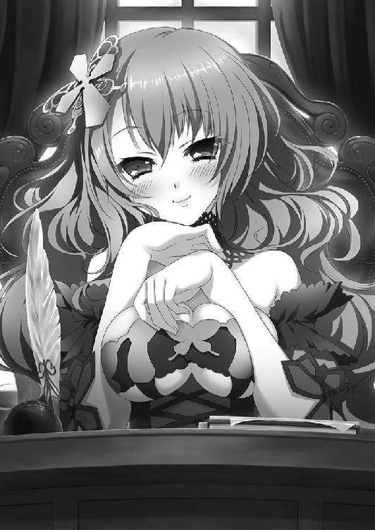
執務室に衝撃が走った。これにはラザールだけでなくナウムさえ目を瞠る。
隣の部屋を与えるということは、最大の信頼を示す恩賞だ。能力だけでなく、人格においても優れていると思われなければ、主のすぐそばに部屋を与えることなどできない。
「戦姫さま。さすがにそれは──」
ラザールが顔を蒼白にして訴える。しかし、エリザヴェータは首を横に振って退けた。
「私は言ったはずですわよ。十日で戻ってきたら、望む形で恩賞を与えると。あなたもそれは承諾したでしょう。いまになって異を唱えるのは卑怯ではなくて？」
「たしかに、この若者の能力については見誤っておりました。戦姫さまのお言葉も、自分の言葉も忘れてはおりませぬ。ですが、その恩賞はあまりにも大きすぎます。何とぞ、お考え直しくださいませ」
必死に頭を下げる老文官の額には、苦渋の汗がにじんでいる。戦姫の色の異なる瞳は、ラザールの隣で黙然とたたずんでいる白髪交じりの騎士に向けられた。
「......ナウムの考えは？」
ナウムは困った顔で顔の皺をなぞる。彼も、この恩賞はやりすぎだと思っている。
しかし、エリザヴェータの心情もわかっていた。
ウルスをつなぎとめるために、彼女は必死なのだ。
それに、少なくとも任務を課し、その功績に対して報いるという手順は踏んでいる。
何より今回はあきらかに、文官たちの失態だ。ラザールにしても調停が成功するはずなどないと見くびっており、万が一に備えて恩賞を事前に決めておくこともしなかった。
だが、このままにするのもよくない。できるだけ穏やかな口調を心がけて彼は言った。
「臣下の功績を評価し、報いようとする戦姫さまのお気持ちは貴いものです。しかし、やはり恩賞としてはいかがなものかと私も思います」
エリザヴェータは表情を曇らせた。ナウムは続ける。
「そこで、ご提案させていただきます。ウルスに何らかの役目を持たせ、三ヶ月だけ隣の部屋を与えるという形にしてみては」
「三ヶ月......」
エリザヴェータは考えこむ様子を見せた。そんな主を見ながら、このあたりが落としどころだろうとナウムは考える。あとはラザールと話しあい、三ヶ月間さまざまな仕事をウルスに課して、ほとんど部屋に不在の状態をつくってしまえばいい。
エリザヴェータは怒るかもしれないが、多くの仕事をこなすことでウルスの立場が安定すれば、いずれ不満もおさまるだろう。ナウム自身、ウルスにはこの公宮にいてほしいと思っている。第一にエリザヴェータのためだが、彼もこの若者を嫌いではない。
考えがまとまったのか、エリザヴェータはウルスに視線を向けた。
「それではウルス。あなたには今日から三ヶ月間、私の寝室の隣の部屋を与えます。役目──役職はそうね、戦姫相談役というあたりでどうかしら」
ナウムとラザールは顔を見合わせた。公宮における相談役とは名誉職であり、決まった仕事を持たず、実権はないに等しい。その代わり、相談役を務める相手からその都度、必要に応じて権限を付与されるのだ。この場合は戦姫からということになる。
ウルスはといえば、報告を終えたあとは黙って立っていた。恩賞を受ける立場なので、余計な口出しはしないように努めていたのだが、三人を見つめる視線が半ば呆れたものだったことは否定できない。せめて事前に決めておいてほしかったと思った。
しかし、エリザヴェータのこの言葉には、さすがに戸惑いを含んだ目でナウムを見た。受けてしまっていいのかと無言で問いかける。
ナウムはウルスに答える代わりに、大仰な仕草でエリザヴェータに一礼した。ラザールもそれに倣う。
「私どもはそれでよろしいかと存じます」
「......乗せられた気がしますわ」
エリザヴェータは二人を横目で見てぼそりとつぶやいたが、それ以上のことは言わず、笑顔をウルスに向けた。若者は恐縮して頭を下げる。
「ありがたく、ちょうだいいたします」
かくてウルスは騎士見習い兼戦姫相談役となった。異例の出世だった。
◎
その日もウルスはすばやく朝食をすませて、城下町へ向かおうとした。戦姫相談役となって数日が過ぎていたが、相変わらず仕事らしい仕事はない。
エリザヴェータに声をかけられたのは、外へ通じる廊下を歩いていたときだった。
「あら、ウルス。外套なんか羽織ってどこへ行くの？」
聞き慣れた声に振り返ると、紫のドレスをまとった赤い髪の戦姫が立っている。付き従っている者はなく、ひとりだ。ウルスはごまかそうとして口を開きかけたが、それより早くエリザヴェータがにっこり笑って言った。
「そういえばあなた、毎日のように城下へ出ているそうね」
隠していたつもりだったが、ばれていたらしい。主の目は笑っていない。
「城下でいろいろなものを見れば、記憶が戻るきっかけをつかめるやもと思いまして」
ウルスが弁明すると、エリザヴェータは沈黙した。
若者が記憶を取り戻すことを、誰よりも望んでいないのが彼女だ。記憶が戻れば、ウルスはウルスでなくなってしまうからだ。だが、その想いを口にすることはできなかった。
主の沈黙の意味を、ウルスは怒りだと誤解した。少し考えて提案する。
「ご主人も城下に出てみますか？」
「視察ということ？ いやよ」
気を取り直したエリザヴェータは、そっけない返事をして首を横に振った。
「私が視察をすると言うとね、二十人の護衛がつくの。あらかじめ決めておいた者しか近づけさせることはないし、私から誰かに話しかけることもできない。もちろん視察の大切さはわかっているけど、息が詰まるわ。散策の方がはるかにましよ」
散策については一騎か二騎をともにつければ、それほどうるさく言われない。町の外へ出るというのに、視察にくらべてよほど自由である。これは先代の戦姫が単騎で散策することを好んだからで、エリザヴェータが先代の戦姫に感謝している数少ない点だった。
不機嫌そうな顔の主に、ウルスは悪戯を考えついた子供のような表情で言った。
「お忍びではいかがでしょうか」
エリザヴェータは色の異なる目を瞠った。
その日もエリザヴェータは、朝から執務室で書類を片付けていた。ちなみに今日、彼女の手伝いをしていたのはナウムである。
昼になると、彼女は少し休むと言って寝室に戻った。
「かしこまりました。その間の応対は私がやっておきます」
ナウムはうやうやしい態度で主を見送った。
寝室に戻ったエリザヴェータだが、彼女は天蓋つきのベッドに潜りこんだものの、そのまま寝転がりはしなかった。その瞳は期待と興奮、緊張で輝いている。
そのままベッドの中で、彼女は前もって用意していたものに着替えた。
黒い長袖と足下まであるスカート、さらに白いエプロンで構成された侍女用の服だ。あとは埃よけの布で頭を包めば、最初の変装は完成である。
竜具たる黒鞭を太腿にしっかり結びつけると、エリザヴェータはベッドから抜け出た。扉に歩み寄り、外の気配を慎重に伺う。誰もいないと判断して、廊下へ出た。
うつむきがちの姿勢で、足早に廊下を駆ける。途中、兵士や侍女とすれ違ったが、呼び止められるようなことはなかった。
公宮を囲む城壁の近くまで出たところで、エリザヴェータは一旦足を止める。呼吸が荒い。心臓が早鐘を打っている。自分の頬に触ってみると、熱を帯びていた。
見上げれば、まばらに雲を散らした青い空が広がっている。風は冷たいものの、いい天気だ。白い太陽と青空が、自分を後押ししてくれているように思えた。
侍女に扮して公宮を抜け出すなんて、はじめてだ。自分以外にこのことを知っている者は、発案者のウルスと協力してくれたナウムの二人だけ。
お忍びをウルスに勧められたとき、エリザヴェータはすぐにはうなずかなかった。
「でも、怒られるわ」
そのとき彼女の口から出てきた言葉は、何とも子供じみたものだった。ウルスは笑って応じたものである。そのときは俺が怒られます、と。
正面にある門ではなく、公宮に通っている侍女たちが使う小さな門をくぐる。
ウルスはそこで待っていた。彼の姿を見て、エリザヴェータは安堵の息をつく。若者は笑顔で言った。
「それでは、まいりましょうか」
最初に連れていかれたのは、一軒の小さな宿だ。
「公宮を抜け出すにはその服でないといけませんでしたが、一度街に出れば、その格好ではかえって目立ちますからね」
宿の一室を借りて、エリザヴェータはウルスが用意していた服に着替える。
麻を二重織りにした服は、胸のあたりが少しきつい。その上に、襟や袖口に毛皮をあしらった白い外套を羽織る。やはり毛皮を使った長靴を履いた。
──こんなものを着るのはひさしぶりだわ。
戦姫になる前は、こういった服装が当たり前だった。ナウムが事前に用意したという鏡を見ながら、左目を眼帯で覆う。眼帯は、外套に合わせて白。どうしても異彩虹瞳は目立つので、話しあった末に眼帯をつけることにしたのだ。
羊毛の白い帽子をかぶり、赤い髪をその中にしまいこむ。帽子には小さな玉をいくつも連ねた飾りが垂れ下がっていた。眼帯を目立たせないための配慮らしい。
「......これが私」
鏡に映る自分を見て、エリザヴェータはぼんやりと呟いた。華やかな紫色のドレスを着た自分を見慣れていたからか、地味な姿の自分は新鮮だった。
部屋を出る。エリザヴェータの姿を見たウルスは、微笑を浮かべた。
「どうですか？」
「そうね。少しきついけど、我慢できないわけじゃないわ」
どこがきついのか、については恥ずかしいので伏せた。
「これなら戦姫には見えないでしょう」
ウルスはそう言って、エリザヴェータに背を向ける。赤い髪の戦姫は不機嫌になった。
「何か他に言うことはないのかしら」
率直に不満をぶつける。ウルスは怪訝そうに振り返ると、わからないらしく首をひねった。エリザヴェータはため息をつく。早足で歩いてウルスを追い抜き、振り返った。
「早く私を連れていきなさい」
手から何色もの煙を噴き上げる大道芸を見た。吟遊詩人の詠う、村人と妖精の心温まる話に耳を傾けた。露店で茹でたジャガイモや燻製肉を食べた。
大通りを主婦が行き交い、子供が犬と駆ける。職人らしき男が道ばたで火酒を飲んでいる。家の庭で、翼弦琴の手入れをしている老人がいる。露店の並ぶ通りで商人たちが声を張りあげ、冷やかす恋人たちもいれば、真剣に品定めをする若者もいた。
にぎやかで、そして平和だった。
「あなた、本当にいろいろなところへ行っていたのね」
エリザヴェータが呆れてそう言ったほど、ウルスは彼女をいろいろなところへ連れていき、さまざまなものを見せた。費用はすべてウルスの負担だ。
エリザヴェータの頬はゆるみ、心は弾んでいる。何を見ても新鮮だった。冷たい風も、陶器の椀で売られているスープを飲めば、気にならない。
何よりもウルスが隣にいる。同じものを食べ、同じものを見ている。
一刻半ほど過ぎたころ、二人はてきとうな空き地に入って少し休むことにした。木々に囲まれた円形の広場で、切り株を丁寧に削ったものが椅子代わりに置かれている。
「何か飲み物でも買ってきます」
そう言って足早に歩いていったウルスを見送り、エリザヴェータは手近な木によりかかる。小さく息を吐いて、左目を覆う眼帯にそっと触れた。
──ちょっと外してみようかしら。
必要だとはわかっているが、この眼帯はやはり邪魔だった。
両目で、この風景を見てみたかった。
──だいじょうぶよ。だって、ウルスがいるもの。
眼帯を外す。エリザヴェータに粗野な声がかけられたのは、そのときだった。
「なあ、あんた。俺とこれから飲まねえか」
足音が近づいてきて、見知らぬ男が赤い髪の戦姫の前に立つ。二十代半ばといったところか。薄汚れた外套を羽織り、腰のベルトにいくつもの小袋を下げている。声にアスヴァールの訛りがあるところからして、旅人のようだった。
楽しいひとときを邪魔されたエリザヴェータは、憤然として言葉を返す。
「私はいま気分がいいの。私の機嫌をそこねる前に立ち去りなさい」
男はその言葉を虚勢と受け取ったらしい。いやらしい笑みを浮かべてエリザヴェータに手を伸ばす。赤い髪の戦姫はその手を乱暴に払いのけた。
払いのけられた男の指がエリザヴェータの帽子に当たり、帽子が地面に落ちる。
赤い髪がぱっと広がり、色の異なる双眸が、男の前にさらけ出された。男は奇怪なものを見る目でエリザヴェータを見つめ、低く呻いた。
怒りが激発に至るのは一瞬だった。エリザヴェータは左手で眼帯を握りしめ、右手で男の顔をつかむ。容赦なく男を地面に叩きつけた。
「ご主人!?」
驚きの叫びが、息を荒げるエリザヴェータをはっとさせる。陶杯を両手に持ったウルスが駆け寄ってきた。エリザヴェータと倒れている男とに視線を走らせ、若者はおおよその事情を察する。幸いというべきか、男は気を失っているだけのようだ。
ウルスはすぐそばの切り株に二つの陶杯を置くと、帽子を拾いあげて土を払い、エリザヴェータの頭にかぶせた。彼女の背中に手を添えて、その場から離れる。通りは目立つので細い脇道に入った。
「......どうして？ どうして、私がこんな想いをしなくちゃならないの？」
左目をおさえて、異彩虹瞳の少女は涙を流した。暗く陰鬱な感情が彼女を包みこんでいる。幸せに浸っていた無防備な瞬間に起きたことが、傷をよりいっそう深くしていた。
「吉兆なんて嘘。でたらめよ。こんなもの抉り取ってしまえば......」
感情が昂ぶっているからか、無茶なことを言う。ウルスは彼女を止めながら言った。
「私は、ご主人の目が好きですよ」
沈黙が訪れる。
間を置いて、エリザヴェータはおずおずと尋ねた。
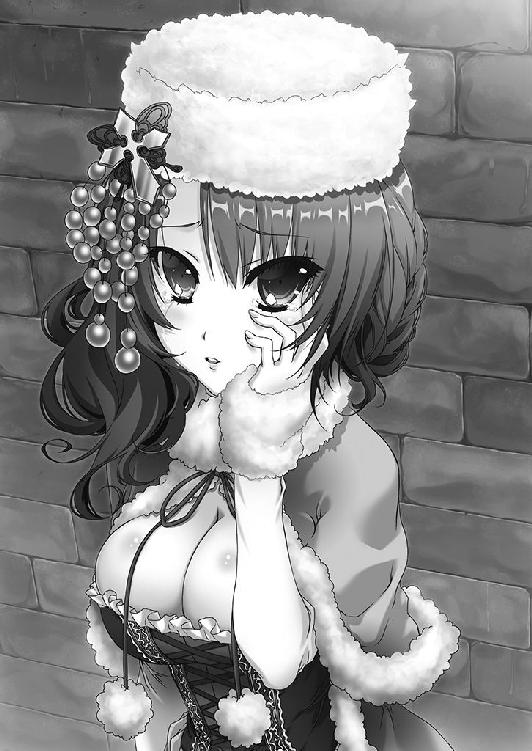
「......どう好きなの？」
「その二つの色の目があってこそ、ご主人であると思うからです」
黙りこんだエリザヴェータに、ウルスは続けた。
「私がかつてご主人の目を猫みたいだと申しあげたとき、ご主人は笑ってくれました。私の感想は、この目でなければ出てこなかったでしょう。もちろん、いやな思いをされたことも多々あったと思います。ですが......」
そこでウルスの言葉は途切れた。エリザヴェータが真剣な眼差しで、若者を見上げたからだ。頬に涙の跡があり、目のまわりは赤くなっていたが、もう彼女の目から涙はあふれていなかった。
「ウルス。あなたはどうして、私のことを『ご主人』と呼ぶの？」
「もしかして、お気に障っていたのでしょうか」
唐突な質問にウルスは首をひねる。エリザヴェータは表情をまったく変えずに答えた。
「それならもっと早く言ってるわ。──他の者は、私をそう呼ばないでしょう」
戦姫さま。ナウムでさえ、エリザヴェータをそう呼んでいる。先日の戦で会ったビドゴーシュ兵たちもそうだった。変わっているのは、むしろウルスの方だ。
ただ、ウルスがエリザヴェータを『ご主人』と呼ぶとき、そこには召使いが主人に対するようなへりくだった姿勢はない。
「たいした理由じゃありません。ご主人に会ったとき、私は戦姫というものについて知らなかったんです」
少女の異なる色の瞳にそれぞれ失望と落胆が浮かぶ。それに気づかず、若者は続けた。
「それに、仕えることになったといっても、この先どうなるのかわかりませんでした。だから、立場とかそういうのは一切考えないことにして、このひとにお仕えするんだぞと。この呼び方なら、ご主人ひとりだけを......」
再び、ウルスの言葉は途切れた。エリザヴェータがうつむいて肩を震わせたからだ。さすがに不敬だったろうかと、若い戦姫相談役は不安になった。気に障ってはいないと言っていたが、それは理由を知る前のことだ。
どうしたのかと聞くのもためらわれ、黙って見守っていると、長い沈黙の末にエリザヴェータは盛大なため息をひとつ吐きだした。それから外套の袖で顔をごしごしと拭う。
そうして顔を上げたときには、エリザヴェータの顔には笑みが戻っていた。涙の跡は消えているが、外套の袖でこすったせいか頬が赤く染まっている。
「そろそろ帰りましょうか、ウルス」
「わかりました」
エリザヴェータの機嫌が直ったことに安堵しつつ、ウルスは笑顔で答えた。日没まではまだ時間があるが、彼女が満足したのならば、引き上げるべきだった。
通りに出て、二人は歩きだす。ところが十歩と行かない内に、エリザヴェータはある露店に視線を向け、興味を抱いたらしくそちらへ歩きだした。仕方なくウルスも従う。
それは装飾品を扱う店だった。装飾品といっても金や銀は使わず、木片を削り、よく磨いた石や少量の銅などで飾りつけをしたものだ。だから、値段はそれほど高くない。
敷布代わりの毛布の上には、髪留めや首飾り、指輪や腕輪などが並んでいた。店の男はエリザヴェータに人懐こく笑いかけて、それからウルスを見る。
「可愛いお嬢さんじゃないか。ここは男として、何か買ってあげるべきじゃあないか」
ウルスは男に笑みを返すと、エリザヴェータにうなずいてみせる。
「どうぞ、お好きなものを」
「そ、それじゃ、あれ......」
戸惑いがちにエリザヴェータが指さしたのは、木の実と小さな石を連ねた首飾りだった。木の実も石もよく磨かれていて、木の実は青に、石は黄色に塗られている。
「毎度どうも。あんたがお嬢さんにつけてあげなよ」
男は銀貨を受け取りながら、ウルスに首飾りを手渡す。どうも誤解しているらしいと若者は思ったが、エリザヴェータはとくに否定せず、黙ってウルスを見ている。
「......つけますよ」
おそるおそる言うと、エリザヴェータは無言で背筋を伸ばし、胸を張った。ウルスは首飾りを持った手を彼女の首へと持っていく。白い喉が艶めかしく見えた。彼女の首の後ろでかちりと小さな留め金をはめる。
「よくお似合いです」
笑顔でウルスは言った。お世辞ではない。それが彼女の首回りを飾った途端、毛布の上に並んでいたときとはくらべものにならないほど、輝いて見えたのだ。
だが、エリザヴェータはぷいとそっぽを向いた。
「私がこの服を着たときには何も言わなかったのに」
いまごろになって、ウルスは己の失態を悟らされたのだった。会話を聞いていた店の男は、遠慮なく腹を抱えて笑っていた。
日が沈みかけたころ、エリザヴェータは公宮の寝室にいた。ナウムに公宮の裏門を開けておいてもらい、そこから無事に帰ってきたのだ。ウルスが兵たちの注意を引いてくれたおかげで、誰にも見つからなかった。
今日は早く休むと侍女たちに告げて、彼女は天蓋つきのベッドに潜りこんでいる。
──疲れた。
それは、喜びを伴う心地よい疲労感だった。木の実と石の首飾りを、エリザヴェータは目の前まで持ってくる。首飾りを両手で優しく握りしめ、かかえこんだ。
ほどなく戦姫は、幸せそうな寝息をたてはじめた。
◎
日はとうに沈み、空に星が瞬いている。
一軒の酒場の隅で、五人の男が古びたテーブルを囲み、暗い顔を寄せ合っていた。他のテーブルはにぎやかだが、ここだけ雰囲気が違っている。
テーブルの上には葡萄酒の瓶が四本置かれているが、その内の三本までは空になっていた。他に、魚の干物やチーズ、薄切りにした豚の肉を乗せた大きな皿がある。
「そういえば、聞いたか。今度は相談役だそうだ。あの小僧」
ひとりが酒杯を握りしめて毒々しい声を吐きだした。何人かが冷笑を浮かべる。
「たかが調停ひとつを片付けただけで相談役か。よほど媚びを売ったと見える」
「生まれの定かでない男で、これだ。俺が調停を片付けたら一千騎の隊長は固いな」
「まったく馬丁あがりの分際で。年寄りの騎士や文官どもは何をしているんだか」
酒を乱暴に呷り、干物やチーズをかじりながら彼らは口々にウルスを罵った。
彼らは公宮に勤める騎士だ。剣や槍の鍛錬を欠かさず、いくつもの試練をくぐり抜けた末に、二十代の若さで現在の立場をつかんだ者たちである。それだけに自負心が強く、そういうものを何ひとつ持たず戦姫に気に入られているウルスに嫉妬と反感を抱いていた。
ちなみに、彼らのような存在がいることをナウムは知っていたが、正面から苦情を申し立ててこないかぎりは咎めることもせず、放っておいた。ウルスがどれだけ武勲を重ねよと、こうした者たちがいなくなることはない。それを彼は知っていたからだ。
「弓が上手いから何だというんだ。剣や槍の腕は幼児以下だというではないか」
「いかにも田舎者というあの面を見ろ。生まれもどうせろくなものではあるまいよ」
酔いも手伝って、彼らの愚痴と文句はとどまることを知らない。さらに酒を重ねて思いつくかぎりの悪口を並べていると、不意に横から声をかけられた。
「──その男がそんなに気に入らなければ、いっそ消し去ってしまえばどうじゃ」
彼らは胡乱げな視線をそちらに向ける。
ゆったりとした黒いローブに身を包み、同じ色のフードを目深にかぶった小柄な老婆が立っていた。子供と見まがうほどに背は低く、ローブの裾を床に引きずっている。顔は見えず、長い鷲鼻だけがフードから突き出ていた。手に、粗末な作りの箒を持っている。
「何だ、婆さん」
騎士のひとりが気味悪そうな目で老婆を見る。酔っていてもわかるほどに得体の知れない雰囲気を、その老婆はまとっていたのだ。老婆はくぐもった笑い声を漏らした。
「それほど嫌っておるなら、そのウルスとやらを殺してしまえと言うておるのじゃよ」
さらりと殺害をそそのかす老婆に、騎士たちは顔を見合わせる。彼らはウルスに対して敵意を抱いており、不幸な目に遭ってしまえと思ってはいたが、殺してやりたいという心境にまでは至っていなかった。
だが、老婆の言葉には不思議と耳を傾けたくなる何かがあった。彼らは席を立つこともせず、老婆をじっと見つめてその言葉を聞き続けた。
そして彼らがふと我に返ったとき、老婆の姿はどこかに消え去っていた。
◎
お忍びから幾日かが過ぎた日の夜、ウルスはエリザヴェータの寝室の見張りを命じられた。ただし、一晩に限定してのことである。ナウムと、そして老文官ラザールの手配によるものだった。
「どうして私に？」
見張りを命じたナウムに対して、ウルスが真っ先に尋ねたのはそのことだ。
エリザヴェータの寝室の見張りには、身元も能力もしっかりした者が選ばれる。若者もそのぐらいのことはさすがに知っていた。
苦労性の騎士は、いつになく真面目な顔をつくって答える。
「あまり大きな声では言えないが、戦姫さまはここ数日、あまり寝ておられないそうなんだ。女官の話だと、夢を見てうなされているらしいんだが」
ウルスは納得したようにうなずいた。最近エリザヴェータの顔色が優れないことは、ウルスも気づいていた。だが、一度聞いてもはぐらかされたので様子を見ていたのだ。
「薬を用意してみたが、お飲みにならなかった。体調を大きく崩す前に、こちらとしては手を打っておきたい。おまえさんが見張りを務めれば、安心してぐっすり眠ってくれるかもしれん。そう言ったらラザール殿も協力してくれたわけだ」
「わかりました。でも、剣を使えない私に見張りが務まるんでしょうか」
首をひねるウルスに、ナウムは問題ないと言いたげな顔で答える。
「短弓なら狭い廊下でも扱えるだろう？ 怪しいやつが近づいてきたら声をかけて呼び止めろ。それでも言うことを聞かなければ、かまわないから射て」
ウルスが呆れるほど乱暴な話だが、見張りならばそのぐらい過剰な方がいいのかもしれない。
ともかくそのような事情で、ウルスは短弓を持って真夜中の廊下に立っていた。廊下は冷えるので、鎧はつけずに毛皮の帽子と外套を着込んでいる。この外套は三重になっており、そのためにいささか重いが下手な革鎧よりも頑丈だ。
すぐそばの壁には、火のついた松明がかけられている。この火を絶やさないようにするのも見張りの務めだった。
何か用事があるときやエリザヴェータに呼ばれたときは、別室に控えている女官に連絡するよう言われていたが、そんな機会などなく時間ばかりが過ぎていく。冷え込みは厳しくなり、静けさは増していった。
いったいどれほど時間が過ぎただろうか。
ふと、ウルスは眉をひそめた。どこからか声が聞こえたように思えたのだ。
──何だ......？
反射的に腰を低くし、耳をそばだてる。すぐにわかった。その声は、自分の後ろ──エリザヴェータの寝室から聞こえるのだ。
奇妙なのは、それが明確な言葉ではないらしいことだった。たとえば彼女が夜半に目を覚まして女官を呼んだのであれば、もっとはっきりした声が聞こえてくるはずだ。
だが、その声は呻いているようで、しかも途切れ途切れだった。
エリザヴェータが夢を見てうなされている、というナウムの言葉が頭をよぎる。
迷った。女官を呼んで、中の様子を見てもらうべきか。しかし、ウルスはすぐにその考えをあらためた、替えの松明に火を灯して、左手でそれを握りしめる。
右手で扉を開け、身体を滑りこませた。
寝室の中央には天蓋つきのベッドがある。そのそばには燭台が置かれ、蝋燭に小さな火が灯されていた。
「──ご主人」
返事は叱責や怒声ではなく、言葉にならない呻き声だった。天蓋つきのベッドに、ウルスはすばやく駆け寄る。
「ご無礼、お許しを！」
天蓋の覆いをまくり上げたウルスは、驚きに目を瞠った。
エリザヴェータは自身の胸を押さえて、苦悶の表情を浮かべている。その口から、呻き声とともに苦しげな吐息が漏れていた。美しい顔にも身体にも汗がにじんでおり、赤い髪が数本額に張りついている。夜着ははだけて、白い肌が露わになっていた。
ウルスは燭台に松明を引っかけると、エリザヴェータの肩をつかんで揺する。
「ご主人！」
必死に呼びかけた。エリザヴェータの手が空中でもがき、ベッドの縁を掴む。異様な音をベッドが発した。縁が砕けたのだと、ウルスはすぐにはわからなかった。
エリザヴェータの右手がウルスの顔に触れる。同時に、彼女は目をうっすらと開けた。
ややあって、戸惑いを含んだ吐息を赤い髪の戦姫は漏らす。金色と碧色の瞳がぼんやりと若者を見上げた。
「ウルス......？」
「気がつかれましたか」
ウルスは安堵の息をついた。それからエリザヴェータの肩をつかんでいることに気づいて、慌てて離す。呆然としている彼女に起こったことを説明しようと口を開きかけ、つい彼女の姿をまじまじと見つめてしまった。
燭台の火が、天蓋越しにベッドをぼんやりと照らしている。黒絹を使い、レースをあしらった夜着は豊かな胸の半ばまでまくりあげられ、汗に濡れて身体に張りついていた。
彼女の息はまだ荒く、どこか気怠げな表情は妖艶さを感じさせる。白い肌には汗の残滓がにじんでおり、ずいぶんと扇情的に見えた。細い腰から絶妙な曲線を描いて続く形のよい太腿も目にまぶしい。
エリザヴェータが夜着の端をつまんで持ちあげたところで、ようやくウルスの身体は動いた。真っ赤にした顔を慌てて背け、天蓋の覆いを戻す。
「その......ご気分はだいじょうぶでしょうか」
どうにか声を絞り出したものの、内心ではいますぐ逃げだしたい心境だった。夢にうなされていただけらしい。はじめから女官に任せておけばよかった。
返事はない。何も聞かずに立ち去ることなどできず、ウルスは天蓋のそばに立って、じっと待つ。ややあって、エリザヴェータがウルスを呼んだ。
「......ウルス。私、何か言っていたかしら？」
「いえ。うなされておいでのようでしたが、意味のある言葉は何も」
「本当でしょうね」
ウルスは驚き、おもわず天蓋を見つめた。まさか念を押されるとは思わなかったのだ。
「本当です」
そう、とか細い声が聞こえた。ウルスは戸惑いつつ、こちらから聞いてみる。
「女官に言って、水か葡萄酒を用意させましょうか」
「いらないわ。それより、そこにタオルがあるでしょう。私の背中を拭いてちょうだい」
当たり前のような口調で命令されて、ウルスははあ、と間の抜けた声を発した。何度か瞬きして、その内容を正確に理解するとおそるおそる確認する。
「女官を呼んでくる、ということですね」
「あなたでいいわ。寒いの。早くなさい」
ウルスは絶句したが、ここで立ち去れば主の怒りを買うだろうと容易に想像できた。仕方なくテーブルにあるタオルを手に取る。ふと疑問が湧いた。
──どうして、こんなものがここに置いてあるんだ？
使う予定でなければ、わざわざ置いておくことはないだろう。失礼します、と言ってウルスは天蓋をそうっとまくる。
すでに、エリザヴェータはこちらに背中を向けていた。夜着は脱ぎ去ったらしく、白い背中が露わになっている。腰まで届く赤い髪も、肩から前へ流していた。
ウルスは緊張とかすかな興奮におもわず唾を呑みこみ、その音がエリザヴェータに聞かれなかっただろうかと内心でうろたえた。
それから、彼女が背中を向けていることに安堵する。少なくとも、自分の身体の反応について気づかれることはないだろう。もし気づかれれば、ただではすまない。
ウルスは力を入れすぎないよう気をつけながら、彼女の肩のあたりを拭う。タオルが触れたとき、エリザヴェータはびくりと身体を震わせたが、すぐに肩の力を抜いた。
「──ウルス」
不意に、エリザヴェータが呼ぶ。
「私がうなされていたことは、誰にも言っては駄目よ。何人かは知っているようだけど」
ウルスはためらい、すぐには答えられなかった。手は休めず、少し考えて口を開く。
「よかったら、理由を聞かせていただけませんか」
タオルはいま、腰から尻にかけての曲線を拭っている。下手なところに触れないよう、目をそらし続けることはできない。ウルスとしては会話に集中したかった。
「余計な心配をさせてしまうでしょう。第一、戦姫ともあろう者が夢を見てうなされるなんて......」
「夢は誰でも見るものです。疲れていれば、うなされることもあるでしょう」
なだめるような口調でウルスは言った。内心でもしかして、と考えている。
──うなされるたびに、これだけの汗をかいているのか？
そのときのためにタオルをテーブルに置いていたとすれば、理解できる。
それに、この彼女の態度も。冷静なようでいて、どこかちぐはぐだ。
背中を拭き終える。そのことを告げると、赤い髪の戦姫は横顔だけをこちらに向けた。
「......前も、拭いてみる？」
その声は艶っぽさと恥じらいを多量に含んでいたが、ウルスはそれに気づく余裕などなかった。エリザヴェータの頬が赤いのは薄明かりのためか、それとも。
彼女はくすりと笑うと、ウルスから顔をそむけた。
「冗談よ。ご苦労様、ウルス。あとは自分でやるからいいわ」
その言葉にほっとしながら、ウルスはエリザヴェータのそばにタオルを置く。天蓋を戻した。若者の心臓は、まだ激しく鼓動している。
「それでは、失礼いたします」
「しつこいようだけど、このことは他言無用よ。いいわね」
何だろう、とウルスは思った。このひとは何を気にしているのだろうか。
「ご主人。何かお悩みごとがあるのでしたら......」
「そんなものはないわ」
即答である。だが、その口調には焦りが感じられた。
ひとまずウルスは引き下がることにした。誰にも話したくないことはあるだろう。天蓋に向かって一礼し、寝室を出ようとしたとき、エリザヴェータの声が聞こえた。
「──ありがとう、ウルス。すぐに駆けつけてくれて」
それは、さきほどまでのどこか高圧的な物言いではなく、年齢相応の娘の声だった。
「いつでも、駆けつけます」
ウルスは寝室を出る。扉をそっと閉めた。
◎
暗がりの中に、二つの影がある。
ひとりは黒いローブに身を包んだ小柄な老人だ。その手には子供の頭部ほどもある水晶球があり、淡い光を放っている。老人は、その水晶球を無言で見つめていた。
そんな老人の背中を退屈そうに眺めながら、ひとりの若者が床に座りこんで金貨をかじっていた。中肉中背で、襟や袖に毛皮をあしらった厚手の服をまとっている。頭に緑色の布を巻いて、肩のあたりに垂らしていた。
古い時代に建てられた神殿の、地下である。明かりは老人の持っている水晶球の光のみで、空気は重く澱んでいた。石を敷き詰めた床には埃が薄く積もっている。
老人はドレカヴァク。若者はヴォジャノーイといった。どちらの名も、古い伝承などでは怪物や魔物の名として知られている。事実、彼らは人間ではなかった。
ふと、ドレカヴァクが身じろぎをする。ヴォジャノーイも視線だけを動かした。
何もないはずの闇の中に、突然小さな火が出現する。その火は急速にふくれあがったかと思うと音もなく弾け、火の粉をまき散らしながら小柄な老婆が現れた。
身体をすっぽり覆ってしまう黒いローブをまとい、粗末な作りの箒を引きずっている。目深にかぶったフードからは、ぼさぼさの白髪と鷲鼻だけが辛うじて覗いた。
「ひさしぶりだねえ、ヤガー婆さん。どうしたのさ、こんなところに」
ヴォジャノーイはかじっていた金貨を呑みこむと、楽しそうに声をかける。ヤガーと呼ばれた老婆は不愉快そうに鼻を鳴らした。
「ちとドレカヴァクに頼みがあっての。そういえば、トルバランが滅んだそうじゃな」
「ああ。煌炎の主にやられたよ。煌炎の主もそのあと死んだらしいけど」
さして残念でもないといった口調でヴォジャノーイは答える。
トルバランは彼らの仲間であり、人間に化けてアスヴァール王国に潜りこんでいた。しかし、オルシーナ海戦にて戦姫サーシャに滅ぼされたのだ。
「惜しい者をなくしたのう。あやつは遊び好きの怠け者じゃったが、おまえよりもよほど礼儀をわきまえておった」
「バーバ＝ヤガー。わしに頼みとは？」
水晶球から目を離さずにドレカヴァクが聞いた。バーバ＝ヤガーは小さくうなずく。
「ドレカヴァクよ。おぬしの竜を一頭貸してもらえんか。ちと会いたい戦姫がいてな」
「ああ。昔、力を与えてあげたっていう戦姫かい？」
思い出したように、ヴォジャノーイが横から尋ねる。
「それよ。会うのは二年ぶりじゃったかの。手土産のひとつも必要だろうて」
老婆の魔物は、フードの奥でいびつな笑みを浮かべた。
「そのあとでよいから『弓』をさがすのをおぬしにも手伝ってもらうぞ。トルバランが海に落としてから、まったく姿を捉えられなくなった」
ドレカヴァクの言葉に、バーバ＝ヤガーは顔をしかめる。
「おぬしがさがして見つからんのであれば、もう死んでおると思うがな。まあ借りをすぐに返せるのなら、わしはかまわんが」
言い終えるやいなや、バーバ＝ヤガーの姿は暗がりの中に消えた。あとには、彼女が現れる前と同じようにドレカヴァクとヴォジャノーイだけが残った。
ドレカヴァクは水晶球を覗きこみ続け、ヴォジャノーイは金貨をかじっている。
５ バーバ＝ヤガー
灰色の空の下で、雪がちらつきはじめた。中天を過ぎた太陽は雲に隠れている。
「マスハス卿。あの中で少し休みませんか」
馬を駆っていたリムが、街道から少し外れたところにある神殿らしき建物を指で示す。彼女の隣で馬を進めながら、マスハスはうなずいた。
「そうじゃな。明日には公宮に着くはずじゃ。無理をすることはない」
それから老伯爵は、彼とともに馬に乗っているティッタへ気遣う視線を向ける。
「ティッタも、もう少し我慢してくれるかの」
「あたしは平気です。マスハス様。リムアリーシャさん」
ティッタは顔を上げて屈託のない笑みを見せた。声には張りがあり、はしばみ色の瞳も活力を帯びてはいたが、ふっくらした頬からは丸みが失われている。やはり長旅の疲労は隠しようがなかった。それでも、彼女はこれまで不満のひとつも漏らしていない。
リムたちがルヴーシュに入ってから数日が過ぎている。ここまでの旅は、いたって順調だった。天候に恵まれたこともあるが、協力者がいたことも大きい。
ライトメリッツを出てレグニーツァに入ったとき、三人はレグニーツァの公宮とリプナの港町とにそれぞれ立ち寄った。そして、リプナの長であるドミトリーや船乗りのマトヴェイ、公宮の文官たちにあたたかいもてなしを受けたのだ。
とくにマトヴェイは、ティッタの肩をつかんで深く頭を下げた。彼はティグルがアスヴァールへ行く際に協力者として同行し、帰還時の船にもいっしょに乗っていた。むしろ、リムたちの方が彼をかわるがわる慰めなければならなかったほどだ。
「ティッタ殿。リムアリーシャ殿。そしてローダント伯爵。私にそのようなことを言う資格はないのでしょうが、あなたがたの旅が上手くいくことを神々に祈らせてほしい。私も同行させていただきたいところですが、そうもいきませんでな」
強面の元船乗りは、そう言って三人を見送ってくれた。彼らの協力を得て、リムたちはとくに問題もなくレグニーツァを通過することができたのだ。
ルヴーシュには協力者はいないが、明日には公宮に着くという目算が立っている。野盗や野の獣に遭遇することもなく、三人は予定通り馬を進ませていた。
その建物は、やはり神殿だった。そうとう古いものらしく、屋根といわず壁といわず亀裂が走って朽ち果てている。念のためにリムとティッタを外で待たせて、マスハスは剣を抜きはなって中に入った。こういう建物は野盗のねぐらになっていることが多いからだ。
神殿の中が無人だとわかると、三人は馬を引いて中に入った。
「利用者もおらず、管理する者もおらず、放っておかれたか」
床に積もった埃をてきとうに払ってから腰を下ろし、マスハスがつぶやいた。
「ジスタートの北部には、このように捨てられた神殿がいくつかあると聞きます。中には古い時代の神々や、妖精を祀ったものもあったとか......」
火のついた松明を床に固定しながらリムが答える。天井を見ながらマスハスが言った。
「ふむ。まあ、ぼろ屋でも当座の雪や風をしのげれば問題はないか」
そのとき、荷物を置いて帽子を脱いだティッタが立ち上がる。ツインテールが揺れた。
「あたし、お祈りをしてきていいですか？」
神殿の奥に古い祭壇があるのを、マスハスが見つけていたのだ。
巫女の娘として生まれ、ティグルに侍女として仕えてからも、定期的に神殿を訪れて祈りを続けていたティッタだ。同じ神々が祀られているなら、朽ちた神殿であれ祈りを欠かすつもりはない。また、ティグルの無事を祈りたい気持ちも当然あった。
「暗いから、転ばないよう気をつけるんじゃぞ」
少女の気持ちをマスハスもリムもわかっている。とくに心配はせず、うなずいた。
ティッタはぺこりと頭を下げて、祭壇へ駆けていく。
祭壇はたしかに古かったが、縁が欠けたり亀裂が走ったりはしていない。祭壇の左右には上部がアーチ状になった窓が並び、弱々しい光が射しこんでいる。
祭壇の奥に十体の神々を刻んだ彫刻があるのを確認すると、ティッタは祭壇の前に膝をついた。手袋を外し両手を合わせて目を閉じる。
「──天上の神々よ」
巫女として学んだ正しい拝礼を行って、ティッタは神像に祈る。
「ティグル様を、お助けください。そして、どうか、どうか......会わせてください」
どれほど長く祈りを捧げただろうか。不意に寒気を覚えて、ティッタは目を開けた。
息を呑んだ。自分のまわりに、闇がわだかまっている。
神殿内の暗がりとはまるで違う、異質の漆黒が。
驚きに声も出ないでいると、闇が外套をすり抜けてティッタを浸食する。背筋を悪寒が貫くのと同時に、女性の声がティッタの意識に響いた。
『ちょっと、力を貸してちょうだい』
声が出ない。立つこともできない。ティッタは逃げることも、マスハスやリムに助けを求めることもやめて、両手に力をこめる。祈りに意識を集中することにした。
しかし、それも長くは続かなかった。大きくよろめいてティッタは倒れる。
『助かったわ。前に入りこんだことのある身体で』
その声も、また彼女にしか届かなかった。
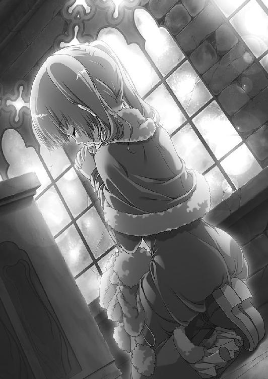
祈りの時間が長すぎることを訝しんだ二人が来るまで、ティッタが目を覚ますことはなかった。
◎
ティッタが倒れたときから、二刻ほど時間をさかのぼる。
エリザヴェータはウルスだけを伴って、散策に出ていた。空は灰色だったが、雪はまだ降っていない。赤い髪の戦姫は紫を基調としたドレスをまとい、雷渦を丸く束ねて腰に下げ、馬を走らせている。ウルスも弓を背負って馬を駆った。革鎧はつけていない。
二人は街道を外れて、草原を走っている。天気は決していいとはいえないが、この季節なら珍しくない。風がないのがありがたかった。
最初、エリザヴェータは気ままに馬を進めているとウルスは思ったのだが、どうも違うらしい。明確な目的地が、彼女にはあるようだった。
やがて、ある朽ちた神殿のそばでエリザヴェータは馬を止めた。
屋根のない、小さな神殿だった。石造りではあるが壁といい床といい、長い歳月の果てに、すっかりすり減ってしまっている。
「ついてきなさい」
エリザヴェータはウルスに背を向けて、朽ちた神殿へ足を踏み入れた。警戒する様子も見せずに奥へと進む。ウルスも彼女のあとについて歩いた。
奥には、ウルスの腰あたりまでの高さの石像がひとつ、ぽつんと置かれている。
──何か、いやな感じのする像だな。
石像を見下ろして、ウルスは眉をひそめた。造形が醜いとか、不快感を覚えるわけではない。見ていると、言いようのない胸騒ぎを覚えるのだ。
異彩虹瞳の戦姫は、石像を暗い顔で見つめながらウルスに言った。
「この像はね、このあたりではヤガー様と呼ばれているわ」
「ヤガー様......？」
「ちゃんとした名前はバーバ＝ヤガー、だったかしらね。おとぎ話に出てくるのよ。あなたは知らない......というか、覚えていないかもしれないわね」
エリザヴェータの説明によれば、バーバ＝ヤガーは箒を持ち、ローブに身を包んだ老婆の姿をしており、月のない晩に祈り続けた者に力を与えてくれるのだという。
赤い髪の戦姫は覇気のない声で続ける。
「この前、私がうなされたでしょう。あれはヤガー様の夢を見たからなの」
──だから、これが気になって見に来たのか......。
ウルスはエリザヴェータの横顔と、バーバ＝ヤガーの石像を交互に見る。あのときの彼女のうなされようは、尋常なものではなかった。それにナウムの話によれば、あの一晩だけではないはずだ。
「何日も、その夢を見たのですか？」
「──やっぱり気のせいだわ」
ウルスの質問には答えず、エリザヴェータは唐突に言った。自分に言い聞かせるかのような口調で。彼女は笑顔をウルスに向ける。
「つまらない話をしてごめんなさい。もう行きましょう」
彼女の態度を見て、ウルスは己の迂闊さに気づいた。心配したのが、かえってエリザヴェータに気を遣わせてしまったのだろう。
「待ってください、ご主人」
ウルスは彼女を止めようとしたが、エリザヴェータは石像に背を向けると、大股で歩いて神殿を出る。だが、彼女はそこで足を止めた。ふと遠くを見る。
十を超える数の騎影が、こちらへ向かってくるところだった。
「いったいどうしたのかしら？」
エリザヴェータは首をかしげる。彼らはルヴーシュの騎士だ。それも、公宮に勤めている者たちである。こちらへ十数騎も派遣するような命令を出した記憶は、彼女にはない。
──私が散策に出ている間に何か事件が起こり、ナウムあたりが派遣したのかしら。
そう考えるのがもっとも妥当に思えるのだが、不思議なことに、彼らはまっすぐこちらを目指している。今日の散策でどこに行くのかは、誰にも告げていないのに。
神殿から出てきたウルスも騎影に気づき、顔をしかめた。エリザヴェータはそこから動かず、騎士たちの様子を観察する。
騎影との距離が縮み、エリザヴェータは眉をひそめた。ここまで来れば、彼らからも主の姿は見えているはずなのに、その顔には主に対する敬意などが見えないのだ。
はたして騎士たちはエリザヴェータたちの前まで来ると、馬から下りもせずに二人を囲んだ。その数は十五騎。しかも、彼らは囲んだだけにとどまらず、剣を抜き放つ。
「おまえたち。何のつもり？」
もはや怒りを隠さずエリザヴェータが詰問する。騎士たちは、どこか酔ったような熱を帯びた声で答えた。
「戦姫さま。その男を引き渡していただきたい」
馬上から、騎士たちは乱暴な声をエリザヴェータに投げつける。彼らの視線は、エリザヴェータの後ろにいるウルスへと向けられていた。
「素性の知れない、自分の名さえ思い出せぬ若造が、戦姫さまに気に入られたからというだけで調子に乗りおって。貴様が戦姫さまの側近たるにふさわしいか、いまこの場で我らが見極めてくれる」
「いつまでそうして女の陰に隠れているつもりだ。卑怯者め」
彼らは口々にウルスへと罵声を浴びせた。怒りよりも危機感を覚えたウルスは、背負っていた弓を握りしめつつ、エリザヴェータのそばから離れようとする。
だが、エリザヴェータはウルスの前に手を伸ばしてその動きを制止した。
「あなたはそこにいなさい」
色の異なる瞳には、すでに戦意が輝いている。ウルスを気遣っただけではない。主として、臣下の愚行は正さねばならなかった。
また、エリザヴェータは彼らの様子がおかしいことにも気づいていた。騎士たちを睨みつけて、異彩虹瞳の戦姫は言い放つ。
「納得できないというのなら、それもいいでしょう。けれど、まず馬から下り、私に申し立てをするべきではなくて？ それもせず、群れて力に訴えるとは何事なの？ ルヴーシュの騎士として恥を知りなさい！」
騎士たちは言葉を返さなかった。剣を振り上げ、エリザヴェータもろとも叩き斬る勢いで迫ってくる。エリザヴェータは雷渦を握りしめた。
左から右へ薙ぎ払われた黒鞭が大気に悲鳴を上げさせて、騎士たちを馬上から叩き落とす。加減はしたが、それでもおそるべき威力だった。
さらに二度、三度とエリザヴェータが竜具を振るうと、馬上にある騎士はひとりだけになる。赤い髪の戦姫は色の異なる瞳に怒りを揺らめかせて、その騎士を睨みつけた。
「おまえが首謀者ね」
男は答えず、雄叫びをあげながら剣をかまえて突撃してくる。エリザヴェータは鞭を振るった。
剣と鞭が激突し、甲高い金属音を大気にまきちらす。男の剣は折れ砕け、馬上から転げ落ちた。頭から地面に叩きつけられ、首が不自然な方向にねじ曲がる。
同時に、エリザヴェータも衝撃にのけぞっていた。後ろで様子を見守っていたウルスがとっさに彼女を支える。
「だいじょうぶですか、ご主人......」
ウルスの言葉の語尾はかすれた。エリザヴェータも息を呑む。二人の視線はおたがいではなく、落馬したばかりの騎士に向けられていた。なんと、その騎士はよろめきながら立ち上がったのである。首がねじ曲がったまま。
「......どういうこと？」
怪異としか言いようのない光景に、二人はさすがにたじろいだ。しかも、他の騎士たちも次々に立ち上がっている。加減したとはいえ、雷渦の一撃をくらったというのにだ。
「──ひどいことをするのう、娘」
突然、しわがれた老婆の声が聞こえた。朽ちた神殿の奥、暗がりの中から。風に溶けて消えそうなほどかぼそいのに、なぜかはっきりと耳元でささやかれた。
「その者どもは、かつてのおぬしと同じく力を望んだ者たちじゃ。手荒に扱っては哀れというもの」
エリザヴェータの動きが止まる。すでに弓に矢をつがえていたウルスは、向かってくる騎士に矢を放った。もはや手加減をしている余裕などなく、矢はひとりの騎士の額を射貫く。だが、その騎士は倒れることもなく、額から血を流しながら向かってきた。
「ご主人。こいつらの狙いは俺のはずです。お逃げください！」
ウルスの必死な訴えに、エリザヴェータもようやく気を取り直す。だが、彼女は気丈にも首を横に振った。
「馬鹿なことを言わないで。この私に、部下を見捨てた戦姫になれというの？」
「そのようなことを言っている場合では──」
ウルスの言葉が終わらないうちに、エリザヴェータは雷渦を薙ぎ払う。接近していた騎士たちが吹き飛んだ。それから彼女はウルスの手を引いて、神殿の中に引き返す。
神殿の外はとくに木なども生えていない。少数が多数を相手にするには、屋内へ逃げ込むしかなかった。また、エリザヴェータとしては、さきほどの声の主の正体を突き止める必要もあった。
神殿に飛び込むと、ひんやりとした、どこか異様な空気がふたりを包んだ。
ウルスは緊張に身を固くする。さきほど、この神殿に入ったときにはこのような空気ではなかった。エリザヴェータは恐れる様子もなく、奥へと歩いていく。
黒い石像は、さきほどと変わらぬ形でそこに鎮座していた。
エリザヴェータは石像の前に立ち、雷渦を振りあげ、振り下ろした。
一撃で石像は粉々に砕けるかと思われたが、命中の瞬間、石像はひとりでに横に転がって黒鞭を避けた。雷渦は石の床を砕いて穴を開けるにとどまる。
「乱暴なことをするのう」
その声は、石像から発せられた。小刻みに震える石像の陰から、箒が飛び出す。そしてローブの裾が床に広がった。エリザヴェータはもう雷渦を振るわず、警戒の眼差しを石像に注いでいる。ウルスも弓に矢をつがえながら、放たずにいた。
石像は内包していた禍々しさを隠さず、むしろ二人に見せつけているかのようだ。恐ろしいものを目の当たりにしているという意識だけが、ウルスたちの心の中にはあった。
ほどなく、石像はローブに身を包んだ小柄な老婆の姿になる。頭にはフードを深くかぶっているので、箒をつかむ手ぐらいしか露出していない。その手は骨と皮ばかりで、異様に白かった。
「ひさしいな、娘。二年ぶりかえ。わしが授けた力はどうじゃ？」
老婆が嘲笑する。エリザヴェータは声も出せずにいた。
──これがバーバ＝ヤガー......！
おとぎ話で語られる通りの姿だが、その小柄な身体から放たれる異様な雰囲気に、エリザヴェータは覚えがあった。船の上で戦った魔物トルバランに似ているのだ。
「あいにく私の望みとはほど遠いわね。突き返してやりたいのだけど」
「ほほほ。そんなはずはなかろう」
フードの奥で、老婆は笑った。粘つくような笑声だった。
「二年前、おぬしはたったひとりでここに立ち寄り、たしかに願ったではないか。力が欲しいと」
「ええ。たしかに願ったわ。あのときの私は非力で、無力だった」
そのとき、騎士たちがついに追いついた。彼らはエリザヴェータにさえも躊躇せず襲いかかってくる。
赤い髪の戦姫は騎士たちに視線を走らせると、一切の加減をせずに黒鞭を振るった。赤黒い血を噴き出し、兜や甲冑を中身ごと打ち砕かれながら騎士たちは次々と倒れ伏す。
エリザヴェータは歯を食いしばって、床を強く踏み鳴らした。手を抜けば、彼らは起き上がって向かってきたかもしれない。だから、動けなくなるほどの一撃を叩きつけたことは間違いないと思っている。
だが、彼らはエリザヴェータの部下だったのだ。
「よくも、私の騎士たちをやってくれましたわね」
「それは違うぞ、娘。わしはこの者らの願いを叶えてやったまでのこと。いつぞやのおぬしのようにな。彼らがその若者を憎み、妬ましく思っていたのは事実よ。おぬしが力を欲したことが事実であるようにな」
「......黙りなさい！」
激昂し、エリザヴェータは雷渦を振りあげる。ヤガーはそれを見ても怯まず、持っていた箒の柄で床を突いた。
その瞬間、石が敷き詰められている床が真っ二つに割れた。エリザヴェータもウルスも足場を失って落下し、バーバ＝ヤガーだけが空中に浮いている。
二人は悲鳴をあげ、落石とともに闇の中に呑まれた。
エリザヴェータが〝ヤガー〟に祈ったのは、二年前だ。
その年の彼女は、多忙で多難だった。王家の直轄領にある村で起きた疫病に対処せねばならず、彼女の父親が犯した罪にも対応しなければならなかったからだ。
エリザヴェータは、父親を好きではない。自分を一度捨てておきながら、一方的な都合で拾いあげた父親など好きになれるはずがなかった。
だが、エレンが父を討ち取ったと聞いたとき、彼女は白銀の髪の戦姫に決闘を申しこむことを決めていた。
あんな父でも父だ、などと思ったのではない。
おそらく、自分はいつか父に認めてもらいたかったのだ。だから、その機会を永久に奪ったエレンに怒りをぶつけるしかなかった。
しかし、挑んでみれば完膚無きまでに叩きのめされ、無力さを突きつけられた。
〝ヤガー〟に祈ったのはそのときだ。
敗れて自領に戻り、政務の合間に散策をする日々が続いていたとき、朽ち果てた神殿を見つけた。戦姫になってまだ一年だったが、ここにこのようなものがあると聞いたことはない。供の者は神殿の外で待たせて、エリザヴェータは中に入った。
もし野盗の巣になっていたとしても、彼女には竜具がある。エレンのような強敵でもないかぎり、雷渦の一薙ぎで追い払えるはずだった。
はたして中には誰もいなかった。神殿自体も小さく、長い間使われた形跡がない。
奥には、黒い石像がひとつあった。
『力がほしいか』
その石像は声を発したのではなく、直接エリザヴェータの意識に呼びかけてきた。驚くエリザヴェータに、石像は思念とでもいうべきものを送り続ける。
石像は〝ヤガー〟と名のった。
『我は、力を求める者の前にのみ現れる。──力がほしいか』
「力......？」
『そなたの敵をねじ伏せる力じゃ』
朦朧とする意識の中で、エリザヴェータはうなずいた。
エレンに勝ちたかった。
自分は弱くはないと、証明したかった。
供の者の言葉によれば、エリザヴェータが神殿から出てきたときは四半刻ほど過ぎていたという。
「このような小さな神殿で、何をしていらっしゃったのですか」
「祈っていたのよ」
心配する部下に、エリザヴェータはそれだけを答えた。
散策を終えて公宮に戻ったエリザヴェータは、従者に命じて甲冑をひとつ己の部屋に運ばせた。それからひとりきりになって、さっそく試してみた。
右手の力だけで、エリザヴェータは重い甲冑を持ちあげることができた。大人ひとり分の重さはあるだろう鉄の塊を、だ。さらに、籠手を右手に持って握りしめる。鉄でできた籠手は、彼女の手の中でいともたやすくひしゃげた。
エリザヴェータの右腕には何の変化もない。筋肉が盛りあがっていたり、奇妙な紋様が刻まれたりもしていない。剣や鞭を握り続けているために指はやや節くれだっているものの、それでも細く、肌は白く、華奢だった。
妖精から力をもらった、などというおとぎ話の一幕ではない。それは、恐ろしい現実だった。この特異な力を知ったら、人々はどのような目で自分を見るのだろうか。
無意識のうちに、彼女の手は両の瞼をなぞっていた。生まれたときから在り続け、彼女の特異性を示し続けたものが、そこにはあった。
この力は誰にも話さないことにしようと、エリザヴェータは決めた。幸いにも自分は戦姫だ。周囲にはそれでごまかせるはずだ。
この力も、どうしても必要なときだけ使うことにしよう。
それから時折、彼女は夢にうなされるようになった。神殿の奥にあったあの石像が、もっと力を使えと自分に訴えかけてくる。もっと力を求めよと囁いてくる。
エリザヴェータは、誰にもこのことを言えなかった。特異性が明るみに出ることの恐ろしさを、彼女は物心ついたときから知っていたからだ。
私は戦姫エリザヴェータ＝フォミナ。自分にそう言い聞かせながら、彼女は戦姫で在り続けてきたのだ。
◎
気がついたとき、ウルスは暗闇の中に倒れていた。上から何かがのしかかっている。やわらかく、ぬくもりがあって、それなりに重いものが。
──何だ、これ。
ウルスはとにかくそれを押しのけようとして、手を動かす。すると、もっとやわらかいものに触れた。丸みを帯びて重量感があり、手に少し余るほどの。
指を動かしてみると、不思議な弾力でもって押し返してきた。同時に、若者の耳をかすかな吐息がくすぐる。顔を動かすと、さらさらとした感触が頬にあたった。
徐々に意識がはっきりしてきて、身体も感覚を脳に伝えてくる。服越しに背中が伝えてくるのは冷たい石の感触だ。それでは、自分の上にいるものはいったい何だ。
ウルスが身体を起こそうとすると、それは若者にもたれかかりながらずり落ちた。ウルスは右腕でそれを支える形になる。
ぼんやりとした光が視界に入って、ウルスはその正体にやっと気づいた。
エリザヴェータだった。
「ご、ご主人！」
驚きもあって、ウルスの声はかすれた。気を失っているらしいエリザヴェータの背中に手を回し、抱きかかえるように支える。顔に耳を近づけて呼吸を確かめ、光に慣れてきた目で慎重に顔や身体を観察したが、怪我などはないようだ。
「よかった......」
安堵の息をついて、ウルスは自分たちをぼんやりと照らしている光に目を向ける。それは、エリザヴェータが握りしめている雷渦だった。黒い鞭の半ばから先が、白い光を帯びている。
「そうか。俺たちは──」
ようやくウルスは思いだした。廃墟となっていた神殿の床が崩壊して、落ちたのだ。
見上げても、天井には闇がわだかまっていて高さすらわからない。雷渦の光もそこまでは届かないようだった。
──あれは、何だったんだ？
ヤガーと名のった老婆の姿が脳裏に浮かんで、ウルスはおもわず身震いする。あれは人間ではないと、本能が訴えていた。では何者だというのか。
──妖精なんかにはとても見えなかったぞ。怪物とか化け物とか......。
そういった呼称の方が、はるかにしっくりくる。
ウルスは首を振って、老婆の姿を頭の中から消し去った。何者かは知らないが、二度と会いたくない。一刻も早くここから逃げ出さなければ。
気を取り直し、自分が座りこんでいる床を左手で撫でる。平らな石の感触だ。継ぎ目はあるが、隙間ができないようしっかり組まれている。転がっている大小いくつもの石は、神殿の床が崩れてできた瓦礫だろう。
──神殿の地下に通路がある？
そのとき、エリザヴェータの口から低い呻き声が漏れた。ウルスは驚いて呼びかける。
「ご主人！」
その声に応えるかのように、赤い髪の戦姫は目を開けた。ぼんやりした表情は、ウルスの顔を認識して当惑へと変わる。
「だいじょうぶですか？ どこか痛いところは」
エリザヴェータはすぐには答えなかった。何かを言おうとしてはいるようだが、半開きの口からは言葉が出てこず、顔が赤く染まっていく。ウルスに抱きかかえられていると気づいたらしかった。
「ウ、ウルス。私はちゃんと立てるから、離しなさい」
言葉だけはどうにか紡げたが、声が不自然に高い。ウルスはだいじょうぶだろうかと重いながら、そっと彼女の背中にまわした腕を引く。
床に手をついて、エリザヴェータは身体を起こす。ふらつきながらではあったが、立ち上がった。ウルスも、彼女の動きに気をつけながら立ち上がる。
雷渦の光に照らされた床を見ると、細長い通路のそこかしこに瓦礫が転がっていた。
それに混じってウルスの弓も落ちていたが、真っ二つに折れてしまっている。ウルスはひそかに落胆しながらも、それを顔には出さずエリザヴェータに笑いかけた。
「ともかく、お怪我がなくて何よりです」
そう言ってから、ウルスはおもわず自分の左手を見る。エリザヴェータがどのような姿勢で自分の上に倒れていたのかに思い至り、奇妙な感触の正体にいまさら気づいたのだ。
「あなたこそだいじょうぶ？ 怪我はない」
ウルスの狼狽には気づかず、エリザヴェータが心配そうな顔で若者を見る。
「お、お気遣いありがとうございます。私もたいした怪我はありませんから」
口早に答えて、ウルスはごまかすように天井を見上げた。あの高さから落ちて、二人とも無事ということがあるのだろうか。
そのときエリザヴェータは、黒鞭がいつもとは違う光を帯びていることに気づいた。
「──そう。あなたが私たちを守ってくれたのね、ヴァリツァイフ」
微笑んで竜具に礼を言うとエリザヴェータは気を取り直し、雷渦を掲げて歩きだした。
「行くわよ、ウルス」
「──あの神殿の地下に、こんな通路があったなんて知らなかったわ」
雷渦を棒状に変えて、その明かりで先を照らして歩きながらエリザヴェータは言った。
天井の高さはわからないが、壁は石を隙間なく積み重ねてできている。通路の幅も、大人が三人は並んで歩けるぐらいに広い。空気は冷たく乾いていた。
「神殿に地下があること自体は珍しくないですが、たしかにまともではありませんね」
ウルスが言葉を返す。若者は落ち着きを取り戻したあと、エリザヴェータの隣を歩いていた。何かが現れたら彼女を守ろうという意思の表れだったが、拳大の瓦礫をひとつ持っているだけのウルスより、エリザヴェータの方がはるかに強いだろう。
「そうなの？」
「蓄えをしまっておくための倉庫とか、重要な方を埋葬する場所だとか......」
意外だという顔をするエリザヴェータに、ウルスはそう説明する。しかし自分たちが歩いているこの通路は、どちらにもあてはまらないもののように思えた。
──あのヤガーとやらが、俺たちを誘い込んだんだろう。
あるいはエリザヴェータが夢にうなされるところから、すべては仕組まれていたのかもしれない。何にせよ、ここは敵地であると考えるべきだった。
──だが、あれから何もないな。俺たちを落として終わりなのか？
バーバ＝ヤガーの目的がわからない。自分たちを殺すつもりならば、気を失っている間にできたはずだ。
通路は何度か右に曲がり、左に曲がったが、わかれるようなことはなく一本道が続いている。その点だけはありがたかった。
前向きな話をしようと思い、ウルスは何気ない口調で言った。
「こんなところは、早く出たいですね」
外に出たら、と続けようとしてウルスは言葉を呑みこむ。
ここから出られたとして、エリザヴェータとウルスがやらなければならないのは死体の埋葬だ。それも、自分たちの命を狙った連中の。
騒ぎになるのは間違いない。
問題なのは、彼らが襲いかかってきたことは自分たちしか知らないということだ。事実を述べても、どれだけの人間が信じてくれるだろうか。エリザヴェータが、ウルスを妬む者たちを葬り去ったと思うのではないか。
そのことにエリザヴェータも思い当たったのだろう。だが、彼女はウルスのように思い悩みはせず、傲然として胸を反らした。
「ウルス。あなたは何も気にすることはないわ。彼らは私たちを殺そうとした。私たちは自らの身を守った。それだけよ」
その声は凛として、何者にも屈さない覇気を感じさせた。それから、彼女はいくらか口調をやわらげる。
「でも、あなたを巻き込んでしまったことは謝るわ。本当にごめんなさい」
「いえ、私はあなたの臣下で、相談役ですから」
ウルスも気を取り直し、笑顔で一礼した。敵の懐でこのような態度でいいのかと思わないでもないが、逆だ。
こういう状況だからこそ、自信と余裕、そして決意を持つ必要がある。
通路を歩きながら、ウルスは気になっていたことを尋ねた。
「あのヤガーというのは、何なんでしょうか」
「魔物、怪物。そういうものでいいのではないかしら」
「どうして、俺たちをこんな目に？」
「わからないわ。ただ、すぐに殺す気はなさそうね」
バーバ＝ヤガーについて語るとき、エリザヴェータの声はさすがに緊張を帯びた。後ろめたさがあるというだけでなく、戦って勝てるかどうかわからないという不安もある。
だが、彼女はそうした内心を表には出さず、艶然とウルスに微笑みかけた。
「ウルス。あなたのことは私が守ってあげるわ」
それは偽りのない本心だった。そして、誰かを守るということにエリザヴェータは充実感を覚えていた。
どれほど歩いただろうか。二人は足を止めた。
「何かがいるわね」
エリザヴェータの金色の目と碧色の目は、通路の先──雷渦の明かりも届かない暗闇の奥へと向けられている。
この先に、何かがいる。背筋がぞくりとするような、危険な気配をまとった何かが。
エリザヴェータの手にある雷渦を、ウルスは横目で見た。この明かりによって、相手も自分たちに気づいているだろう。
──ここまで一本道だったな......。
緊張で、若者の顔が強張る。武器がほしかった。
いま握りしめているような小さな瓦礫ではなく、使い慣れた弓と矢が。
「安心なさい、ウルス」
口元に笑みさえ浮かべてエリザヴェータが言った。
「私がいて、このヴァリツァイフがある。恐れるものなんて何もないわ」
彼女の言葉に応えるように、黒鞭の帯びている光から白い火花が散った。
赤い髪の戦姫は、竜具を構えてまっすぐ歩いていく。闇の中から、獰猛な殺気が濁った空気とともに吹きつけてきた。唸り声らしきものも聞こえる。
「何がいたとしても不思議ではないわね。絶対に、私の前に出ては駄目よ」
慎重に歩みを進めると、両脇の壁が途切れて二人は広大な空間に出た。
「ウルス！ 目を閉じて！」
叫びながらエリザヴェータは竜具を振りあげる。黒鞭の帯びていた白い光がひときわ輝きを増した。空気の焼け焦げる音が、彼女の後ろにいるウルスの耳にも届く。
「──闇夜斬り払う刹那の牙！」
赤い髪の戦姫は雷渦をまっすぐ振り下ろす。その先端から、大気を震わせる轟音とともに目を灼くほどの強烈な閃光が放たれた。閃光は空間をまばゆく照らしながら、まさに雷光のごとく暗闇を切り裂いて突き進む。奥にいる巨大な何かを撃った。
「そこね......」
つぶやくエリザヴェータの声は、戦慄を隠せない。いま放った竜技の特徴は離れたところにいる相手も狙えることと、すさまじい閃光で相手の視界を奪うことで、破壊力はそれほどでもない。他の竜技である『天地撃ち崩す灼砕の爪』などにくらべて大きく劣る。それでも人間相手ならば、数人はまとめて薙ぎ倒すぐらいの威力はあるのだが。
エリザヴェータが驚愕したのは、一瞬の閃光によって潜んでいるものの正体を知ったためであり、それに対して竜技がほとんど効いていないことを確信したからだった。
それはゆっくりと身体を起こし、四つの目でエリザヴェータと、その後ろにいるウルスを睥睨する。熱を帯びた吐息を吐きだした。
「......竜？」
ウルスが愕然としてつぶやく。その通りだった。
体格こそトカゲに似ているが、大きさはまさしく桁違いだ。小さな山のごとき巨躯は鉄の色をした鱗に覆われている。四本の脚は短いものの城や宮殿の柱なみに太く、巨体を支える力強さを感じさせた。その先にある爪は鋭い。
首は二股にわかれて長く、頭部が二つある。対照的に尻尾は短かった。
「双頭竜......」
空気は冷たいのに、エリザヴェータの額に汗がにじむ。双頭竜は、竜の中でも奇形種とされる凶暴な竜だ。どうしてこんなところに、などと考えている余裕はない。
巨獣が吼えた。広場の大気が悲鳴をあげ、ウルスとエリザヴェータの肌が震える。
石を隙間なく敷き詰めた床を踏み鳴らして、双頭竜は突進してきた。
「ウルス、下がっていなさい！」
雷渦を握りしめて、エリザヴェータが叫ぶ。さきほどの竜技で、この空間が小さな村ならば丸ごとおさまってしまいそうなほどに広いことはわかっていた。彼女が双頭竜の注意を引きつけていれば、ウルスは戦いに巻きこまれずにすむだろう。
ウルスは双頭竜を見上げ、エリザヴェータの背中を見て、それから自分の握りしめている瓦礫を見下ろした。どうあっても足手まといになるだけだと悟り、苦渋の顔で若者は竜と戦姫から離れる。このような巨獣の前では、盾にすらなれない。
双頭竜は目を爛々と輝かせてエリザヴェータに向かってくる。明かりが、雷渦の帯びた光しかないというのが彼女にとって辛いところだった。相手との距離感がつかみづらい。それさえなければ、まだ余裕のある戦いができただろう。
──もう少し......。
雷渦はかなり間合いの長い武器だが、双頭竜もなかなかのものだ。有効な一撃を与えるには、こちらも攻撃を受ける覚悟を固める必要があった。
双頭竜が鋭い牙をむき出しにして、二つの首を同時に動かす。大気を唸らせ、左右から襲いかかってくるそれらを、異彩虹瞳の戦姫は床を転がって避けた。
起き上がりざま、エリザヴェータは雷渦を振るう。左の頭部を狙ったのだが、双頭竜は身をよじって首の鱗で受け止めた。鉄塊を引っかくような不快な響きを発し、鱗の表面で青い火花が散った。
双頭竜は苦痛の叫びをあげたが、傷の浅いことはエリザヴェータがもっともよくわかっている。その証拠に、竜の鱗は傷ついても吹き飛んではいない。
──『天地撃ち崩す灼砕の爪』なら......。
エリザヴェータの操る竜技の中で、最大の破壊力を有するもの。それならば双頭竜といえども葬り去れるだろう。
だが、その竜技を使うにはわずかながら時間がいる。呼吸にして二つ分か三つ分。その間に、双頭竜はエリザヴェータをたやすく食いちぎるだろう。
──手傷を負わせて怯ませるか、こちらを警戒させれば......。
こちらに向き直った双頭竜が、再び接近してくる。エリザヴェータは竜具を構えて竜を睨みつけた。
「──雷刃！」
黒鞭が、無数の鋭い突起を持つ巨大な片刃の剣へと変化する。大振りの鉈を思わせる刃は漆黒だが、突起のひとつひとつは火花を散らす雷光を帯びていた。鋼鞭よりも重量があり持続性にも欠けるが、充分な破壊力を持っている。
双頭竜は二つの首をもたげて、右の方をすばやく動かした。エリザヴェータは避けようとせず、下から上へ竜具をすくいあげる。
武器を取り落としてしまいそうなほどの衝撃が、竜具を通してエリザヴェータの腕に伝わる。それは、竜の顎を打ち砕いたことの証でもあった。双頭竜の右の頭部が悲鳴をあげてのけぞる。鼻先から顎までが吹き飛び、肉片と赤黒い血をまき散らした。
しかし、エリザヴェータは巨獣にそれ以上接近できなかった。もがき苦しむ竜が、左足を勢いよく突き出したからだ。
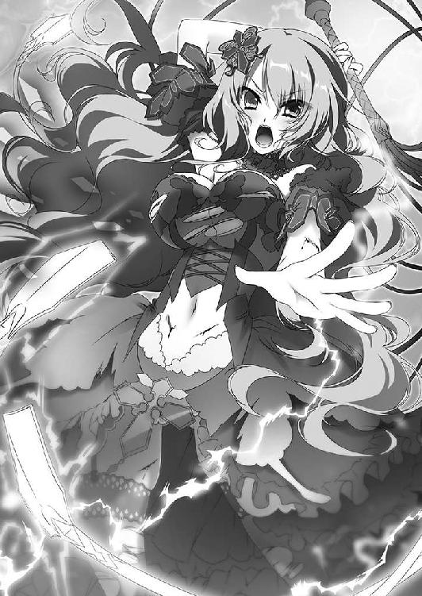
かすっただけでも身体の半分が吹き飛ぶだろう太い爪が大気を薙ぐ。エリザヴェータはとっさに身を屈めてかわしながら、鋼鞭をその爪に叩きつける。
手応えがあり、爪の一本が吹き飛んだ。しかし双頭竜にとってはたいした痛みではないらしく、怯む様子もなく前足を振るう。エリザヴェータは再び地面を転がった。
攻防が続いた。
エリザヴェータは慎重に間合いをはかりながら、ときには鋼鞭で、ときには鞭状に戻して雷渦を振るう。効果はたいして見込めないが、すぐに放てる竜技を叩きこみもした。だが、双頭竜の牙や爪を避けながらでは、致命的な一撃を与えるのはやはり難しい。
双頭竜は残ったひとつの首と、二つの前足でエリザヴェータを攻めたてた。片方の首を潰されて怒り狂っているのか、牙や爪、鱗が傷ついても意に介さず、動きが鈍る様子もない。
エリザヴェータは、肩で息をするようになっていた。暗がりの中で的確な間合いをとり続けることによる、精神的な消耗が激しい。間合いを一度でも誤れば、こちらはほぼ確実に死ぬのだから。
赤い髪は何本も額に張りついて、顔からは幾筋も汗がつたっている。それでもエリザヴェータは一瞬の勝機をつかもうと、双頭竜を見据えていた。
十何度目だったか、双頭竜の左の頭部が襲いかかってきた。エリザヴェータは雷渦を振りあげて迎え撃つ。
刹那、双頭竜はすばやく首を引っこめた。それだけにとどまらず、鱗に覆われたその巨躯を大きくひねる。
「この......っ！」
自分が誘いこまれたことを悟りながら、すさまじい速度で迫る鱗の壁に、エリザヴェータは雷渦を叩きつけた。
強烈な打撃がエリザヴェータの全身を襲い、双頭竜の悲鳴と若者の叫びが天井にこだました。戦姫の身体は空中に舞い、背中から床に叩きつけられる。口の中を切ったらしく、舌先に血の味を感じた。
頭部での攻撃と見せかけて、双頭竜は横腹で体当たりを仕掛けてきたのだ。避けられないと気づいたエリザヴェータは、雷渦の強烈な一打を撃ちこむことで体当たりの威力を減殺した。辛うじて、吹き飛ばされるだけですませたのだ。
エリザヴェータは懸命に身体を起こす。呼吸が荒い。全身に痛みと痺れを感じるが、ありがたいことに意識ははっきりしていた。彼女の視線の先で、双頭竜は身体をよじっている。左の頭部は、口が縦に大きく裂けていた。
──何とか近づいて、竜技を......。
立ち上がる。自分のドレスの胸元が大きく裂けていることに、エリザヴェータはそのとき気づいた。右腕から血が流れていることも。歩こうとして、よろめいた。
「ご主人！」
ウルスが駆けてくるのが、わかった。
下がっていなさいと言ったでしょう。
そう言おうとして、エリザヴェータは声が出なかった。
双頭竜が、横から迫ってくる。ウルスはそちらを見ようとしなかった。ただ赤い髪の戦姫、大切な主だけを見つめていた。
身体ごとぶつかる勢いで、立ち尽くしているエリザヴェータを抱きしめる。そのまま床を転がった。直後、彼女が立っていた空間に、双頭竜の顎が食らいついた。
ウルスは悪態をついて、握りしめていた瓦礫を投げつける。双頭竜の前足に当たって床に落ち、次の瞬間にはその足に踏み砕かれた。
ウルスは歯を食いしばると、エリザヴェータから離れる。巨獣から彼女をかばうように立った。
「何のつもり......!? どきなさい、ウルス！」
エリザヴェータが悲痛な声で叫ぶ。しかし、ウルスはどかなかった。
「呼吸を整えてください、ご主人！」
主に背を向けたままで、こちらを見る双頭竜を睨みつけながらウルスは叫んだ。全身に汗が浮かぶ。膝が震えてへたりこんでしまいそうだ。だが、逃げるつもりはなかった。
「一呼吸か二呼吸ぐらいなら、俺が稼ぎます」
「あなたを犠牲にしろっていうの」
ウルスの後ろで、エリザヴェータは立ち上がろうとしたが、足に力が入らなかった。拳を握りしめて、ウルスは怒鳴り返す。
「俺には武器がない。でも、ご主人にはある。やつを倒すにはどうするか、何をすればいいのか。わかってください！」
いきなり飛びこんできたウルスを警戒しているのか、双頭竜はゆっくりとした足取りでこちらへ向かってくる。
武器がほしいとウルスは思った。エリザヴェータのために時間を少しでも稼ぐ。その気持ちに偽りはない。だが、武器があれば。力があれば、もっといい手が打てるのに。
双頭竜が力強い一歩を踏み出す。振動が床を通してウルスたちにも伝わった。その威嚇に、ウルスは耐えてみせる。
──弓が......違う。必要なのは、力だ。
『──力がほしい？』
その声は、まったく唐突に頭の中に響いた。自分の心の叫びに応えるかのように。
突然のことに驚き、呆然としていると、もう一度その声は聞こえた。
『──ほしいの？』
若い女性の声のように思える。エリザヴェータのそれではない。ねっとりとした妖艶さを含んだ、不思議な声だった。
双頭竜が近づいてくる。ウルスは目を閉じて、その声に答えた。
──ほしい。
滑稽なことをしているという自覚はあった。双頭竜は、まさに目の前まで迫りつつあるのだから。この場には自分とエリザヴェータとこの巨獣しかいないのだから、よくいって幻聴だろう。
だが、ウルスは誠実に応じた。何も持たない自分に、他に手はないのだ。ここから動くつもりもない。だから、その不思議な声の相手をした。
くすりという笑い声が、ウルスの意識をくすぐった。不思議な声同様に、耳に聞こえたのではない。それは若者の頭の中にいてささやきかけているのか、あるいは魂に直接語りかけているかのようだった。
『──間に合っちゃったわねえ』
握りしめていた左手に、ウルスは強烈な熱を感じた。
驚いて目を開け、左手を持ちあげる。
闇の塊としか言いようのないものが、左手を包んでいた。それはウルスの左手を焼きながら、まるで生きているかのように蠢き、細長く伸びてある形をとる。
「......弓？」
『あの子に感謝なさい』
その言葉を最後に、頭の中に突然湧いた声の主は消える。しかし、ウルスはそれどころではなかった。左手の闇は、若者の目の前でまさしく弓を形作っていたのだ。細長く反りのある弓を。弓弦まで張った。
──どうしてだ？
信じられない思いで、ウルスは漆黒の弓を見つめる。
不思議な声といい、この弓といい、理解しきれないことが自分の身に起こっている。迫ってくる双頭竜の方が、よほど現実的に思えるほどの。
しかし、ウルスはそれを拒絶することなく受け入れていた。昔から知っていることだとでもいうかのように。黒い弓を見ても、一片の恐怖も湧いてこない。
──矢は......。
使い方を、ウルスは知っていた。あるいは思いだしたのか。
「ご主人。少しだけ、お借りします」
双頭竜に対し、ウルスは半身を向けるように立つ。両足は石の床を力強く踏みしめた。弓を持つ左手をまっすぐ突きだして、竜に狙いを定めながら、ウルスは右手で漆黒の弓弦を引き絞った。
呆然としてウルスを見上げているエリザヴェータの雷渦が、淡い光を放つ。白い火花をいくつも大気に弾けさせながら、無数の光の粒子が音もなく立ちのぼった。光は雷光を思わせる曲線を描いて、ウルスの右手に注がれていく。
若者の右手に集まった光は、矢を形作る。鏃から矢羽根に至るまで雷光でできた矢を。
弓弦が震える。矢が放たれた瞬間、空間はまばゆいばかりの閃光に包まれた。床が砕けたかと錯覚するほどの雷鳴が轟き、光の矢は無数の枝を伸ばしながら稲妻を思わせる動きと速さで竜に迫る。
竜はもしかしたら、危険を察知したかもしれない。だが、そうだとしても手遅れだった。
竜の顎に飛びこんだと思った次の瞬間には、首から上が粉々に吹き飛んでいる。声をあげることさえなく、双頭竜は即死した。雷光の矢はそのまま双頭竜の巨躯を吹き飛ばし、そこで力尽きたかのように消滅する。
一呼吸分の間を置いて、暗闇が戻ってきた。ウルスの左手に生まれた暗闇の弓も、音もなく霧散する。左手のてのひらと右手の指には、火傷をしたような引きつった跡だけが残った。ウルスは放心したような顔で自分の手を見つめている。
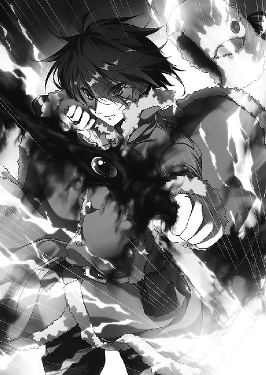
「俺は......」
ウルスの脳裏に、栗色の髪の少女の顔が思い浮かぶ。それから、自分と同じ髪の色をした、がっしりとした身体つきと穏やかな風貌の男。その隣に立っている灰色の髭の老人。いつもそばにいてくれた小柄な老人。
彼らが立っているのは、緑の広がる大地だ。遠くに山があり、森があり、川や湖がある。
「ア......ルサス？」
次いで、白銀の髪の少女。金色の髪を頭の左側で結んでいる女性。秀麗な顔立ちをした禿頭の騎士。他にもいくつもの顔がウルスの脳裏に浮かんでは消える。
──そうだ。俺はウルスじゃない。ウルスというのは父の名で......。
「......ウルス？」
若者の異変に気づいたエリザヴェータが、不安そうな声をかける。彼女も、何が起こったのかはまるでわかっていない。ただ、この若者が自分を助けてくれたことだけは理解していた。そして、いまはそれさえわかっていれば充分だとも。
しかし、ウルスはエリザヴェータの声に応えない。さきほどから頭の中に浮かんでくるものが、若者を混乱させていた。
よろめくウルスを、立ち上がったエリザヴェータがとっさに支える。
「ウルス。しっかり──」
赤い髪の戦姫は、そこで言葉を途切れさせた。色の異なる瞳に戦意を灯し、手に力をこめて雷渦を握り直す。空中に、奇妙な気配を感じたからだ。
「──やれやれ。貴重な双頭竜を失ってしもうた。ドレカヴァクに詫びねばならん」
暗闇の一点が歪曲したかと思うと、ローブをまとい、箒を手にした老婆が現れる。バーバ＝ヤガーだ。目深にかぶったフードの奥、白く光る目は、ウルスに向けられていた。
「だが、収穫じゃ。『弓』よ。わしと来てもらうぞ」
くるりと箒を回転させて、バーバ＝ヤガーはその先端をウルスに突きつける。同時に、エリザヴェータが雷渦を振りあげた。空気を切り裂く黒鞭は、柄の先から九本にわかたれる。それぞれが、白い雷光に包まれた。
ウルスの異変に驚きつつも、彼女は呼吸を整え、力を蓄えていたのだ。
バーバ＝ヤガーの目がぎょろりと動いて、エリザヴェータに向けられる。皺だらけの顔に冷笑が浮かんだ。
エリザヴェータが美しい顔を歪める。彼女の右腕に、無数の針を突き立てられたかのような激痛が走った。戦姫の動きが止まり、苦悶の息が口から吐きだされた。
「力の代償じゃ」
言い捨てると、老婆の魔物はそれ以上エリザヴェータにかまわず、ぼんやりと立っているウルスを見る。
若者の周囲の空間が、歪んだ。バーバ＝ヤガーが突如として現れたときのように。
「では──」
魔物が別れの挨拶を告げようとしたときだった。エリザヴェータが、動いた。顔中を汗にまみれさせ、指一本を動かすことさえ苦痛な右腕を振りあげて。
「──天地撃ち崩す灼砕の爪！」
九つの稲妻が唸りをあげ、一本一本が猛々しい破壊の意志を持ってバーバ＝ヤガーに襲いかかる。油断していた老婆は、完全に不意を突かれた。
衝撃と轟音が空間を圧し、すべてを打ち砕く光が周囲を白く染め上げる。漆黒のローブが引き裂かれ、鶏のそれに似た悲鳴が魔物の口からほとばしった。
「この、おのれ......」
次の瞬間、バーバ＝ヤガーとウルスの姿は、その場から消え去った。
残光が溶けていく中、エリザヴェータだけがその場に取り残される。
「......ウルス？」
色の異なる瞳を左右に走らせて、エリザヴェータはウルスの名を呼んだ。
しかし、答える者はいない。
「ウルス！ ウルス......っ！」
エリザヴェータは取り乱し、暗闇の中で何度もウルスの名を叫んだ。親にはぐれた幼い迷子のように。
エリザヴェータが地上に出てきたのは、ウルスを見失ってから半刻後のことだった。
出口は、すぐに見つかった。空間の奥に細い通路が伸びていて、その先には地上に続く長い階段があったのだ。実際にかかった時間は四半刻足らずといったところだ。
残りの四半刻ほどの時間、彼女は呆然と座りこんでいた。雷渦を握りしめ、身体中の痛みも気にならないほどの衝撃に襲われて気力を失っていた。いくら戦姫とはいえ、これだけのことが立て続けに起これば、さすがに混乱して動けなくなる。
立ち上がったのは、自分を守ろうとしたウルスの後ろ姿を思いだしたからだった。
「どうするか、何をすればいいのか......」
その言葉をつぶやきながら、エリザヴェータは階段を上りきった。
出口は、あの神殿から距離にして一ベルスタ（約一キロメートル）近く離れたところだった。近くに森が広がっていること以外は、目立ったところのない草原だ。遠くにはあの神殿がぽつんと建っているのが見える。
神殿に着いたときはまだ昼にもなっていなかったはずなのに、空は暗くなっていた。
神殿に向かって黙々と歩くエリザヴェータの姿は、さながらおとぎ話に出てくる幽鬼のようだ。赤い髪は乱れ、肌は薄汚れて傷つき、ドレスもところどころが裂けている。色の異なる二つの目だけが、激情を帯びて輝いていた。
歩きながら、エリザヴェータの頭の中では今後の予定が組み立てられている。
あの騎士たちを埋葬してやらなければならず、ウルスもさがしださなければならない。
公宮に戻る前に、近くの村を目指そう。馬は無事だろうか。そうでない場合は、馬も借りなければならない。
──無事でいて、ウルス。今度こそ私が助けてあげる。
萎えそうになる足に力を入れて、エリザヴェータは一歩一歩を踏みしめるように歩いていった。
◎
ティッタが意識を取り戻したのは、日が暮れるころだった。
祭壇の前で倒れている栗色の髪の少女の姿を発見してから、リムとマスハスは外套や毛布を床に敷いて、その上にティッタを横たえ、交替で彼女の様子を見ていたのだ。
呼吸が荒いということもなかったので、神殿から動かずにいたのだが、正解だったらしいとマスハスは思った。
「その、マスハス様とリムアリーシャさんにはご迷惑をおかけしました」
目を覚ましたティッタは、身体を起こして二人にぺこりと頭を下げる。マスハスは満面の笑みで、リムは微笑をにじませて、それぞれ首を横に振った。
「気にしないでください。もう身体はだいじょうぶなのですか？」
「はい。もう、へっちゃらです」
ティッタは笑顔で立ち上がろうとしてみせたが、よろめいたので慌てて二人が支える。
「今日はこの神殿で夜を明かすことにしたから、ゆっくり休め。明日には公宮に着く。そうしたら城下の町で宿を借りて、ベッドで寝られるぞ」
ティッタを寝かせながら、マスハスは灰色の髭を揺らして彼女を励ます。
「長い旅でしたが、もう少しです」
リムもそう言った。二人とも、ティッタが倒れたのは長旅の疲れが出たためだと思っている。とくに熱もなく、身体に異常らしきものもないのだから、他に考えられなかった。
ティッタは横になった姿勢で、左右に座っているリムとマスハスをそれぞれ見上げる。
祈っている最中に自分の身体を闇が取り巻いたことを、彼女ははっきり覚えている。また、心当たりもあった。
──ティル＝ナ＝ファ......。
十の神々の一柱である夜と闇と死の女神。神々の王たるペルクナスの妻であり、姉であり、妹であるという三つの顔を持つ不思議な神だ。
一年近く前、ティッタはティル＝ナ＝ファとおぼしき存在に遭遇したことがある。ティグルがブリューヌの内乱に身を投じていたころで、ティッタも必死に彼についていった。
あるとき、ティグルは何かに導かれるように馬で草原を疾駆し、若者を心配したティッタも同じ馬に乗せてもらっていた。
そして、ティル＝ナ＝ファの神殿が二人の背後に忽然と現れたのだ。
神殿の中で、ティッタは何かに取り憑かれた。
あのときと同じ感覚を、ティッタは祭壇の前で闇に取り巻かれたときに抱いたのだ。自分の中に何かが入りこんでくる、不思議な感覚を。
だが、ティッタはそのことをマスハスにもリムにも黙っていようと決めた。ティッタ自身、よくわかっていないのだ。話しても二人をむやみに心配させるだけだった。
だから、明るい話題だけを伝えることにした。ティッタは笑顔で二人に言った。
「そういえば、あたし、夢を見たんです。ティグル様の夢を」
ほう、とマスハスは話に乗ってくれた。
「どんな夢じゃった？」
「ティグル様は真っ黒な弓を持って、頭が二つある竜に立ち向かっていたんです。女のひとを後ろにかばって。少し怖かったけど、でも、やっぱりいつものティグル様で......素敵で、嬉しくて......」
あれは夢ではないとティッタは思う。夢にしては、何もかもが生々しすぎた。
「竜か。まあ、先の内乱ではそんなこともあったからの」
マスハスはティッタの頭を優しく撫でながら笑っている。リムも微笑を浮かべて見守っていた。
神殿の外では、徐々に空が暗くなっていった。
◎
地面の冷たい感触で、ウルスは目を覚ました。
すばやく飛び起きて手を伸ばす。だが、つかもうとした弓はなく、手は何もない空間をむなしく握りしめただけだった。
「ここは......？」
顔を上げて、ぐるりと見回す。目につくものは葉を落とした寂しげな木々ばかりで、張り巡らせるように伸びた枝の隙間から灰色の空が見えた。太陽はだいぶ傾いている。
──どこかの森の中か......？ いや、それより。
エリザヴェータの姿がないことに気づいて、ウルスの顔が青くなった。
「ご主人！ どこにいらっしゃいますか！」
木々の中に向かって、大声で呼びかける。だが、声はむなしく響くばかりで反応ひとつない。疲れて叫ぶのをやめると、あたりはしんと静まり返った。
「何がどうなっているんだ......？」
ウルスはため息をつく。自分の身に起きたことが、信じられなかった。
同僚であるはずの騎士たちに襲われ、怪しげな老婆の力によってエリザヴェータとともに神殿の地下に落とされた。竜と遭遇し、自分でもよくわからない不思議な力で倒したと思ったら、今度は見知らぬ森の中だ。悪夢のようで、現実感がまるでなかった。
左手を見ると、火傷にも似た、引きつった傷跡があった。
頭の中に響いた女性の声。そして、闇を凝縮して作り上げたかのような弓。
エリザヴェータのあの鞭から力を引き出して作り上げた矢。
自分はそれを、当たり前のように使った。使い方を知っていた。
頭の奥に鈍い痛みを感じ、同時にとある情景が脳裏に浮かぶ。
黒い弓を構える自分がいた。その隣に立つのは長剣を持った白銀の髪の戦姫だ。
「......エレン？」
彼女の愛称が、勝手に口をついた。つぶやいてからウルスは顔をしかめる。
エレオノーラだから、愛称はエレン。なるほど。どうして自分はそれを知っているのだろうか。なぜ、呼び慣れているかのように、すんなり紡ぐことができたのか。
──当たり前だ。忘れるはずがない。
そう思って、ウルスは何度か瞬きをする。どうして忘れるはずがないのか。
頭痛とともに、意識の片隅で声がする。眠っていたものが目を覚ましかけている。
ティッタ。亡き父ウルス。バートラン。マスハス卿。聞いたことがある。
「アル......サス？」
どこだ、それは。決まっている。帰るべきところだ。
「帰るところ......？」
頭痛を振り払うように首を激しく振って、ウルスはうつろな目を木々へと向ける。
「そうだ。公宮に帰らないと......。ご主人もきっと公宮に戻られたはず」
冬の冷たい風が、木々の間を通り抜けてウルスに吹きつける。若者は身体を縮こまらせながら、よろよろと歩きだした。風邪をひいたように身体が重く、頭が痛い。何かの情景が浮かぶたびに頭に鈍い痛みが走り、どこかで聞いたような名前が思い出される。
木の根につまずいて転んだ。痛みに呻きながら身体を起こしたとき、ウルスははっとして顔を上げた。木々の向こうから複数の足音と声が聞こえたのだ。
木の陰に隠れようと思ったが、身体が思うように動かない。もたもたしているうちに、見つかってしまったらしい。足音と声はこちらへ向かってくる。
四人の男だった。三人は薄汚れた革鎧を着込んで腰には剣を吊し、ひとりだけが鎖かたびらを着て手斧を腰に差し、手に幅広の剣を持っていた。四人とも、いかにも野盗という風体だ。ウルスを見る目つきからして旅人とは思えない。
ウルスはぼんやりとした顔で男たちを見上げた。男たちは顔を見合わせる。
「行き倒れか。どうする？ 町まで引きずっていって売り払うか？」
「売れそうな面か、これが。殺して身ぐるみだけ剥いでいこうぜ」
「殺すなら、頭から刻んでいっていいか？ 最近そういうことしてないからよ」
ひとりが陰惨な目つきでウルスを見下ろし、嗜虐的な笑みを浮かべた。しかし、鎖かたびらを着た男が呆れた顔でたしなめる。
「血の匂いで獣が寄ってきたらどうする」
前へ進み出ると、男は幅広の剣の切っ先をウルスに突きつけた。
「金、持ってるか？」
ウルスは答えない。答えられなかった。男は冷淡な目で若者を見下ろして、続けた。
「よし、死ね。服と靴だけでももらっていってやるよ」
その瞬間、ウルスはとっさに身体を横に倒して地面に転がる。男がまっすぐ突き出した剣は何もない空間を貫いた。
ウルスにしてみれば必死の行動だったが、それは男たちを苛立たせただけだった。若者が身体を起こすよりも早く、男がウルスを蹴り飛ばす。おもわずうずくまる若者に、男は今度こそ葬り去らんと剣を振り上げる。
風を切って矢が飛来したのは、そのときだった。くぐもった音を響かせて、男の後頭部から額へと赤黒い鏃が突き抜ける。自分に何が起こったのかよくわからないまま、剣を振り上げたままの姿勢で男は仰向けに倒れた。
「だ、誰だ！ 何をしやがる！」
残った三人が、驚きに包まれた顔で矢の飛んできた方向を振り返る。隠れる素振りも見せず、足音が近づいてきた。
姿を見せたのは、ひとりの若者だった。年齢はウルスと同じくらい。一目でムオジネル人だとわかる褐色の肌が印象的な男だ。厚手の外套を着こみ、頭には橙色の布を巻きつけている。腰には反りのある剣を下げ、ベルトには小さな袋をいくつも結びつけていた。左手には弓を持っている。
「──おまえら、盗賊とか野盗の類だろう？」
ムオジネル人の若者の視線が男たちを一巡し、決めつけるような調子で言った。ひどく訛りのあるジスタート語で。
野盗たちは答えず、怒りに顔を歪めてそれぞれ剣を抜き放つ。若者を囲むように三方から斬りかかった。
若者はその場から動かない。迫りくる敵との距離を冷静に測り、左手に持っていた弓を勢いよく突き出し、その先端で左から接近してきた男の片目をえぐった。同時に腰の剣を引き抜いて、一閃する。正面から襲いかかった野盗の首が、血の尾を引いて飛んだ。
片目を失った野盗は顔をおさえてその場にうずくまり、もうひとりは首を失って地面を赤黒く染めながら倒れる。
残ったひとりは衝撃のあまり、その場に立ち尽くしてしまった。そして、それはムオジネル人の若者に体勢を立て直す時間を与えただけだった。
喉を斬り裂かれて、鮮血を噴き出しながら三人目も倒れる。若者はそちらには目もくれず、うずくまっている野盗を冷徹な目で見下ろし、ためらうことなく剣を突き立てた。
野盗たちが倒されていくさまを、ウルスは身体を起こしながら呆然と見つめていた。隙のない、そして容赦のない動きだった。
ムオジネル人がこちらを見た。血なまぐさい空気に包まれて、二人は見つめ合う。
「おまえ、こいつらの仲間か？」
血にまみれた剣を突きつけて、ムオジネル人は訊いてきた。ウルスは目を丸くして激しく首を横に振る。ムオジネル人は剣を突き出したままウルスの姿を観察していたが、ほどなく剣を下げた。
「そうだな。おまえ、武器も持ってなければ鎧もつけてないもんな」
そう言うと、その場にしゃがみ込み、死体の服を斬り裂いて、それで剣についた血を拭いはじめる。戸惑ったまま動けずにいるウルスを見て言った。
「ぼうっとしてないで、おまえも漁れよ」
「......俺も？」
「死体は狼や鴉に食わせてやるとしても、金はやつらには無用のものだろう」
ウルスは呆れた顔で若者を見つめる。ようやく理解していた。この若者は自分を助けてくれたのではなく、金を奪っても問題のなさそうな野盗を襲ったというだけなのだ。それにしても弓といい、剣といい、見事な技量だった。
ウルスは野盗たちの死体をぼんやりと眺めていたが、ため息をひとつつくと、まだ続いている頭痛や寒気を堪えて、死体に近づいていく。
──どうであれ、助けてもらったからな。
それに、ウルス自身も食糧や火を熾すための道具が必要だった。ここがどこなのか分からず、武器もないのだから。あまり気分のいい行為ではなかったが、死体の懐を漁る。
ふと見上げた空には、夜の気配が忍びよっていた。
布にくるまれていた干し肉とパン、水筒、数十枚の銅貨や銀貨、それから火口箱をはじめとして旅をするために必要な道具を抱えると、ウルスと若者はその場を離れた。
野盗たちの死体はそのままにしておく。血の匂いが獣をおびきよせるため、埋葬してやる余裕などなかった。
「おまえ、この近くの村の者か？」
ムオジネル人に聞かれて、ウルスは首をひねる。
「それが、よくわからないんだ。気がついたらここに倒れていて」
正直に答えたのだが、若者は顔をしかめてウルスに無遠慮な視線をぶつけてくる。
「何だ、そりゃ。人さらいにでもあったのか？」
「そんな感じかなあ......」
ウルスは首をひねりながら答える。魔物や竜に出くわしたと言ったら、この若者は信じてくれるだろうか。それから、ウルスは彼の名前も知らないことに気づいた。
「そういえば、礼がまだだったな。俺はウルスだ。助けてくれてありがとう」
「まだ助けたとはかぎらないけどな。俺はダーマードだ」
そう言って、ダーマードと名のった若者は皮肉っぽい笑みを浮かべた。
焚き火が燃えている。炎に炙られているのは、ダーマードが仕留めた兎だ。
すでに日は暮れ、森は夜の闇に包まれていた。空気は冷たいが、風を木々が遮ってくれるのがせめてもの救いだろう。
「おまえ、案外器用なんだな」
自分の弓をしげしげと眺めて、弓弦を引っ張りながらダーマードが感心したように言った。ウルスが手入れをさせてほしいと申し出て、弓弦を張り直したのだ。
「弓には少し自信があるんだ」
ウルスは微笑を浮かべて答えた。頭痛と悪寒は続いていたが、耐えられるていどにはやわらいでいる。
痛みを顔には出さないように努めながら、真面目な顔つきでウルスは言った。
「俺はルヴーシュの公宮に勤めている。戻りたいんだけど、場所を知らないか？」
ウルスの言葉に、ダーマードは胡散臭げな目つきを向けた。
「公宮って、戦姫とやらがいるところだろう？ おまえみたいなとろくさそうなのが勤めることができるのか？」
ひどい言い種だと思ったが、ウルスはそれほど不快感を覚えなかった。この若者の態度が率直だからだろう。
「一応、戦姫さまの従者を務めさせていただいている」
ダーマードの疑いをかえって深めてしまいそうだったので、騎士見習いだの相談役だのは黙っておいた。ダーマードは鼻を鳴らすと、面倒くさそうな表情でうなずく。
「謝礼はいくら出す？」
「銀貨五十枚でどうだろう」
「百枚」
平然と、ダーマードは倍額を提示した。ウルスは苦笑しながら首を縦に振る。
「わかった。無事に着いたら用意するよ」
「嘘だったら、ただじゃすまないと思えよ。公宮はここから歩いて一日ぐらいのはずだ。夜が明けたら出発するとして、夕方には着くからな」
ウルスは驚きに目を丸くした。どこに連れ去られたのかわからなかったが、あの神殿から少し遠いぐらいのところらしい。
焼けた兎の肉を、ダーマードは短剣でてきとうな大きさに切る。木の枝に突き刺してウルスに渡した。礼を言って受け取りながら、ウルスは気になったことを尋ねる。
「ところで君は何者なんだ？」
「俺はムオジネルの商人だ。正確には見習いだがな。修行でこの国に来た」
「修行で異国に？」
「俺の母国じゃ、よくあることさ。おまえも公宮に勤めているというなら、城下の町でムオジネル人の商人を見たことはないか？」
なるほどとウルスは納得した。遠い縁を訪ねてきたということか。
嘘である。ダーマードは生まれてこの方、商人を志したことなどない。
彼は、ムオジネルの王弟クレイシュ＝シャヒーン＝バラミールの部下だ。側近と呼べるほどの地位にはないが、クレイシュに顔と名前を覚えられ、目をかけられている。若いながらに生粋の戦士であり、一軍の将だった。
そんな彼がルヴーシュにいるのは、わけがある。ティグルヴルムド＝ヴォルンの生死をたしかめるよう主たるクレイシュに命令されたのだ。
クレイシュは、ブリューヌに攻めこむ計画を密かにたてている。そのとき、ティグルが生きているかどうかで状況は大きく変わる。ティグルの生死は、クレイシュにとって戦争をはじめる前にはっきりさせておきたい重要な項目のひとつなのだ。
彼の命令を受けたダーマードは、商人を装ってジスタートに潜りこんだ。まずレグニーツァに向かい、ティグルが海に落ちたという話について詳しく調べた。その後、異なる角度からの情報も求めてルヴーシュを訪れたのだ。
ウルスを助けたのは、半ばは気まぐれであり、もう半分は言ってしまえば退屈しのぎだった。このルヴーシュでは、ティグルについての情報はまるで得られておらず、他に興味を引くような話も聞けず、ダーマードはうんざりしていたのだ。
それに、ここから公宮までは歩いて一日の距離であり、助けても手間がかからなさそうだ。それならば、恩を売っておくのも手かと思ったのだった。
「しかし、おまえ言葉下手くそだな。どこの田舎の出だ」
兎の肉をかじりながら遠慮なくダーマードが言うと、ウルスも言い返した。
「言葉については似たようなものじゃないか」
「俺はムオジネル人だから、ジスタート語が多少下手でもいいんだよ」
「それを言うなら俺もブリューヌ人らしいからな」
「何だ。らしいって」
怪訝そうな顔のダーマードに、ウルスは自分が記憶喪失であることを話した。ムオジネル人の若者はますます疑り深い目つきになる。
「おまえ、さっきからてきとうなことを言ってるんじゃないだろうな」
「でたらめを並べるなら、それこそご主人......戦姫さまの下で働いているなんて言わないよ。ルヴーシュの城下の町で暮らしていた、ぐらいの方が信じてもらえるだろう」
「まあ、俺も公宮に行くつもりだったからな。くそ、銀貨百五十枚にするべきだった」
悪態をついたダーマードは、ふと何かを思いついたような顔でウルスを見た。
「そうだ。おまえ、ブリューヌ人ならティグルヴルムド＝ヴォルンってやつを知っているか？ 記憶がないにしても、何か知っていることはないか？」
「ティグルヴルムド＝ヴォルン......だって？」
ウルスは驚きのあまり、身を乗り出していた。
「たぶん、いや、きっと、俺のことだ」
「......はあ？」
たっぷり十秒近い沈黙のあと、ダーマードは目を丸くしてウルスを睨む。ウルスは勢いこんで必死に言葉を紡ぐ。
「言っただろう。記憶がないって。記憶を失う前の俺は、そのティグルヴルムド＝ヴォルンだった可能性があるんだ」
自分で口にしてみると、間違いないと思えてくる。アルサスという土地。ティッタという侍女。自分を守って命を落としたバートラン。世話を焼いてくれたマスハス。
ウルスというのは、自分の父の名だったはずだ。
あの漆黒の弓を使った瞬間、堰を切ったように多くの情報がウルスの頭の中にあふれてきた。そのどれもが、おまえはティグルヴルムド＝ヴォルンだと訴えている。まだ他人の記憶のような、あやふやなところはあるが。
「よかったら教えてくれないか。君の知っているティグル──」
ウルスの台詞はそこで途切れる。視界の端に銀色の刃が煌めいた。ダーマードがにわかに剣を抜き放ち、ウルスに突きつけたのだ。ムオジネル人の両眼には疑惑と殺意が浮かび、ウルスは突然の事態に呆然として動けない。
焚き火の音だけが、静かに響いていた。
あとがき
はじめまして。前巻からは四ヶ月ぶり、他社で出している作品も読んでくださっている方とは一か月ぶりですね。
川口士です。多くの方に助けられて、どうにか『魔弾の王と戦姫』九巻をお届けすることができました。楽しんでいただければ幸いです。
九巻とあってさすがに登場人物も増えてきたので、今回登場人物紹介を作っていただきました。細かい脇役まで含めると、登場人物一覧だけで何ページか使ってしまうので厳選しましたが、読む際の参考にしてもらえればと思います。
さて、突然ですが、諸事情によりイラストを担当する方が交替となりました。
前巻まではよし☆ヲさんがティグルやエレンをはじめとする数多の登場人物を描いてくださっていたのですが、よし☆さんのご事情により、これ以上続けることは不可能となりました。
読者の皆様には申し訳なく、僕にとっても残念なことになりましたが、替わって片桐雛太さんに、これからの当シリーズのイラストを手がけていただけることとなりました。
片桐さんの描かれるティグルやエレンについては今巻を見てもらった通りでして、よし☆ヲさんのデザインを踏まえつつも、片桐さんご自身の個性でティグルを格好よく、また女性陣もときに凛々しく、ときに可愛らしく描いていただいています。
魔弾はまだまだ続きますが、これからも物語といっしょに描かれていく片桐さんのイラストを楽しみにしていただければと思います。次は秋ぐらいに出たらいいな。
それでは謝辞を。
編集のＮさん、今巻からいっしょにお仕事をしていくことになったのに、のっけからあれやこれやと無理なことを言ってご迷惑をおかけしました。
それから片桐雛太さん、あらためて数々の魅力的なイラストをありがとうございます。
拙著が書店に置かれるまでの諸々に関わった方々にも、この場を借りてお礼を申し上げます。
最後に告知をいくつか。月刊コミックフラッパーさんで連載中、柳井伸彦さん手がけるコミカライズ版『魔弾の王と戦姫』五巻が先月発売されました。興味のある方は、ぜひ。
あとアニメですが、変わらず鋭意進行中です。詳しい発表は夏ぐらいにできるんじゃないの、という感じでして、もうしばらくお待ちください。
それではまたどこかでお会いしましょう。
川口 士
著者
川口士（かわぐち・つかさ）
１９７９年生まれ。２００６年、第18回富士見ファンタジア長編小説大賞にて『戦鬼』で大賞を受賞。
その後、いろいろなところでいろいろ書く。
９巻です。二つ目のゴールはようやく見えてきた（と思う）のですが、まだまだ遠いような近いような。
イラスト
片桐雛太（かたぎり・ひなた）
はじめまして。イラストを担当させていただくことになりました片桐雛太です。
これまで応援くださった読者の皆さまのご期待に少しでも添えますよう、全力で取り組んで参ります。なにとぞよろしくお願いします！
魔弾の王と戦姫９
2014年5月31日発行 ver.2.0
著者 川口士
発行者 三坂泰二
編集長 万木壮
発行所 株式会社ＫＡＤＯＫＡＷＡ
〒102-8177
東京都千代田区富士見2-13-3
03-3238-8745（営業）
編集 メディアファクトリー
0570-002-001（カスタマーサポートセンター）
年末年始を除く平日10:00～18:00まで
©Tsukasa Kawaguchi 2014
※無断で複製・複写・データ配信などをすることは、かたくお断りいたします。
本電子書籍は下記にもとづいて制作しました
ＭＦ文庫Ｊ
魔弾の王と戦姫９
発行日 2014年5月31日 初版第一刷発行

本作品の全部または一部を無断で複製、転載、配信、送信したり、ホームページ上に転載することを禁止します。また、本作品の内容を無断で改変、改ざん等を行うことも禁止します。
本作品購入時にご承諾いただいた規約により、有償・無償にかかわらず本作品を第三者に譲渡することはできません。
本作品を示すサムネイルなどのイメージ画像は、再ダウンロード時に予告なく変更される場合があります。
本作品は縦書きでレイアウトされています。
また、ご覧になるリーディングシステムにより、表示の差が認められることがあります。